0. AI, Machine Learning, Neural Networks and Deep Learning: at a Glance 人工智能、机器学习、神经网络和深度学习：概览
人工智能和机器学习
人工智能是使机器能够模仿人类行为的技术的广义术语
机器学习是人工智能技术的子集，使机器能够从经验中学习
数据驱动
统计算法
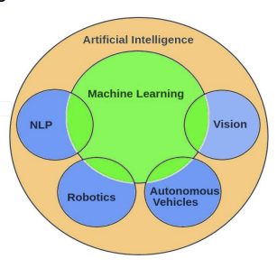
神经网络是机器学习的一个子领域
深度学习是神经网络的一个子领域
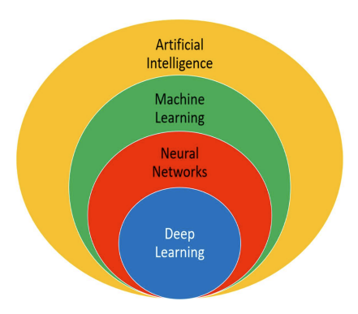
1. Introduction to Machine Learning 机器学习简介
机器学习是一个快速发展的领域。这引发了一个问题：机器能比人类学习得更好吗？要找到答案，首先要从人类的角度理解什么是学习。然后，才能进一步了解什么是机器学习。最后，我们需要知道，在生活的方方面面，机器学习是否已经超越或有可能超越人类学习。
1.1 什么是人类学习？
在认知科学中，学习通常是指通过观察获得知识的过程。我们为什么需要学习呢？在日常生活中，我们需要进行多种活动。这可能是一项简单的任务，如走在街上或做家庭作业。也可能是一些复杂的任务，比如决定火箭发射的角度，使其具有特定的轨迹。要以正确的方式完成一项任务，我们需要对与任务相关的一件或多件事情有先验知识。此外，随着我们不断学习，或者说掌握更多的知识，完成任务的效率也会不断提高。例如，知识越多，做作业的能力就越强。同样，从过去的火箭发射中获得的知识有助于采取正确的预防措施，使火箭发射更加成功。因此，学习越多，完成任务的效率就越高。
1.2 人类学习的类型
从直觉上思考，人类的学习有三种方式：
(1) 由领域专家直接教我们；或
(2) 我们根据过去从专家那里学到的知识，间接地建立自己的概念；或
(3) 我们自己动手，可能是在多次尝试之后，有些尝试并不成功。
我们可以把第一种学习方式称为 “在专家指导下的直接学习”。第三种是自我学习或自学。接下来，让我们用现实生活中的例子来深入分析这几种类型，并尝试理解它们的含义。
1.2.1 Learning under expert guidance 在专家指导下学习
一个婴儿可能会直接从他/她的父母那里学到某些特征和特性。他称自己的手为 “手”，因为这是他从父母那里获得的知识。天空是 “蓝色 ”的，因为这是他父母教给他的。我们说宝宝从父母那里 “学习 ”东西。
人生的下一个阶段是宝宝开始上学的时候。在学校里，他首先要熟悉字母和数字。然后，宝宝学习如何用字母组成单词，用数字组成数字。慢慢地，他开始学习更复杂的句子、段落、复杂的数学和科学等。婴儿可以从老师那里学到所有这些东西，因为老师已经掌握了这些领域的知识。
工科学生学习土木、计算机科学、电气、机械等学科的技能，医学生学习解剖学、生理学、药理学等。有一些专家（一般是教师）在相关领域拥有深入的学科知识，他们会帮助学生学习这些技能。
然后，他开始在某个领域从事专业工作。虽然他可能已经在相关领域学习了足够多的理论知识，但他仍然需要学习更多关于如何动手应用所学知识的知识。专业导师帮助新人在职学习。
在人类生活的各个阶段，都有指导学习的因素。有人传授这种学习方法，完全是因为他/她已经凭借自己在该领域的经验积累了知识。因此，引导式学习就是从因过去的经验而拥有足够知识的人那里获取知识的过程。
1.2.2 Learning guided by knowledge gained from experts以专家传授的知识为指导的学习
学习的一个重要部分，也是教师或导师在某一时刻以其他形式/背景传授的知识。例如，
(1) 即使父母没有专门教他，婴儿也能把所有相同颜色的物体组合在一起。他之所以能这样做，是因为他的父母在某一时刻告诉过他哪种颜色是蓝色、哪种颜色是红色、哪种颜色是绿色等。他之所以能做到这一点，是因为他的英语老师早就教会了他给单词贴上动词或名词标签的能力。
(2) 一个成年孩子能从一组词中选出一个奇怪的词，因为这个词是动词，而其他词都是名词。他之所以能做到这一点，是因为他的英语老师早就教会了他给单词贴上动词或名词标签的能力。
(3) 在职业角色中，一个人能够根据他的上司很久以前教给他的关于偏好的知识来确定他应该向哪些客户推销产品。在所有这些情况中，都没有直接的学习。而是在不同的背景下分享过去的一些知识，并将其作为一种学习来做出决策。
在所有这些情况下，都不存在直接学习。而是在不同的背景下分享过去的知识，并将其作为决策的学习内容。
1.2.3 Learning by self自学
在许多情况下，人类只能靠自己学习。一个典型的例子是婴儿学习穿过障碍物。他多次撞到障碍物并摔倒，直到他学会只要有障碍物，他就必须越过它。
孩子学骑自行车或成人学开车时，也会面临同样的挑战。不是所有的东西都是别人教的。很多事情只能从过去的错误中学习。我们往往会根据自己的经验，列出一份清单，列出我们应该做的事情和不应该做的事情。
1.3 WHAT IS MACHINE LEARNING?
在回答 “什么是机器学习？”这个问题之前，还有一些更基本的问题：
-
机器真的会学习吗？
-
如果是，它们是如何学习的？
正式确定机器学习的定义非常重要。这本身就能解决第一个问题，即机器是否真的会学习。机器学习有多种定义方法。但最贴切、最简洁并被普遍接受的可能是卡内基梅隆大学计算机科学学院机器学习系教授汤姆-米切尔（Tom M. Mitchell）所下的定义。汤姆-米切尔说：
"就某类任务 T 和性能指标 P 而言，如果计算机程序在任务 T 中的性能指标 P 能随着经验 E 的增加而提高，那么就可以说计算机程序从经验 E 中学习。"
‘A computer program is said to learn from experience E with respect to some class oftasks T and performance measure P, if its performance at tasks in T, as measured by P,improves with experience E.’
这句话的基本意思是，如果一台机器能够通过完成某项任务积累经验，并在未来完成类似任务时提高性能，那么它就可以被认为是在学习。
当我们谈论过去的经验时，它指的是与任务相关的过去的数据。
这些数据是从某个来源输入机器的。在学习下跳棋的情境中，E 代表下棋的经验，T 代表下跳棋的任务，而 P 则是由玩家所赢棋局的百分比来表示的性能指标。
同样的映射也可应用于任何其他机器学习问题，例如图像分类问题。
在图像分类问题中，E 代表过去的数据，其中的图像具有标签或指定的类别（例如，图像属于 “猫 ”类、“狗 ”类还是 “大象 ”类等），T 代表为新的、未标记的图像指定类别的任务，P 代表正确分类图像的百分比。
1.3.1 How do machines learn?
机器学习的基本过程可分为三个部分。
(1) 输入数据 Input Data： 利用过去的数据或信息作为未来决策的基础
（2）抽象Abstraction： 通过底层算法以更广泛的方式表示输入数据
（3）泛化Generalization： 将抽象化的表征加以概括，形成决策框架
让我们从人类学习过程的角度来理解机器学习过程。考虑一下从课堂和书本学习以及准备考试的典型过程。许多学生都倾向于尽可能多地记忆知识。在学习范围不是很广的情况下，这样做可能会很有效。然而，随着学习范围的扩大和考试问题的复杂化，死记硬背的策略就不灵了。
在人类的学习中，我们看到的是，仅靠死记硬背和完美记忆，学生只能在某一阶段的考试中取得好成绩。除此之外，还需要采取更好的学习策略：
(1) 能够处理庞大的学科内容和记忆中的相关问题
(2) 能够回答没有学到直接答案的问题。
例如，一个广泛的知识库可能包括所有活的动物及其特征，如它们是生活在陆地还是水里，它们是否产卵，它们是否有鳞片、皮毛或没有鳞片等。对任何学生来说，记住所有活体动物的特征都是一项艰巨的任务。最好的办法是总结出所有有生命的动物所属于的基本类群以及每个基本类群的特征：
(i) 无脊椎动物： 没有背骨和骨骼，如蠕虫、昆虫等。
(ii) 脊椎动物
-
鱼类： 总是生活在水中并产卵
-
两栖动物： 半水栖，即可以生活在水中或陆地上；皮肤光滑；产卵
-
爬行动物： 与两栖类一样为半水生动物；皮肤有鳞片；产卵；冷血
-
鸟类： 会飞；产卵；温血动物
-
哺乳动物：有毛或皮毛；有乳汁喂养幼崽；温血动物
在机器学习范式中，大量知识可从输入数据中获取。然而，从输入数据中绘制出的不是全部知识，而是一个概念图。这只不过是机器对知识进行的抽象。最后，从输入数据中抽象出来的映射可用于得出重要结论。例如，
(i) 如果给定了动物的群体，那么就可以美化对其特征的理解。
(ii) 相反，如果给出一种未知动物的特征，则可以对其所属的动物类别做出明确的结论。这就是机器学习中的概括。
1.3.1.1 Abstraction 抽象
在机器学习过程中，知识是以输入数据的形式输入的。正如我们在上面的示例中看到的，抽象有助于根据输入数据推导出一个概念图。这个图，或者机器学习范式中所说的模型，是原始数据的总结性知识表示。模型可以是以下任何一种形式：
(1) 计算块，如 if/else 规则
(2) 数学公式
(3) 特定数据结构，如树或图
(4) 类似观察结果的逻辑分组
为特定学习问题选择模型是人类的任务，基于多个方面，其中一些方面如下：
(1) 要解决的问题类型： 问题是否与预测或预报、趋势分析、理解不同的部分或对象组等有关： 输入数据的详尽程度、数据是否有许多字段的无值、数据类型等。
(2) 输入数据的性质： 输入数据的详尽程度、数据是否有许多字段的无值、数据类型等。
(3) 问题的领域：如果问题属于数据吞吐量大且需要立即推理的关键领域，如银行领域的欺诈检测问题。
一旦选择了模型，接下来的任务就是根据输入数据拟合模型。
让我们通过一个例子来理解这一点。如果模型用数学公式表示，例如 y =c1+c2x，那么根据输入数据，我们必须找出 c1 和 c2 的值。否则，方程（或模型）就没有用了。因此，在这种情况下，拟合模型意味着找出方程或模型中未知系数或常数的值。
根据输入数据拟合模型的过程称为训练或学习。此外，最终确定模型所依据的输入数据也称为训练数据。
1.3.1.2 Generalization 一般化(泛化)
机器学习过程的第一部分是抽象，即以模型的形式从输入数据中抽象出知识。然而，这种抽象过程或训练模型只是机器学习的一部分。另一个关键部分是将抽象出来的知识调整为可用于未来决策的形式。这是泛化的一部分。
模型是基于有限的数据集进行训练的，这些数据集可能拥有有限的特征。但是，当我们要将模型应用到一组未知数据（通常称为测试数据）上进行决策时，可能会遇到两个问题：
(1) 训练模型与训练数据过于一致，因此可能无法反映实际趋势。
(2）测试数据具有某些训练数据明显未知的特征。
因此，我们有可能无法做出正确的决策--很明显，因为所做的某些假设在现实中可能并不正确。但是，就像机器一样，人类也可能犯同样的错误，即在无法做出基于理性的准确决策的情况下，根据直觉做出决策。
1.4 TYPES OF MACHINE LEARNING
机器学习可分为三大类：
(1) 监督学习 Supervised learning - 也称为预测学习。机器根据类似对象的先前类别相关信息，预测未知对象的类别。
(2) 无监督学习 Unsupervised learning - 也称为描述性学习。机器通过将类似对象分组，发现未知对象的模式。
(3) 强化学习 Reinforcement learning - 机器学会自己行动，以实现既定目标。
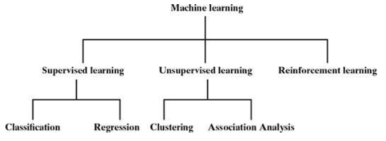
1.4.1 Supervised learning
监督学习的主要动机是从过去的信息中学习。那么，监督学习需要什么样的过去信息呢？它就是关于机器必须执行的任务的信息。根据机器学习的定义，这些过去的信息就是经验。让我们举个例子来理解它。
假设一台机器正在获取不同物体的图像作为输入，其任务是根据物体的形状或颜色对图像进行分类。如果是根据形状，则需要将圆形物体的图像与三角形物体的图像分开，等等。如果根据颜色进行分类，则需要将蓝色物体的图像与绿色物体的图像分开。
但机器如何知道什么是圆形，什么是三角形？同样，机器又如何根据物体的颜色区分它是蓝色还是绿色呢？机器就像一个小孩子，在他开始工作之前，父母或大人需要引导他了解形状和颜色的基本信息。机器需要得到基本信息。这种基本输入，或者说机器学习范式中的经验，是以训练数据的形式提供的。在图像分隔问题中，训练数据将包含一些图像的不同方面或特征的过往数据，以及图像是圆形还是三角形、颜色是蓝色还是绿色的标签。标签被称为标签，在监督学习中，我们称训练数据是有标签label的。
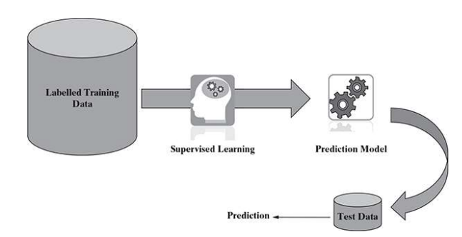
监督学习的一些例子有
(1) 预测游戏结果
(2) 预测肿瘤是恶性还是良性
(3) 预测房地产、股票等的价格
(4) 对文本进行分类，例如将一组电子邮件分为垃圾邮件和非垃圾邮件
现在，让我们考虑上述两个例子，例如 “预测肿瘤是恶性还是良性 ”和 “预测房地产价格”。
这两个问题的性质相同吗？答案是 “不”。
虽然它们都是预测问题，但在一种情况下，我们试图预测未知数据属于哪个类别，而在另一种情况下，我们试图预测的是一个真实值，而不是一个类别。当我们试图预测一个分类变量时，这个问题被称为分类问题classification。而当我们试图预测一个实值变量时，问题就属于回归范畴regression。
让我们试着更详细地了解监督学习的这两个领域，即分类和回归。
1.4.1.1 Classification
让我们来讨论一下如何根据形状来分离物体图像。
如果图像是圆形物体，则归入一类；如果图像是三角形物体，则归入另一类。机器应该将未知类别的图像（在机器学习中也称为测试数据）归入哪一类，取决于它从过去的数据（我们称之为训练数据）中获得的信息。
由于训练数据为每张图像都定义了标签或类别，因此机器必须将新图像或测试数据映射到与之相似的图像集合中，并为测试数据分配相同的标签或类别。
因此，我们可以看到，整个问题都围绕着根据训练数据提供的标签或类别信息为测试数据分配标签或类别。由于目标是分配类标签，因此这类问题被称为分类问题。下图描述了典型的分类过程。
总之，分类是一种监督学习，即根据训练数据提供的信息对测试数据中的目标变量（分类变量）进行预测。目标分类变量被称为 “类”class。
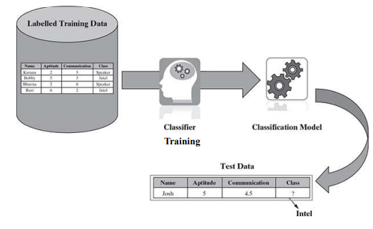
一些典型的分类问题包括
(1) 图像分类
(2) 疾病预测
(3) 比赛胜负预测
(4) 地震、洪水等自然灾害预测
(5) 笔迹识别
1.4.1.2. Regression
在回归中，目标是预测数字（实值）变量，如房地产或股票价格、温度、考试分数、销售收入等。基本预测变量和目标变量在性质上是连续的。
在简单线性回归中，只有一个预测变量，而在多元线性回归中，模型中可以包含多个预测变量。
让我们以销售经理的年度预算工作为例。他们必须根据往年的销售额和投资额对下一年的销售额进行预测。显然，与过去相关的数据和要预测的数据都是连续的。在基本方法中，可以应用一个简单的线性回归模型，将投资作为预测变量，将销售收入作为目标变量。
下图显示了一个典型的简单回归模型，根据目标变量（即萼片长度）的值与预测变量（即花瓣长度）的不同值拟合回归线。
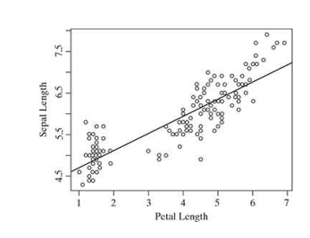
回归法的典型应用包括
(1) 零售业的需求预测
(2) 管理人员的销售预测
(3) 房地产的价格预测
(4) 经济学中的增长预测
(5) 教育中的入学人数预测
1.4.2 Unsupervised learning
与监督学习不同，在无监督学习中，没有标注的训练数据可供学习，也不需要进行预测。在无监督学习中，目标是将数据集作为输入，并尝试在数据元素或记录中找到自然分组或模式patterns。因此，无监督学习通常被称为描述性学习，无监督学习的过程被称为模式发现descriptive learning或知识发现knowledge discovery。
无监督学习的一个重要应用是客户细分。聚类Clustering是无监督学习的主要类型。它旨在将相似的对象分组或组织在一起。因此，属于同一聚类的对象彼此非常相似，而属于不同聚类的对象则非常不同。因此，聚类的目的是发现无标签数据的内在分组并形成聚类，如下图所示。
聚类可以采用不同的相似度测量方法。最常用的相似性度量之一是距离。如果两个数据点之间的距离较小，则可将其视为同一聚类的一部分。同样，如果数据点之间的距离较远，则一般不属于同一个聚类。
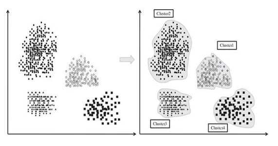
除了对数据进行聚类并从中获取摘要视图之外，无监督学习的另一种变体是关联分析。作为关联分析的一部分，数据元素之间的关联被识别出来。让我们以市场篮子分析为背景来理解关联分析，如下图所示。从一家杂货店过去的交易数据中可以发现，大多数购买了商品 A 的顾客也购买了商品 B 和商品 C 或至少其中之一。这说明，“购买商品 A ”事件与 “购买商品 B ”或 “购买商品 C ”事件之间存在很强的关联。
识别这类关联是关联分析的目标。关联分析的应用包括市场篮子分析和推荐等。
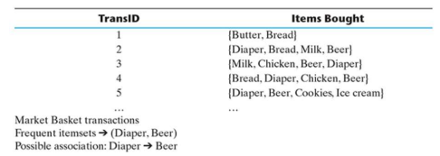
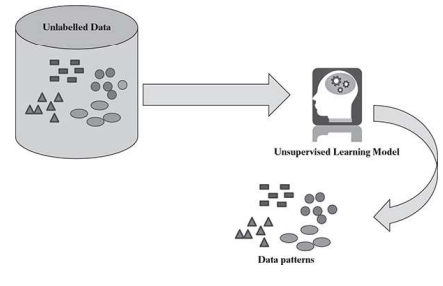
1.4.3 Reinforcement learning
我们看到过婴儿在完全不知道如何走路的情况下学会走路。我们常常怀疑他们到底是怎么做到的。他们的方法相对简单。
首先，他们会注意到别人在走动，比如父母或周围的人。他们明白，要迈开双腿，必须一次迈出一条腿。走路时，他们有时会撞到障碍物而摔倒，有时则能避开颠簸的障碍物顺利行走。当他们能越过障碍行走时，父母会高兴得拍手赞赏，或者给他们巧克力。如果宝宝在绕过障碍物时摔倒了，父母显然不会拍手或给巧克力。慢慢地，婴儿从错误中吸取教训，就能轻松地走路了。
同样，机器也经常学会自主完成任务。让我们结合孩子学走路的例子来理解一下。试图实现的动作是行走，儿童是代理，儿童试图行走的有障碍的地方是环境。它试图提高自己完成任务的能力。当子任务成功完成时，会给予奖励。如果子任务没有正确完成，显然就不会给予奖励。这种情况一直持续到它能够完成整个任务为止。这种学习过程被称为强化学习。下图显示了强化学习的高级过程。
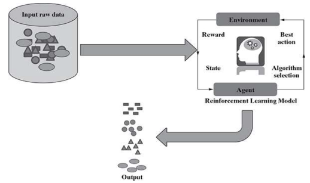
强化学习的一个当代范例是自动驾驶汽车。它需要处理的关键信息包括不同路段的速度和限速、交通状况、路况、天气状况等。需要处理的任务包括启动/停止、加速/减速、向左/向右转弯等。
有关强化学习的更多详情不在本课程范围之内。如果您感兴趣，请在互联网上搜索并阅读相关资料。
1.5 APPLICATIONS OF MACHINE LEARNING
只要有大量的过往数据，就可以利用机器学习从数据中获得洞察力。虽然机器学习在每个业务领域都有多种应用形式，但我们在下文中介绍了三个主要领域，只是为了让大家了解使用机器学习可以完成哪些类型的操作。
1.5.1 Banking and finance 银行和金融
在银行业，欺诈交易，尤其是与信用卡有关的欺诈交易极为普遍。由于交易量和交易速度都非常高，全球几乎所有领先银行都采用了高性能机器学习解决方案。这些模型是实时运行的，即在欺诈交易发生时就能及时发现并阻止。这有助于避免在解决纠纷时产生大量的操作麻烦。
其他竞争银行经常会向某家银行的客户提出有利可图的建议，如提高银行利息、降低贷款手续费、零余额储蓄账户、免收透支罚金等，目的是让客户转向竞争银行。机器学习有助于防止或至少减少客户流失。描述性学习和预测性学习都可用于减少客户流失。
利用描述性学习，可以发现客户流失率最高的特定问题区域，即特定银行、特定区域或特定类型的产品（如汽车贷款）。很明显，这些问题区域需要进一步调查，以找到并解决根本原因。利用预测学习，可以识别出可能很快离开银行的弱势客户群体。可以采取适当的行动，确保客户留在银行。
1.5.2 Insurance 保险业
保险业的数据密集度极高。因此，机器学习被广泛应用于保险行业。机器学习在保险行业的两个主要应用领域是新客户入职期间的风险预测和索赔管理。
在客户入职过程中，需要根据过去的信息预测新客户的风险状况。根据预测的风险量，为潜在客户生成报价。当客户提出理赔要求时，与历史理赔相关的过往信息以及理算师记录都会被考虑在内，以预测该理赔是否存在欺诈的可能性。除了与特定客户相关的过往信息外，还考虑与类似客户相关的信息，即属于同一地理位置、年龄
1.5.3 Healthcare 医疗保健
可穿戴设备数据是应用机器学习和实时预测个人健康状况的丰富来源。一旦出现学习模型预测的健康问题，就会立即提醒人们采取预防措施。如果出现一些极端问题，还可以提醒患者附近的医生或医疗服务提供者。
假设一位老人早上去家附近的公园散步，走着走着突然血压飙升，超过了一定的限度，可穿戴设备就会跟踪血压数据。可穿戴设备的数据会被发送到远程服务器，机器学习算法会不断分析这些流数据。它还掌握了老年人和类似年龄段人群的病史。除非立即采取行动，否则该模型会预测出一些死亡事件。可以向老人发出警报，要求其立即停止行走并休息。此外，还可以提醒医生和医疗服务提供者随时待命。
机器学习和计算机视觉在医学影像的疾病诊断中也发挥着至关重要的作用。
1.6 STATE-OF-THE-ART LANGUAGES/TOOLS IN MACHINE LEARNING 最先进的机器学习语言/工具
与不同机器学习任务相关的算法众所周知，可以使用任何语言/平台实现。它可以使用 Java 平台或 C / C++ 语言实现。不过，有一些语言和工具是专门为实现机器学习而开发的。下面列出了其中使用最广泛的几种语言和工具。
1.6.1 Python
Python 是最流行的开源编程语言之一，被机器学习社区广泛采用。
Python 拥有非常强大的库，可用于高级数学功能、算法和数学工具以及数值绘图。基于这些库，有一个名为 scikit-learn 的机器学习库，其中嵌入了各种分类、回归和聚类算法。
1.6.2 R
R 是一种用于统计计算和数据分析的语言。它是一种开源语言，在学术界和工业界都非常流行，尤其是在统计学家和数据分析人员中。
R 是一种非常简单的编程语言，有大量的库可用于机器学习的不同阶段。
1.6.3 MATLAB
MATLAB（矩阵实验室）是一种获得许可的商业软件，可为各种数值计算提供强大的支持。MATLAB 在工业界和学术界拥有庞大的用户群。MATLAB 由 MathWorks 公司开发。作为专有软件，MATLAB 的开发更专业，测试更严格，文档更全面。
MATLAB 还提供广泛的统计函数支持，并内置了大量机器学习算法。它还能够通过集群和云并行处理来扩展大型数据集。
1.7 ISSUES IN MACHINE LEARNING
机器学习是一个相对较新且仍在不断发展的领域。此外，不同国家对机器学习工具和技术的研究水平和使用方式也大相径庭。不同国家的法律法规、文化背景、人们的情感成熟度也大相径庭。所有这些因素都使得机器学习的使用以及由机器学习的使用所引发的问题大相径庭。
机器学习引发的最大恐惧和问题与隐私和隐私泄露有关。学习的主要重点是分析过去和当前的数据，并从数据中得出见解。这种洞察力可能与人有关，所揭示的事实可能足够隐秘，需要保密。此外，在分享信息方面，不同的人有不同的偏好。有些人可能愿意公开分享某种程度的信息，而另一些人可能甚至不愿意与所有朋友分享，而只与家人分享。有些人在 Facebook 等社交平台上与所有人分享信息，而有些人则不分享，或者即使分享也仅限于朋友。当机器学习算法使用这些信息时，人们可能会在不经意间感到不安。例如，如果有一种学习算法可以进行基于偏好的客户细分，而分析的结果被用于发送有针对性的营销活动，这将伤害人们的情感，实际上弊大于利。
即使不存在侵犯隐私的情况，在某些情况下，基于机器学习所采取的行动也可能造成不良反应。让我们以竞选前的知识发现活动为例。如果某个特定地区显示出种族占多数或某种人口因素的偏斜，而竞选宣传中的信息又考虑到了这一点，那么实际上可能会让选民感到不安，并导致不利的结果。
因此，在应用机器学习之前，一个非常关键的考虑因素是，在使用机器学习的任何结果之前，都应进行适当的人工判断。只有这样，做出的决定才会是有益的，也不会造成任何不利影响。
1.8 SUMMARY
机器学习吸收了人类学习的理念，即从专家指导和经验中学习。
(1) 机器学习的基本过程可分为三个部分。
-
数据输入： 利用过去的数据或信息作为未来决策的基础。
-
抽象化： 对输入数据进行归纳表示
-
概括： 概括：对抽象后的表征进行概括，形成决策框架。
(2) 机器学习可分为三大类：
-
监督学习： 也称为预测学习。这种学习的目的是根据类似对象的先验信息来预测未知对象的类别/价值。例如：预测肿瘤是恶性还是良性，房地产、股票等领域的价格预测。
-
无监督学习： 也称为描述性学习，通过将类似对象分组，帮助在未知对象中找到组或模式。例如：客户细分、推荐系统等。
-
强化学习： 机器学会自己行动，以实现既定目标。例如：自动驾驶汽车、智能机器人等。
(3) 银行和金融服务、保险、医疗保健、生命科学、工程等多个行业领域都已采用机器学习来解决问题。
(4) 一些最常用的机器学习平台包括 Python、R、MATLAB 等。
(5) 为避免道德问题，在应用机器学习和使用机器学习的任何成果之前，都需要进行严格的考量。
2. Data Preparation for Machine Learning 机器学习的数据准备
这部分详细介绍了如何理解输入的数据，以及如何建立对数据性质和质量的基本认识。这些信息反过来又有助于选择和如何应用模型。因此，本部分传授的知识有助于初学者迈出有效建模和解决机器学习问题的第一步。
2.1 INTRODUCTION
我们已经了解了人类学习的类型，以及人类学习在某些方面如何与机器学习的类型--监督学习、无监督学习和强化学习--相关联。监督学习意味着从过去的数据（也称为训练数据）中学习，这些数据具有已知的值或类别。机器可以从过去的数据中 “学习 ”或接受 “训练”，并为未知数据（称为测试数据）分配类别或值。这有助于解决与预测相关的问题。这很像人类通过专家指导进行学习，就像婴儿通过父母或学生通过老师进行学习一样。因此，机器的监督学习可以看作是在人类输入指导下的学习。无监督机器学习没有标签数据可供学习。它试图在无标签数据中找到模式。这很像人类试图将形状相似的物体组合在一起。这种学习不受标记输入的指导。
最后但并非最不重要的是强化学习，在强化学习中，机器尝试通过惩罚/奖励机制进行自我学习--这与人类的自我学习方式基本相同。
我们还看到了机器学习在银行与金融、保险和医疗保健等不同领域的一些应用。欺诈检测是一个重要的业务案例，全球几乎所有银行都在实施，并主要使用机器学习。对新客户的风险预测也是保险业的一个类似关键案例，也是机器学习的应用领域。在医疗保健领域，疾病预测也广泛使用了机器学习。
虽然机器学习技术得到了广泛的发展，其应用也变得十分普遍，但作为一名从业者，我们首先需要对其有一些基本的了解。我们需要了解如何应用机器学习中的一系列工具和技术来解决问题。事实上，这将与我们试图解决的问题类型密切相关。如果是预测问题，那么所涉及的活动类型将与我们试图在没有任何过去数据知识的情况下展开数据模式的问题完全不同。
因此，一个机器学习项目是怎样的，或者构成机器学习项目核心的突出活动是什么，将取决于它是在监督学习领域，还是在非监督学习或强化学习领域。
不过，无论如何变化，在开始学习机器学习的核心概念和关键算法之前，我们都需要掌握一些基础知识。在本节中，我们将快速浏览一些典型的机器学习活动，并重点介绍所有从业人员在开始机器学习之旅之前需要掌握的一些基础概念。
2.2 MACHINE LEARNING ACTIVITIES
机器学习活动的第一步始于数据。The first step in machine learning activity starts with data. 在有监督学习中，先是标注训练数据集，然后是不标注的测试数据。在无监督学习中，不存在标记数据的问题，但任务是在输入数据中找到模式。要了解数据的类型the type 、数据的质量the quality和不同数据元素之间的关系relationship，就需要对数据进行彻底的审查和探索A thorough review and exploration of the data。在此基础上，我们可能需要对输入数据进行多项预处理，然后才能开展核心机器学习活动。以下是输入数据进入机器学习系统后的典型准备活动typical preparation activities：
(1) 了解给定输入数据集中的数据类型。
(2) 探索数据以了解其性质和质量。
(3) 探索数据元素之间的关系，如特征之间的关系。
(4) 找出数据中的潜在问题。
(5) 必要时进行必要的补救，例如对缺失的数据值进行估算等。
(6) 必要时采用预处理步骤。
(7) 一旦为建模准备好数据，学习任务就开始了。其中包括以下活动：
-
首先将输入数据分为训练数据和测试数据（称为保留数据）两部分。这一步只适用于监督学习。
-
考虑选择不同的模型或学习算法。
-
根据有监督学习问题的训练数据训练模型，并应用于未知数据。针对无监督学习问题，在输入数据上直接应用所选的无监督模型。
在选择模型、对模型进行训练（用于监督学习）并将其应用于输入数据后，将对模型的性能进行评估。如有可能，可根据可用选项采取具体措施来提高模型的性能
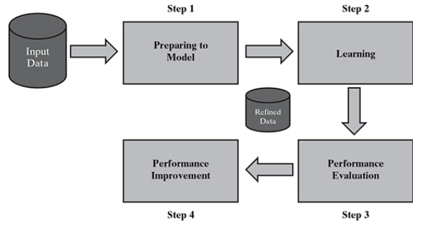
2.3 BASIC TYPES OF DATA IN MACHINE LEARNING
在开始讨论数据类型之前，让我们先了解一下什么是数据集以及数据集的要素。数据集是相关信息或记录的集合。这些信息可能是关于某个实体或某个主题领域的。如下例所示，我们可能有一个关于学生的数据集，其中的每条记录都包含一个特定学生的信息。同样，我们可以有一个关于学生成绩的数据集，其中的记录提供了学生的成绩，即各个科目的分数。
A data set is a collection of related information or records.
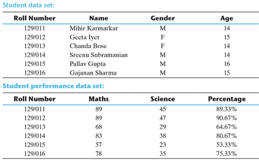
数据集中的每一行称为一个样本sample。每个数据集也有多个属性，每个属性提供一个特定特征的信息。例如，在关于学生的数据集中，有四个属性，分别是学籍号、姓名、性别和年龄。
属性Attributes也可称为特征feature、变量variable、维度dimension或字段field。学生和学生成绩这两个数据集都有 4 个特征或维度，因此它们被称为 4 维数据空间。每一行或样本代表四维数据空间中的一个点，因为每一行都有四个属性或特征的特定值。可以理解的是，不同样本的属性值可能会有所不同。例如，如果我们参考学生数据集中的前两个样本，那么属性 “姓名”、“性别 ”和 “年龄 ”的值都是不同的。
既然已经给出了数据集的背景，那么让我们来了解一下机器学习问题中通常会遇到的不同类型的数据。数据大致可分为以下两种类型：
(1) 定性数据 Qualitative data
(2) 定量数据 Quantitative data
定性数据提供无法测量的对象或信息的质量信息。例如，如果我们将学生的成绩质量分为 “好”、“一般 ”和 “差”，这就属于定性数据的范畴。此外，学生的姓名或学籍号也是无法用某种衡量标准来衡量的信息。因此，它们属于定性数据。定性数据也称为分类数据categorical data。
定性数据可进一步细分为以下两种类型：
(1) 名义数据Nominal data
(2) 排序数据Ordinal data
名义数据是指没有数值，但有命名值的数据。它用于为属性分配命名值。名义值无法量化。名义数据的例子有
(1) 血型： A、B、O、AB
(2) 国籍： 印度、美国、英国等
(3) 性别：男、女
显然，加法、减法、乘法等数学运算无法在名义数据上进行。因此，均值、方差等统计函数也不能应用于名义数据。不过，基本的计数还是可以的。
排序数据除了具有名义数据的特性外，还可以自然排序。这意味着序数数据也为属性分配了命名值，但与名义数据不同的是，它们可以按值的增减顺序排列，这样我们就可以说一个值是否优于或大于另一个值。序数数据的例子有：
(1) 客户满意度：“非常满意”、“满意”、“不满意 ”等：
(2) 成绩： A、B、C 等。
(3) 金属硬度：“非常硬”、“硬”、“软 ”等。
由于序数数据可以排序，因此可以确定中位数和四分位数。平均值仍然无法计算。
定量数据与物体的数量信息有关，因此可以测量。例如，如果我们考虑 “分数 ”这一属性，它就可以用量表来测量。定量数据也称为数值数据。定量数据有两种类型：
(1) 间隔数据 Interval data
(2) 比率数据 Ratio data
区间数据是指不仅顺序已知，而且数值之间的确切差值也已知的数值数据。区间数据的一个理想例子是摄氏温度。在摄氏温度中，每个值之间的差值保持不变。例如，12°C 和 18°C 之间的差值是可以测量的，与 15.5°C 和 21.5°C 之间的差值一样，都是 6°C。其他例子包括日期、时间等。
对于区间数据，可以进行加法和减法等数学运算。因此，对于区间数据，可以用平均值、中位数或模式来衡量中心倾向。也可以计算标准偏差。不过，区间数据没有所谓的 “真正零值”。例如，没有所谓的 “0 温度 ”或 “无温度”。因此，区间数据只适用加法和减法。比值则不适用。也就是说，我们可以说 40°C 的温度等于 20°C 的温度 + 20°C 的温度。但是，我们不能说 40°C 的温度是 20°C 温度的两倍。
比率数据代表可以测量精确值的数字数据。比率数据可以使用绝对零度。此外，这些变量还可以相加、相减、相乘或相除。中心倾向可以通过平均值、中位数或模式以及标准差等分散方法来测量。比率数据的例子包括身高、体重、年龄、工资等。
以下是我们在典型的机器学习问题中可能发现的不同类型数据的汇总视图
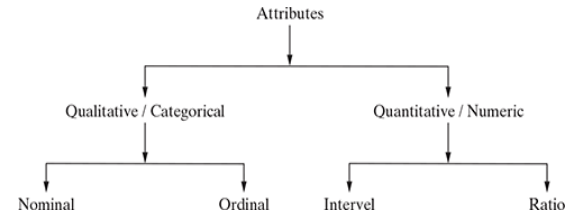
除上述方法外，还可根据可分配值的数量将属性分为不同类型。根据这一因素，属性可以是离散的discrete，也可以是连续的continuous。
离散属性的值可以是有限的，也可以是可数无限的。卷号、街道编号、邮政编码等名义属性的值是有限的，而计数、学生排名等数值属性的值则是可数无限的。只有两种值的离散属性被称为二进制属性。二元属性的例子包括男/女、正/负、是/否等。
连续属性可以取任何可能的实数值。连续属性的例子包括长度、身高、体重、价格等。
一般来说，名义属性和顺序属性是离散的。而区间属性和比率属性则是连续的。
2.4 EXPLORING STRUCTURE OF DATA
现在，我们已经明白，在机器学习中，我们会遇到两种基本数据类型--数值型numeric和分类型categorical。有了这样的背景，我们就可以深入理解数据集了。我们需要了解，在一个数据集中，哪些属性是数值型的，哪些属性是分类型的。这是因为，探索数值数据的方法与探索分类数据的方法不同。
如果是标准数据集，我们可以参考数据字典data dictionary。数据字典是一个元数据存储库，即与数据集中包含的每个数据元素的结构有关的所有信息的存储库。数据字典提供每个属性的详细信息--说明、数据类型和其他相关细节。
如果没有数据字典，我们需要使用机器学习工具的标准库函数来获取详细信息。目前，让我们使用 UCI 机器学习资源库（https://archive.ics.uci.edu/）中的一个标准数据集。该资源库收集了 400 多个数据集，作为机器学习社区研究人员和从业人员的基准。
下图所示的数据集是 UCI 数据库中的汽车 MPG 数据集：
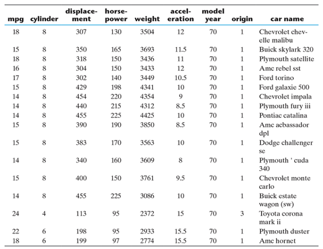
如数据集所示，“mpg”、“气缸数”、“排量”、“马力”、“重量”、“加速度”、“车型年份 ”和 “产地 ”等属性都是数值型的。在这些属性中，“气缸数”、“车型年份 ”和 “产地 ”是离散属性，因为这些属性中的数值数量有限。其余的数值属性，即 “mpg”、“排量”、“马力”、“重量 ”和 “加速度”，可以取任何实际值。
由于 “气缸 ”或 “产地 ”属性的可能值较少，人们可能更愿意将其视为分类或定性属性，并以这种方式进行探索。无论如何，我们将把这些属性视为数值或定量属性，因为我们试图在本节中展示数据探索和相关的细微差别。因此，这些属性在本质上是连续的。剩下的唯一属性 “汽车名称 ”属于分类类型，或者更具体地说是名义类型。该数据集涉及以每加仑英里数为单位的油耗预测，即数字属性 “mpg ”是目标属性。
有了对数据集属性的了解，我们就可以开始分别探索数字和分类属性了
2.4.1 Exploring numerical data
有两种最有效的数学图可以用来探索数值数据--方框图和直方图。我们将从最关键的方框图开始，逐一探讨这两种图。
2.4.1.1 Understanding central tendency 理解中心倾向
要了解数值变量的性质，我们可以应用数据的中心倾向度量，即平均数和中位数。在统计学中，中心倾向度量有助于我们了解一组数据的中心点。根据定义，平均数mean是所有数据值的总和除以数据元素的计数。例如，一组观察值的平均值为 21、89、34、67 和 96 的平均值计算如下。
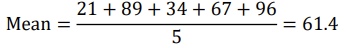
如果上述一组数字代表一个班级中 5 名学生的分数，那么平均分就是 61.4 分。
相反，中位数Median是出现在数据元素有序列表中间的元素的值。如果我们考虑上述 5 个数据元素，则有序列表为 21、34、67、89 和 96。有序列表中的第 3 个元素被视为中位数。因此，这组数据的中值是 67。
为什么要审查两种中心倾向测量方法？原因在于，数据值出现在范围的起点或终点对平均数和中位数的影响不同。平均值是由数据值的累积和计算得出的，如果太多数据元素的值接近范围的最末端，即接近最大值或最小值，平均值就会受到影响。它对异常值尤其敏感，即与其他值相比异常高或异常低的值。即使存在少量异常值，平均值也有可能发生大幅偏移。如果我们发现某些属性的平均值和中值之间的偏差很大，我们就应该进一步调查这些属性，并尝试找出根本原因和补救措施。
因此，在汽车 MPG 数据集的背景下，让我们尝试找出每个数字属性的平均值和中位数。我们还可以找出这些值之间的偏差是否很大。所有属性的平均值和中位数比较如下：
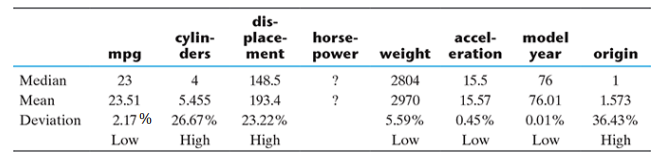
我们可以看到，对于 “mpg”、“重量”、“加速度 ”和 “model.year ”等属性，平均值与中位数之间的偏差并不显著，这意味着这些属性出现过多异常值outlier的几率较小。但是，“气缸数”、“排量 ”和 “原点 ”属性的偏差很大。因此，我们需要进一步深入，查看这些属性的更多统计数据。此外，“马力 ”属性的值也存在一些问题，因此无法计算平均值和中位数。
经过调查，我们可以发现，出现问题的原因是如下所示的 6 个数据元素中没有 “马力 ”属性的值。
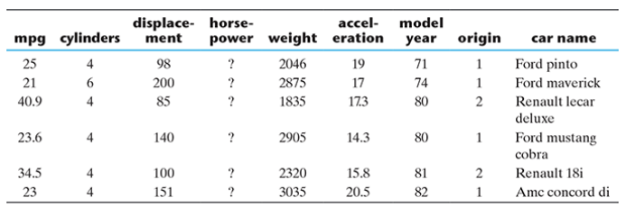
众数Mode是出现频率最高的数字。例如，我们有 9 个值
13, 13, 13, 13, 14, 14, 16, 18, 21
13 出现的频率最高，因此众数为 13。
2.4.1.2 Understanding data spread 了解数据传播
我们已经探究了不同数字属性的中心倾向，并清楚地知道哪些属性的平均值和中位数之间存在较大偏差。让我们仔细研究一下这些属性。要进一步深入研究，我们需要查看属性的整个取值范围，但不能查看数据元素的取值范围，因为这可能太大，无法手动查看。因此，我们将以以下形式对数据分布进行细化：
(1) 数据的分散
(2) 不同数据值的位置
2.4.1.2.1 Measuring data dispersion 测量数据离散度
考虑两个属性的数据值
(1) 属性 1 的值：44、46、48、45 和 47
(2) 属性 2 的值：34、46、59、39 和 52
这两组值的平均值和中位数都是 46。然而，属性 1 的第一组数值更集中在平均值/中位值附近，而属性 2 的第二组数值则相当分散。
要测量数据的离散程度，或找出数据不同值的离散程度，就要测量数据的方差variance。数据方差的测量公式如下：
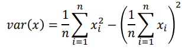
其中，𝑥 是要测量其方差的变量或属性，𝑛 是变量 𝑥 的观测值或数值的数量。
数据标准差的测量方法如下：
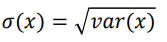
因此，从测量结果中可以很清楚地看出，属性 1 的值非常集中在平均值附近，而属性 2 的值则非常分散。
2.4.1.2.2 Measuring data value position 测量数据值位置
当属性的数据值按递增顺序排列时，我们在前面已经看到，中位数给出了数据的中心值，它将整个数据集分为两半。同样，如果将数据的前半部分为两半，每半占数据集的四分之一，那么前半部分的中位数就称为第一四分位数或 Q1。同样，如果数据的后半部分为两半，那么后半部的中位数称为第三四分位数或 Q3。整体中位数也称为第二四分位数或 Q2。因此，任何数据集都有五个值--最小值、第一四分位数（Q1）、中位数（Q2）、第三四分位数（Q3）和最大值。
any data set has five values - minimum, first quartile (Q1), median (Q2), third quartile (Q3), and maximum.
让我们回顾一下 “cylinders”、“displacement ”和 “origin ”属性的这些值。下表概括了属性的统计范围。
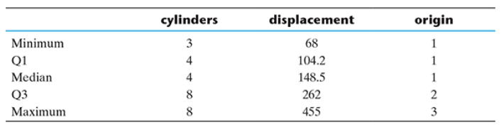
以属性 “displacement”为例，我们可以看到最小值与 Q1 的差值为 36.2，Q1 与中位数的差值为 44.3。相反，中位数与 Q3 的差值为 113.5，Q3 与最大值的差值为 193。换句话说，大值比小值更分散。这有助于理解为什么 “displacement”属性的平均值远高于中位值。同样，在属性 “cylinders”中，我们可以观察到最小值与中位数的差值为 1，而中位数与最大值的差值为 4。 对于属性 “origin”，最小值与中位数的差值为 0，而中位数与最大值的差值为 2。
2.4.2 Plotting and exploring numerical data 绘制和探索数字数据
2.4.2.1 Box plots
既然我们已经相当清楚地了解了数据集在分布和中心倾向方面的属性，那么让我们尝试将整个数据集形象化为方框图。方框图是一种非常有效的机制，可以让我们一目了然地了解数据的性质。不过，在查看汽车 MPG 数据集不同属性的盒状图之前，我们先来了解一下盒状图的一般含义和不同方面的解释。盒状图（也称盒须图）是数据的五个数字汇总统计的标准可视化，即最小值、第一四分位数（Q1）、中位数（Q2）、第三四分位数（Q3）和最大值。下图为盒状图。
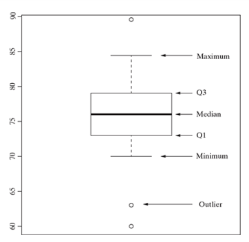
(1) 中央矩形或方框从第一四分位数到第三四分位数（即 Q1 到 Q3），从而得出四分位数间距 (IQR)。
(2) 中位数由方框内的线或带得出。
(3) 下辐线lower whisker从方框底部（即第一四分位数或 Q1）开始延伸至四分位数间距（或 IQR）的 1.5 倍。让我们通过一个例子来理解这一点。假设一组特定的数据，Q1 = 73，中位数 = 76，Q3 = 79。因此，下辐线的最大范围为 (Q1 - 1.5 × IQR) = 73 - 1.5 × 6 = 64。但是，如果存在较低范围的数据值，如 70、63 和 60。因此，下辐线将出现在 70 处，因为这是大于 64 的最低数据值。
(4) 上辐线upper whisker从方框顶部延伸至 1.5 倍的四分位数间范围（或 IQR），即第三四分位数或 Q3。与下辐线类似，上辐线的实际长度也取决于（Q3 + 1.5 倍 IQR）范围内的最高数据值。让我们通过一个例子来理解这一点。对于上面提到的同一组数据，上胡须的最大长度为（Q3 + 1.5 × IQR）= 79 + 1.5 × 6 = 88。如果有更高范围的数据值，如 82、84 和 89。
(5) 超出下辐线或上辐线的数据值分别是异常低值或异常高值。这些是异常值outliers，值得特别考虑。
让我们来看看 “cylinders”、“displacement ”和 “origin ”这三个属性的盒状图。我们还将查看平均值和中位数之间偏差很小的另一个属性的箱形图，看看各自箱形图的基本差异是什么。
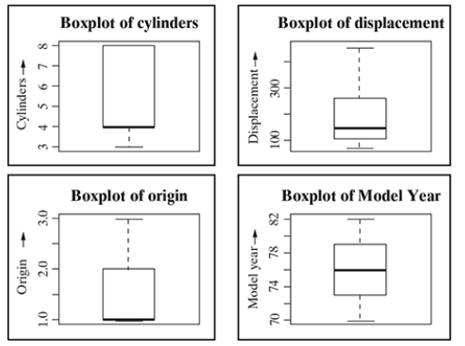
2.4.2.2 Histogram 直方图
直方图是另一种有助于有效可视化数值属性的图表。它有助于了解数值数据在一系列区间intervals（也称为 “箱bins”）中的分布情况。如下图所示，直方图可以根据数据的性质呈现不同的形状
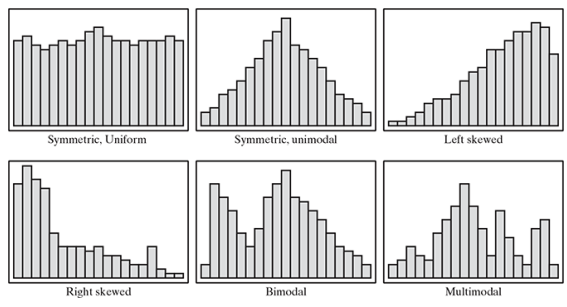
直方图和盒状图的重要区别在于：
(1) 直方图的重点是绘制数据值的范围（充当 “箱”），每个范围中的数据元素数量取决于数据分布。在此基础上，不同范围对应的每个条形图的大小也会不同。
(2) 箱形图的重点是将数据集中的数据元素分成四个相等的部分，使每个部分包含的数据元素数量相等。
直方图可能会根据数据的性质呈现不同的形状，如上图所示的偏斜图。这些模式可以让我们快速了解数据，因此是一种很好的数据探索工具。
下面我们来看看汽车 MPG 数据集不同属性的直方图。mpg “和 ”重量 "的直方图是右偏的。加速度 “的直方图是对称和单峰的，而 ”model.year "的直方图是对称和均匀的。其余属性的直方图具有多模态性质。
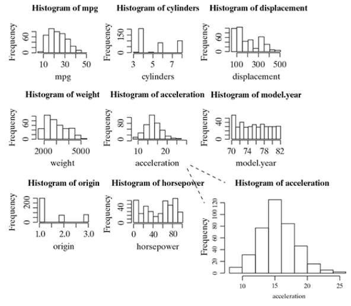
现在，让我们深入研究其中一个直方图，比如 “加速度 ”属性的直方图。
直方图由多个条形图组成，每个 “仓bins”有一个条形图。条形图的高度反映了数据元素的总计数，这些数据元素的值落在特定的二进制数值内，也就是频率。以加速度直方图为例，每个 “仓 ”代表 2 个单位的加速度值间隔。因此，例如第二个分段代表 10 到 12 个单位的加速度值。相应的柱状图高度反映了数值在 10 至 12 个单位之间的所有数据元素的计数。
此外，从柱状图中可以明显看出，它跨越了 8 至 26 个单位的加速度值。首先，对应于分段的数据元素的频率不断增加，直到到达范围为 14 至 16 个单位的分段。在这个范围内，条形图的尺寸最大。因此我们可以得出结论，在这个范围内的数据元素数量最多。在此范围之后，条形图的大小开始减小，直到整个范围的末端，加速度值为 26 个单位。
请注意，如果直方图是均匀的，就像属性 “型号。年份 ”的情况一样，它会提示我们所有值出现的可能性都是一样的。
2.4.3 Exploring categorical data 探索分类数据
我们已经看到有多种探索数值数据的方法。但是，探索分类数据的方法并不多。在汽车 MPG 数据集中，属性 “car.name ”具有分类性质。此外，正如我们之前讨论过的，我们可以将 “气缸数 ”视为分类变量，而不是数值变量。
首先要总结的是 “car name ”属性有多少个唯一的名称，或者 “气缸 ”属性有多少个唯一的值。我们可以通过以下方式获得这些信息：
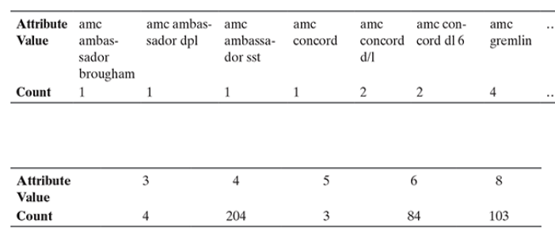
2.4.4 Exploring relationship between variables探讨变量之间的关系
到目前为止，我们一直在孤立地探索单一属性。数据探索的另一个重要角度是探索属性之间的关系。有多种图可以让我们探索变量之间的关系。最基本、最常用的图是散点图。
2.4.4.1 Scatter plot 散点图
散点图有助于直观显示二元关系，即两个变量之间的关系。散点图是一种二维图形，其中的点或圆点绘制在由属性值提供的坐标上。例如，在一个数据集中有两个属性--attr_1 和 attr_2。我们想了解两个属性之间的关系，即一个属性（如 attr_1）的值发生变化时，另一个属性（如 attr_2）的值会如何变化。我们可以绘制一个散点图，attr_1 映射在 x 轴上，attr_2 映射在 y 轴上。因此，图中每个点的 x 坐标都是 attr_1 的值，y 坐标都是 attr_2 的值。在二维图形中，attr_1 是自变量，attr_2 是因变量。
在数据集 “汽车 MPG ”中，属性 “排量 ”和 “mpg ”之间应该存在某种关系。让我们将 “位移 ”映射为 x 坐标，将 “mpg ”映射为 y 坐标。散点图如下
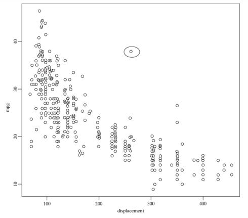
2.4.4.2 Two-way cross-tabulations 双向交叉分析
双向交叉表（也称交叉表cross-tab 或然率表contingency）用于以简洁的方式了解两个分类属性之间的关系。它采用矩阵格式，显示二元频率分布的汇总视图。
交叉表与散点图非常相似，有助于了解一个属性的数据值随另一个属性的数据值变化而变化的程度。让我们结合汽车 MPG 数据集，举例说明。
我们假设 “气缸”、“车型年份 ”和 “产地 ”属性为分类属性，并尝试研究其中一个属性相对于另一个属性的变化情况。我们知道，属性 “气缸数 ”反映了汽车的气缸数，其值为 3、4、5、6 和 8。属性 “model.year ”表示每辆汽车的车型年份，“origin ”表示汽车的地区，origin 1、2 和 3 的值分别对应北美、欧洲和亚洲。下面是交叉表。让我们来了解一下它们究竟提供了哪些信息。
下一个交叉表显示了属性 “车型、年份 ”和 “产地 ”之间的关系，这有助于我们了解北美、欧洲和亚洲地区每年的汽车数量。从另一个角度看，我们可以得到每个地区不同年份的车辆数。所有这些都是在汽车 MPG 数据集所提供的样本数据背景下得出的。
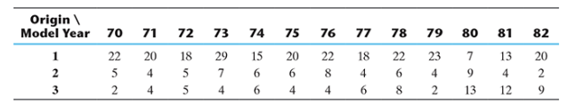
下面的交叉表给出了样本数据集中每个地区的 3、4、5、6 或 8 缸汽车数量。
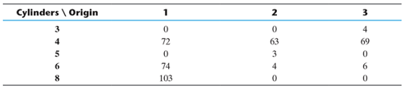
我们可以为不同的属性组合创建交叉表，以便更全面地了解属性之间的关系。
2.5 DATA QUALITY AND REMEDIATION 数据质量和补救
2.5.1 Data quality
机器学习的成功在很大程度上取决于数据的质量。在监督学习的情况下，具有正确质量的数据有助于实现更高的预测准确性。然而，期望数据完美无瑕是不现实的。我们已经遇到过至少两类问题：
(1) missing value 某些数据元素没有值或数据值缺失。
(2) outliers 数据元素的值与其他元素有惊人的差异，我们称之为异常值。
导致这些数据质量问题的因素有很多。以下是其中一些：
(a) Incorrect sample set selection 样本集选择不正确： 由于样本集选择不正确，数据可能无法反映正常或常规质量。例如，如果我们从节日期间的销售交易中选择一个样本集，并试图使用该数据预测未来的销售情况。在这种情况下，预测结果将与实际情况大相径庭，原因就在于样本集选择的时间不对。同样，如果我们试图使用训练数据预测民意调查结果，而训练数据中没有包括来自不同群体（如年龄、性别、种族等）的选民的正确组合，那么预测必然会失败。这也可能是由于样本大小不正确造成的。例如，小规模的样本可能无法捕捉到正确学习模型所需的所有方面或信息。
(b) Errors in data collection 数据收集中的错误：导致异常值和缺失值
-
在许多情况下，一个人或一群人负责收集用于学习活动的数据。在这种手工操作的过程中，可能会出现错误的数据记录，无论是数值记录（如将 20.67 错误地记录为 206.7 或 2.067），还是测量单位记录（如将 cm 错误地记录为 m 或 mm）。这可能导致数据元素的值与其他元素异常不同。此类记录被称为异常值。
-
也可能出现根本没有记录数据的情况。在收集数据的调查中，调查对象可能选择不回答某个问题。因此，该应答者记录中该数据元素的数据值就会丢失。
2.5.2 Data remediation
上文提到的数据质量问题需要加以解决。在上述两个主要错误中，第一个错误可以通过适当的抽样技术来弥补。这是一个完全不同的领域，在统计学中属于专门的学科领域。
然而，无论我们采取何种制衡措施，人为错误都会发生。因此，需要针对上述第二个领域采取适当的补救措施。我们将讨论如何处理异常值和缺失值。
2.5.2.1 Handling outliers
异常值是指值异常高的数据元素，可能会影响预测的准确性，尤其是在回归模型中。一旦识别出异常值并决定修改这些值，您可以考虑以下方法之一。
(1) Remove outliers删除异常值： 如果异常值记录的数量不多，可以采用简单的方法将其删除。
(2) Imputation估算： 另一种方法是用平均值、中位数或模式来估算值。最相似数据元素的值也可用于估算。
(3) Capping封顶： 对于超出 1.5 倍 IQR 限值的值，我们可以用第 5 百分位数替代低于下限的观测值，用第 95 百分位数替代高于上限的观测值。
如果存在大量离群值，则应在统计模型中单独处理。在这种情况下，应将数据视为两个不同的数据集，为两个数据集建立模型，然后合并输出结果。
但是，如果异常值是自然出现的，即数据元素的值因合理原因而出奇地高或低，那么我们就不应该对其进行修正。
2.5.2.2 Handling missing values
在数据集中，一个或多个数据元素可能在多个记录中出现缺失值。如上文所述，这可能是由于收集样本数据的人员遗漏，也可能是由于应答者遗漏，主要原因是他/她不愿意应答或缺乏应答所需的理解。
处理数据元素缺失值有多种策略。下文将讨论其中一些策略。
2.5.2.2.1 Eliminate records having a missing value of data elements 消除数据元素值缺失的记录
如果有缺失值的数据元素比例在可容忍的范围内within a tolerable limit，一个简单而有效的方法就是删除有这些数据元素的记录。如果删除有缺失值的数据元素后剩下的数据量很大，就可以这样做。
在汽车 MPG 数据集中，398 条记录中只有 6 条记录缺少 “马力 ”属性值。如果剔除这 6 条记录，我们仍有 392 条记录，这绝对是一个可观的数字。因此，我们完全可以删除这些记录，继续处理剩余的数据集。
但是，如果有数据元素缺失值的记录比例非常高，就不可能这样做了，因为这会降低模型的能力，因为训练数据量会减少。
2.5.2.2.2 Imputing missing values 计算缺失值
估算是一种为有缺失值的数据元素赋值的方法。平均值/模式/中值是最常用的赋值方法。
对于定量属性quantitative attributes，所有缺失值都用同一属性下剩余值的平均值、中位数或模式来估算。对于定性属性qualitative attributes，所有缺失值都用同一属性下所有剩余值的模式来估算。然而，另一种策略是找出已知值的类似观察值类型，并使用这些已知值的均值/中值/模式。
例如，就汽车 MPG 数据集的 “马力 ”属性而言，由于该属性是定量的，我们取其余数据元素值的平均值或中位数，并将其分配给有缺失值的所有数据元素。因此，我们可以将平均值 104.47 分配给所有六个数据元素。另一种方法是，我们可以采用基于相似性的平均值或中值。如果我们参考属性 “马力 ”缺失值的六个观测值，而 “气缸 ”是与 “马力 ”逻辑关联度最高的属性，因为随着汽车气缸数的增加，汽车的马力也会增加。
如下表所示，对于五个观测值，我们可以使用气缸数 = 4 的 “马力 ”属性数据元素的平均值，即 78.28，而对于一个气缸数 = 6 的观测值，我们可以使用类似的气缸数 = 6 的数据元素的平均值，即 101.5，来估算缺失数据元素的值。
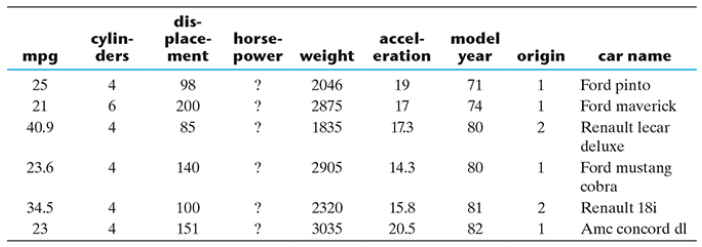
2.5.2.2.3 Estimate missing values 估算缺失值
如果存在与属性值缺失的数据点相似的数据点，那么就可以用这些相似数据点的属性值来替代缺失的值。要找到相似的数据点或观测值，可以使用距离函数。
例如，假设一个 12 岁、身高 5 英尺的俄罗斯学生的体重缺失。那么可以指定年龄接近 12 岁、身高接近 5 英尺的其他俄罗斯学生的体重。
2.6 DATA PRE-PROCESSING
2.6.1 Scaling, normalization, and standardization
属性或特征缩放、归一化和标准化涉及对数据进行转换，使其更适合机器学习。这些技术有助于提高模型性能，减少异常值的影响，并确保数据具有相同的规模。接下来，我们将探讨缩放、归一化和标准化的概念，包括它们为何重要以及如何将它们应用于不同类型的数据。
2.6.1.1 What is Feature Scaling?
特征缩放是一种数据预处理技术，用于将数据集中的特征值或属性值转换为相似的比例。其目的是确保所有特征对模型的贡献相同，避免数值较大的特征占据主导地位。
. The purpose is to ensure that all features contribute equally to the model and to avoid the domination of features with larger values.
在处理包含不同范围、测量单位或数量级的特征的数据集时，特征缩放就变得非常必要。在这种情况下，特征值的变化会导致模型性能的偏差或学习过程中的困难。
有几种常见的特征缩放技术，包括标准化、归一化和最小-最大缩放。这些方法在保留特征值的相对关系和分布的同时对其进行调整。
通过应用特征缩放，可以将数据集的特征转换为更一致的尺度，从而更容易建立准确有效的机器学习模型。缩放便于在特征之间进行有意义的比较，提高模型的收敛性，并防止某些特征仅凭其大小就掩盖了其他特征的光芒
2.6.1.2 Why Should We Use Feature Scaling?
有些机器学习算法对特征缩放很敏感，而有些则几乎不变。让我们深入探讨一下这些算法。
(1) 基于距离的算法 Distance-based algorithms
基于距离的算法，如 K-近邻（KNN）、K-均值聚类和支持向量机（SVM），受特征范围的影响最大。这是因为，在幕后，它们使用数据点之间的距离来确定它们的相似性。
例如，假设我们有包含学生高中 CGPA 分数（从 0 到 5 不等）和他们未来收入（以千为单位）的数据：
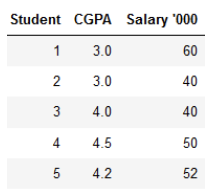
由于这两个特征具有不同的量级，因此量级较高的特征可能会获得较高的权重。这将影响机器学习算法的性能；显然，我们不希望我们的算法偏向于某一特征。缩放后的数据如下
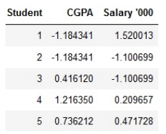
如下图所示，当我们比较缩放前后学生 1 和学生 2，以及学生 2 和学生 3 的数据点之间的欧氏距离时，缩放的效果非常明显：
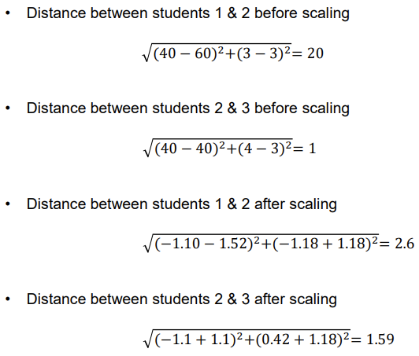
(2) 基于梯度下降的算法 Gradient descent-based algorithms
许多机器学习算法使用梯度下降作为优化技术，需要对数据进行缩放。请看下面的梯度下降公式：
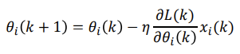
公式中特征值 𝑥 的存在会影响参数的更新。特征范围的巨大差异会导致参数的更新大相径庭。如果特征的范围相似，则可以帮助梯度下降算法更快地收敛到最小值。
2.6.1.3 Normalization
归一化是一种数据预处理技术，用于将数据集中的特征值调整为通用比例。这样做是为了方便数据分析和建模，并减少不同尺度对机器学习模型准确性的影响。
归一化是一种缩放技术，通过对数值进行移动和重新缩放，使其最终介于 0 和 1 之间：
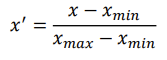
2.6.1.4 Standardization
标准化是另一种以平均值为中心、标准差为单位的缩放方法。这意味着属性的平均值变为零，由此得到的分布具有单位标准差。下面是标准化的公式：
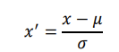
其中 𝜇 和 𝜎 表示𝑥 的平均值和标准偏差。请注意，在这种情况下，数值并不局限于特定的范围。
2.6.1.5 Normalization or Standardization?
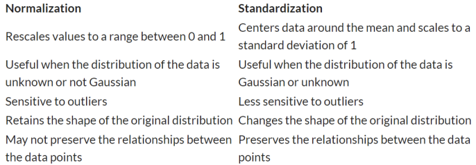
不过，归根结底，选择使用规范化还是标准化取决于您的问题和您正在使用的机器学习算法。没有硬性规定告诉你何时对数据进行归一化或标准化。您可以先将模型分别拟合到原始数据、归一化数据和标准化数据中，然后比较性能，以获得最佳结果。
2.6.2 Dimensionality reduction降维
直到 20 世纪 90 年代末，很少有数据集拥有大量的属性或特征。一般来说，机器学习中使用的数据集通常只有几十个。然而，近二十年来，高维数据频繁出现。
高维数据集需要大量的计算空间和时间。同时，并非所有特征都有用。如果降低数据集的维度（即数据集中的特征数量），大多数机器学习算法都会有更好的表现。降维有助于减少特征的无关性和冗余性reducing irrelevance and redundancy。此外，如果学习活动中涉及的特征数量较少，就更容易理解模型。
降维是指通过组合原始属性来创建新属性，从而降低数据集维度的技术。最常见的降维方法是主成分分析法（PCA）。PCA 是一种统计技术，用于将一组相关变量转换成一组转换后的不相关变量，称为主成分。主成分是原始变量的线性组合。它们彼此正交。由于主成分是不相关的，因此它们能最大限度地捕捉数据中的变异性。另一种常用的降维技术是奇异值分解（SVD）。
2.6.3 Feature subset selection
无论是有监督学习还是无监督学习，特征子集选择或简单地称为特征选择，都是为了找出整个特征集的最佳子集，从而在不对学习准确性产生重大影响的情况下显著降低计算成本。
看起来，特征子集可能会导致有用信息的丢失，因为某些特征将被排除在用于学习的最终特征集之外。但是，在剔除时，只选择不相关或多余的特征。
如果一个特征在对一组数据实例进行分类或分组时作用微乎其微（或几乎不提供任何信息），则该特征被视为无关特征。在选择最终特征子集时，所有不相关的特征都会被剔除。
当一个特征所贡献的信息与一个或多个其他特征大致相同时，该特征就有可能是冗余的。在一组潜在冗余特征中，可以选择少量特征作为最终特征子集的一部分，而不会对模型的准确性造成任何负面影响。
选择特征子集有不同的方法。稍后我们将详细讨论特征选择。
2.7 SUMMARY
(1) 数据集是样本/记录的相关信息的集合。
(2) 数据可大致分为以下两类
-
定性数据 Qualitative data
-
定量数据 Quantitative data
(3) 定性数据提供了无法测量的对象或信息的质量信息。定性数据又可细分为以下两类：
-
名义数据Nominal data：具有指定值
-
序数数据Ordinal data：具有可自然排序的命名值。
(4) 定量数据与物体的数量信息有关，因此可以测量。定量数据有两种类型：
-
区间数据Interval data：已知数值之间确切差值的数值数据。但是，这类数据没有所谓的 “真正零值”。
-
比率数据Ratio data：可以测量精确值且有绝对零度的数值数据。
(5) 中心倾向度量有助于了解一组数据的中心点。衡量数据中心倾向的标准是平均值、中位数和模式。
(6) 数据离散度的详细视图有以下几种形式
-
数据的离散性 数据的离散程度用方差来衡量
-
与不同数据值的位置有关，有五个值，包括最小值、第一四分位数（Q1）、中位数（Q2）、第三四分位数（Q3）和最大值。
(7) 探索数值数据最好使用箱形图和直方图。
(8) 探索分类数据的选项非常有限。
(9) 要探索变量之间的关系，可以有效地使用散点图和双向交叉表。
(10) 机器学习的成功在很大程度上取决于数据的质量。常见的两类数据问题是
-
缺失值数据
-
数据值差异惊人，称为离群值
(11) 需要通过规范化或标准化对数据进行缩放
(12) 高维数据集需要大量的计算空间和时间。如果降低数据集的维度，大多数机器学习算法都能更好地运行。
(13) 一些常用的降维技术包括 PCA、SVD 和特征选择。
3. Bayesian Decision Theory 贝叶斯决策理论
3.1 Bayes Theorem
贝叶斯决策理论是解决模式分类问题的基本统计方法。我们从鱼类分类的例子开始
让 𝜔 表示类别，其中 𝜔 = 𝜔1 表示鲈鱼， 𝜔 = 𝜔2 表示鲑鱼。如果海鲈鱼和鲑鱼一样多，我们就可以说这条鱼是海鲈鱼还是鲑鱼的可能性相同。更一般地说，我们假定鱼是海鲈的先验概率𝑝(𝜔1)和鱼是鲑鱼的先验概率𝑝(𝜔2)。
如果没有其他种类的鱼，那么：
𝑝(𝜔1) + 𝑝(𝜔2) = 1
假设你没有看到鱼，但不得不使用先验概率做出决策，那么使用以下决策规则似乎是合乎逻辑的：
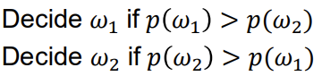
在大多数情况下，我们会得到光度测量值 𝑥等信息来确定鱼的类型。不同的鱼会产生不同的亮度测量值，这种可变性可以用概率来表示： 𝑥被视为连续随机变量，其分布表示为𝑝(𝑥|𝜔)
𝑝(𝑥|𝜔)是类条件概率密度函数，即在类为𝑥的情况下，𝑥的概率密度函数。如下图所示，𝑝(𝑥|𝜔1)和𝑝(𝑥|𝜔2)之间的差异描述了鲈鱼和鲑鱼种群在轻度上的差异：
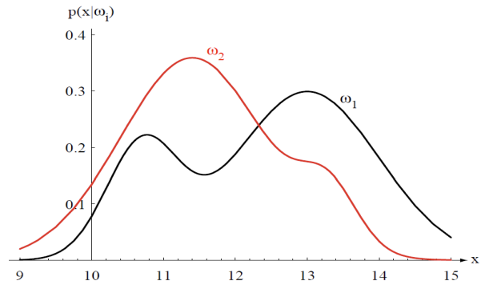
假设我们知道先验概率和条件概率密度。此外，我们还知道鱼的亮度测量值 𝑥。如何利用这个测量值来确定鱼的类别？
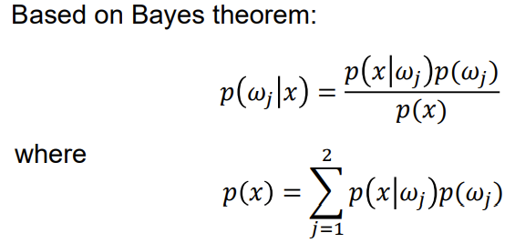
𝑝(𝜔𝑗|𝑥)称为后验概率，𝑝(𝑥)称为证据。
假设我们有以下先验概率：
𝑝(𝜔1) = 2/3 𝑝(𝜔2) = 1/3
那么后验概率如下所示：
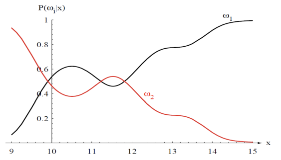
3.2 Bayes decision rule
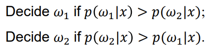
注意，𝑝(𝑥)只是一个比例系数，对决策而言并不重要。去掉这个比例因子，我们就得到了完全等价的决策规则：
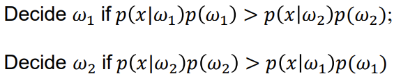
接下来，我们从两个方面对上文进行概括：
1) 一个以上特征，即多个特征
2) 两个以上类别，即多个类别
让𝐱表示特征向量，而 {𝜔1, 𝜔2, ⋯ , 𝜔𝑐} 表示𝑐类。那么后验概率的计算方法如下：
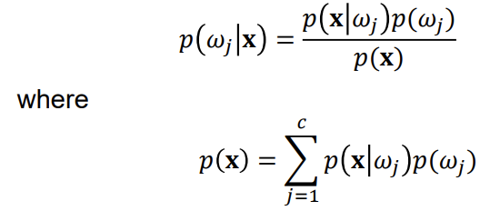
接下来，我们将介绍模式分类中判别函数的概念。假设判别函数用 𝑔𝑖 (𝐱) 表示，𝑖 = 1,2, ... , 𝑐。如果出现以下情况，分类器会将𝐱 划归为类𝜔𝑖
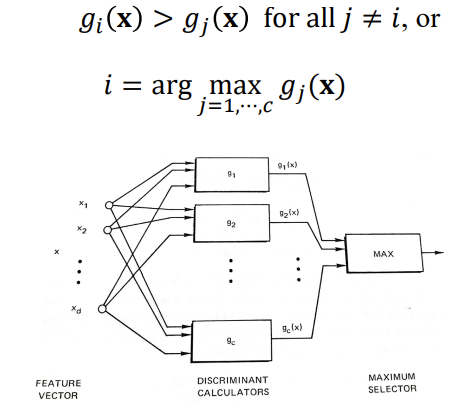
在贝叶斯决策规则中，后验概率被用作判别函数：
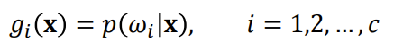
此外，还可以使用以下变体：
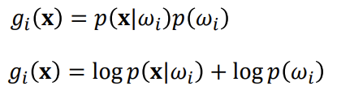
贝叶斯分类器由条件概率密度函数和先验概率决定。在各种概率密度函数中，多元正态或高斯密度函数最受关注。
3.3 Normal (Gaussian) density function 正态（高斯）密度函数
3.3.1 Univariate normal density function 单变量正态密度函数
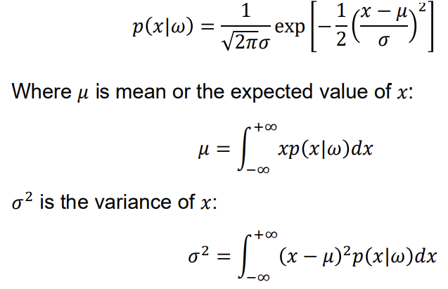
正态密度函数完全由均值和方差确定，通常表示为
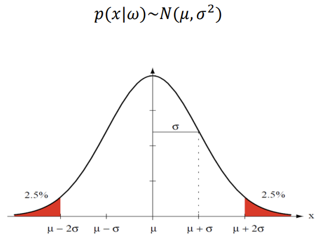
3.3.2 Multivariate normal density function 多元正态密度函数
一般的多元正态密度函数在 𝑑 维度上的计算公式如下：
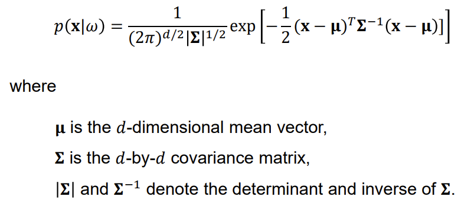
从以 𝛍 为中心的二维高斯中提取的样本：
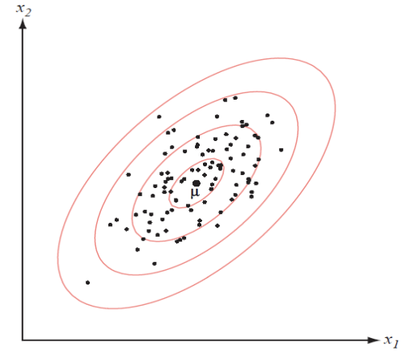
3.3.2.1 Parameter estimation 参数估计
以上说明了如果我们知道先验概率𝑝(𝑖) 和类别条件密度𝑝(𝑥|𝜔𝑖)，如何设计出最佳分类器。但实际上，我们很少有这种关于概率的完整知识。在典型情况下，我们只有一些关于问题的常识，以及一些设计样本或训练数据。
解决这个问题的一种方法是利用样本来估计未知概率和概率密度函数，然后将得到的估计值当作真实值来使用。
其中，𝛍 和 𝚺 分别表示均值向量𝛍 和协方差矩阵𝚺 的估计值。
3.3.2.2 Maximum-likelihood parameter estimation 最大似然参数估计
假设我们有 𝑐数据集 𝐷1, 𝐷2, ..., 𝐷𝑐，其中𝐷𝑗中的样本是根据概率密度函数𝑝(𝐱|𝜔𝑗)独立抽取的。假设 𝑝(𝐱|𝜔𝑗)~𝑁(𝛍𝑗, 𝚺𝑗)，如果 𝑖≠ 𝑗，𝐷𝑖中的样本不会提供关于 𝛍𝑗 和 𝚺𝑗 的信息。这样，我们就可以分别处理每一类信息。
有了这个假设，我们就有了以下形式的 𝑐 独立问题：
使用从概率密度 p (𝐱|θ) 中独立抽取的一组训练样本 𝐷 来估计未知参数向量 θ，其中 θ 由 𝛍 和 𝚺 组成。假设𝐷 包含 𝑛 样本： 𝐱1 , 𝐱2 ,..., 𝐱𝑛 。因为样本是独立抽取的，所以我们有
𝑝(𝐷|𝛉)称为𝛉相对于样本集𝐷的可能性。根据定义，𝛉的最大似然估计值就是使𝑝(𝐷|𝛉)最大化的𝛉值。
处理可能性的对数通常比处理可能性本身更容易。我们将对数似然函数定义为
那么解法可以写成
由于对数是单调递增的，因此能使对数可能性𝑙 (𝛉)达到最大的𝛉也能使可能性𝑝(𝐷|𝛉)达到最大。
𝛉的最大似然估计的一系列必要条件如下：
情况 1：未知 𝛍 的高斯函数
因此，我们有
根据最大似然估计的一系列必要条件，我们可以得出
将 𝚺 相乘并重新排列，我们就得到了 𝛍 的最大似然估计值：
情况 2：具有未知𝛍和𝚺 的高斯函数
通过类似的偏差过程，可以得到𝛍 和𝚺 的最大似然估计值如下：
例子:
如下图所示，有来自两个类别的 200 个训练样本。假设数据呈正态分布，请利用训练数据设计一个贝叶斯决策规则。
我们首先估算多元正态概率密度函数的参数：
类条件概率密度的计算公式为
判别函数为
对于任何给定的样本 x、
1) 在下列情况下，它被归入第 1 类
𝑔1 (𝐱) > 𝑔2(𝐱)
2) 在以下情况下，它被归入第 2 类
𝑔2 (𝐱) > 𝑔1(𝐱)
3) 在以下情况下，它位于决策边界上
𝑔2 (𝐱) = 𝑔1(𝐱)
决定边界
3.4 Gaussian Mixture Models (GMM) 高斯混杂模型
正态分布被广泛应用于密度估计，因为正态分布在很多情况下都能很好地解释数据。然而，在某些应用中，数据分布可能是多模态的，如下图所示的第 2 类数据：
利用正态分布的良好特性处理此类多模态数据的一种方法是使用高斯混合模型 (GMM)。
GMM 模型结合了多个具有不同参数的正态分布：
其中，𝑚 是高斯成分的个数，𝛼𝑖 是第𝑖 个成分的权重，以及
3.4.1 Parameter estimation for GMM
现在假设我们知道（或至少假设）数据是由高斯混合模型生成的。但是，分布的参数仍然未知。我们如何学习参数呢？就像多元正态分布一样，我们可以使用最大似然法（或等价的对数似然法）：
首先，我们定义一个随机变量𝛾𝑖 = 𝑝(𝑜𝑖|𝐱𝑘)，即𝐱𝑘属于高斯成分的概率。
根据贝叶斯定理，我们可以得出
要使对数似然函数𝑙(𝛉)达到最大值，其相对于 𝛼𝑖, 𝛍𝑖, 𝚺𝑖 的导数必须为零
设𝑙 (𝛉) 相对于𝛍𝑖 的导数为零，得
同样，设𝑙 (𝛉) 相对于𝚺𝑖和𝛼𝑖的导数为零，得到
显然，𝛼𝑖 是𝛾𝑖𝑘 的函数，而𝛾𝑖𝑘 是𝛼𝑖𝑘 的函数。因此，参数无法以封闭形式估算。可以使用期望最大化（EM）算法来解决 GMM 参数估计问题。
期望-最大化（EM）算法是一种为模型参数寻找最大似然估计值的迭代方法。EM 算法有两个基本步骤，即 E 步骤或期望步骤或估计步骤和 M 步骤或最大化步骤。
-
估算步骤Estimation step： 使用最大似然法更新𝛼𝑖、𝛍𝑖、𝚺𝑖
-
最大化步骤Maximization step： 针对给定的𝛼𝑖、𝛍𝑖、𝚺𝑖，估计𝛾𝑖。
3.4.2 EM Algorithm for GMM parameter estimation
(1) Initialization
设置 𝑗 = 0，并用随机值初始化
(2) Estimation
设 𝑗 = 𝑗 + 1。估算𝛾𝑖𝑘(𝑗)。
(3) Maximization
更新𝛍𝑖(𝑗)、𝚺𝑖(𝑗)、𝛼𝑖(𝑗) 与𝛾𝑖(𝑗)的值。
返回步骤 (2) 估算，直到满足停止标准（如达到迭代步数）。
Example 2
为建立第 2 类样本的 GMM 模型，我们使用了 EM 算法
初始化。设置 𝑗 = 0，为 GMM 模型参数分配随机值：
估算和最大化步骤, 在重复 1000 次估计和最大化步骤后，我们得到了以下估计值：
利用 GMM 的估计参数，可得到第 2 类的类条件概率密度函数如下：
对于类别 1，我们可以使用最大似然法估计单一高斯函数的均值向量𝛍1 和协方差矩阵𝚺1：
那么，第 1 类的条件概率密度函数如下所示：
有了上面得到的类别条件概率密度函数和两个类别的先验概率 ：
我们得到以下判别函数，将样本分为两类：
决策边界和 14 个错误分类
如果使用单个高斯函数来模拟第 2 类的条件类概率密度函数，通过最大似然估计，我们可以得到
那么，第 2 类的条件概率密度函数如下所示：
决策边界和 15 个错误分类
在实践中，我们可能不知道数据背后的高斯成分的数量，特别是在高维空间中，数据很难可视化。
对于第 2 类，假设我们不知道有 2 个高斯成分。我们可以先猜测高斯成分的个数，然后使用 EM 算法找到参数。
例如，我们猜测第 2 类底层有 3 个高斯成分：
alpha=[0.0523 0.5040 0.4437]
假设有 5 个高斯成分
Alpha=[0.4670 0.0333 0.0564 0.0206 0.4227]
假设 1 类和 2 类分别有 2 个和 5 个高斯成分时的判定边界
Observations:
-
当使用过多的高斯成分时，决策边界（曲面）会变得更加复杂，这可能会在训练数据上产生更好的性能，但在未见过的测试数据上产生更差的性能（即过拟合问题）。
-
使用过多的高斯成分会导致一些小的α值。这一特性可用于确定合适的高斯分量数量，从而缓解过拟合问题。
3.5 Naïve Bayes
3.5.1 Introduction
根据贝叶斯定理，我们得出
假设特征向量𝐱有𝑛个特征 𝑥1, 𝑥2,...,𝑥𝑛 。分子实际上是𝐱和𝜔𝑗的联合概率：
假设各个特征相互独立。这是一个很强的假设，但在大多数实际应用中并不成立，因此被称为 “幼稚假设”。这一假设意味着
因此，𝐱 和𝜔𝑗的联合概率是：
那么后验概率为
3.5.2 Types of Naïve Bayes Classifier
Naive Bayes 分类器有三种类型：
(1) 高斯（Gaussian）自然贝叶斯：用于连续数据。
(2) 伯努利自然贝叶斯：用于特征值为二进制的离散数据。
(3) 多项式（Multinomial）自然贝叶斯：常用于文本分类，用文本中的字数来表示文本。
3.5.2.1 Gaussian Naive Bayes
高斯奈维贝叶斯用于连续数据。对于每个连续特征𝑋，假设其服从正态分布，则类的条件概率密度函数如下：
其中，𝜇𝑗和𝜎𝑗分别表示类别𝑥特征的平均值和标准偏差，可以很容易地用最大似然法从类别𝑥的样本中估算出来。
3.5.2.2 Bernoulli Naive Bayes
Bernoulli Naive Bayes 用于离散数据，它基于伯努利分布。Bernoulli Naive Bayes 的主要特点是它假设二进制值，如真或假、是或否、成功或失败、0 或 1 等。
Bernoulli distribution 伯努利分布
由于我们处理的是二进制值，因此将 𝑟 视为成功概率，将 𝑞 视为失败概率，则 𝑞 = 1 - 𝑟。对于伯努利分布中的随机变量 X、
下面的数据集显示的是一个人考试合格还是不合格的结果：
我们的任务是对实例𝐱进行分类：自信=是，学习=是，生病=否。
假设通过和未通过的结果分别用 “𝜔1 ”和 “𝜔2 ”表示。自信、学习和生病的特征分别用𝑋1、𝑋2 和𝑋3 表示。那么
对于 𝑥1 = 𝑌es, 𝑥2 = 𝑌es, 𝑥3 = 𝑁o 的样本，为了得到后验概率，我们需要首先求出：
(1) 先验概率𝑝(𝜔𝑗),𝑗 = 1,2，以及
(2) 类条件概率
首先，我们计算先验概率：
其次，我们计算每个特征的类别条件概率。
同样、
因此：
𝑝(𝐱)是一个公分母，我们可以忽略它。因为
"自信=是，学习=是，生病=否" “"的实例被预测为通过
3.5.2.3 Multinomial Naïve Bayes
多项式奈维贝叶斯被广泛应用于文档（文本）分类。因此，我们以文本分类为背景来解释它。请考虑以下问题，其中有 5 个已标记的训练样本：
我们的任务是将文本 ““A very close game”归入两个类别之一： 体育和非体育。
同样
假设𝑖-𝑡h词用𝑥𝑖𝑖表示，Sports 和 Not sports 两类分别用 𝜔1 和 𝜔2 表示。类别条件概率𝑝 (𝑥𝑖|𝜔𝑗)可以通过以下公式从训练数据中估算出来：
其中，𝑐ounts(𝑥𝑘, 𝜔𝑗)表示训练数据中属于类别𝜔𝑗的词𝑥𝑘出现的总数。𝑑是所有训练数据中的唯一单词数。
但上述估计方法存在一个问题。如果一个词在训练数据中没有出现过，那么条件概率将为零，从而导致后验概率为零。
例如，“close ”一词
为了解决这个问题，我们可以使用所谓的拉普拉斯平滑法（添加 1）：
拉普拉斯平滑后
因此，我们可以得到其他类别的条件概率：
文本 “一场非常接近的比赛 ”被归类为体育类。
注意：
(1) 尽管天真贝叶斯分类器的假设显然过于简单，但它在现实世界中的许多情况下，如文档分类和垃圾邮件过滤中，都发挥了相当好的作用。它们需要少量的训练数据来估计必要的参数。
(2) 与更复杂的方法相比，天真贝叶斯分类器的速度极快。类条件特征分布的解耦意味着每个分布都可以作为一维分布进行独立估计。这反过来又有助于缓解维度诅咒带来的问题。
4. Linear Discriminant Analysis 线性判别分析 (LDA)
考虑以下两类分类问题
我们的目标是设计一个线性判别函数（线或超平面），将样本分为两类
线性判别函数可表示为
其中，𝐰 是权重向量，𝑤0 是偏置权重或阈值权重。对于两类问题，分类器执行以下决策规则：
假设𝐱𝟏和𝐱𝟐是决策面上的两个点，那么我们有
也就是说，w 是超平面上任何向量的法线。一般来说，超平面 H 将特征空间分为两个半空间： 决定区域𝑅1 适用于𝑅1，而区域𝑅2 适用于𝑅2。由于 𝑔(𝐱) > 0（如果𝐱在区域 𝑅1 中），因此，法向量𝐰指向 𝑅1，它在 H 的正边，而任何在区域 𝑅2 的𝐱 在负边。
判别函数给出了𝐱到超平面距离的度量：
𝑟 是 x 到超平面的距离。如果𝐱位于 H 的正边，为正值；如果𝐱位于 H 的负边，为负值。
因此
从原点（即 𝐱 = 0）到 H 的距离由以下公式给出：
因此，𝑤0 决定了超平面𝐻 的位置，而𝐰 决定了超平面𝐻 的方向。
1) 若 𝑤0 > 0，原点在 𝐻 的正边
2) 若 𝑤0 < 0，原点在 𝐻 的负边
3) 若 𝑤0 = 0，超平面 𝐻 经过原点。
从几何学角度看，𝐰𝑇𝐱是样本𝐱在超平面上沿𝐰方向的投影。实际上，𝐰 的大小并没有实际意义，因为它只是对投影进行缩放，但𝐰 的方向却很重要。假设一个类别中的样本或多或少属于一个聚类，而另一个类别中的样本则属于另一个聚类：
我们希望样本在超平面上的投影能像下图左侧所示的那样被很好地分开，而不是像右图所示的那样交错在一起：
接下来，我们要找到能够准确分类的𝐰。两个类别的投影点之间的分离度量是样本平均值之差。
假设𝐦𝑖 是类别 𝑖 的 d 维样本均值，其值为
那么相应投影点的样本平均值由以下公式给出：
投影平均值之间的距离为
为了获得良好的投影数据分离效果，我们希望平均值之间的差值相对于每类数据的分布或散布的某些度量值要大，其定义为
我们将投影样本的完全类内散度定义为
费雪线性判别式试图找到这样的𝐰，使以下准则达到最大值：
为了将𝐽(𝐰) 作为𝐰的明确函数推导出来，我们将散点矩阵定义为
因此我们有
因此，类内总散度可以表示为 ：
同样，预测样本均值的分离可以表示为
其中，𝑺𝐵 是类间散点矩阵：
因此，最大化准则𝐽(𝐰)可表示为：
这个表达式被称为广义瑞利商generalized Rayleigh quotient，使商最大化的矢量必须满足以下条件：
对于某个常数𝜆，这是一个广义特征值问题
如果𝐒𝑊 所属是非奇异值，我们就可以得到一个传统的特征值问题：
通过求解特征值问题，我们可以得到特征向量𝐰。
特征值问题与广义特征值问题
- Eigenvalue problem
- Generalized eigenvalue problem
对于这个特殊问题，实际上没有必要求解特征值和特征向量。
其中，𝜌 是超平面上样本平均投影的差值：
将 𝑺𝐵𝐰 代入下式：
得到
𝜌和𝜆可视为缩放因子。由于我们只关心𝐰的方向，因此可以忽略这两个缩放因子：
如果矩阵𝐒𝑊所得是奇异值，即
然后，我们可以使用所谓的正则化技术：
其中 𝛽 是一个小正数，比如 0.001，而 𝐈 是一个身份矩阵。
偏差或阈值𝑤0 通常是这样定义的，即两类均值的中间值位于超平面上：
注意：
上述求偏差项𝑤0 的方法是基于这样的假设：两个类别的𝐰 上的样本投影具有相同的散点或散布。
如果不满足这一条件，我们可以调整𝒘𝟎，以获得更好的性能。
线性判别分析概要:
1) 分别计算两类样本的平均向量𝐦1 和𝐦2：
2) 计算类内散点矩阵𝐒𝑊。
3) 计算 𝐰 和 𝑤0
4) 构建判别函数并对样本进行分类
考虑以下两个类别的样本：
判别函数 g(x)
决定边界
我们还可以通过求解下面的特征值问题来找到𝐰：
特征值问题可使用 Matlab 函数 “eig ”求解：
𝐝主对角线上的元素为特征值，𝐯的列向量为特征向量。
与特征值 0.000 相对应的第一个特征向量没有判别能力。如果将其作为 𝐰，则 𝑔（𝐱）如下：
如果使用特征值为 0.058 的第二个特征向量作为 𝐰，则 𝑔（𝐱）如下：
决定边界
注
(1) 用特征值法求得的𝐰 并不能保证类别 1 中的样本位于决策边界的正边。如果类别标签为 1 的类别 1 样本位于负侧，我们就分别用 - 𝐰 和 -𝑤0 替换𝐰和𝑤0。
(2) 用直接计算法和（广义）特征值法求得的𝐰 通常取值不同，但方向相同或相似。
在上面的例子中，通过直接计算法，我们得到了
通过使用特征值法，我们得到了
显然，两种方法得出的两个𝐰 的方向是相同的，尽管它们看起来很不一样。
Multiple Discriminant Analysis 多重判别分析
对于𝑐-类问题，费雪线性判别式的自然概括涉及𝑐-1 判别式函数。因此，投影是从一个 𝑑 -维空间到一个 𝑐 - 1 维空间。假设𝑑 ≥ 𝑐. 类内散点矩阵的一般化为
我们将总均值向量定义为
和总散射矩阵：
第二项可视为类间散点矩阵：
从 d 维空间到 𝑐 - 1 维空间的投影是由𝑐 - 1 个判别函数实现的：
定义
那么，从 d 维空间到 𝑐 - 1 维空间的投影可以表示为
样本 𝐱1 , 𝐱2 ,⋯, 𝐱𝑛 被投射到一组新的表示 𝐠(𝐱1) , 𝐠(𝐱2) , ⋯, 𝐠(𝐱𝑛) , 这些表示也可以用它们的均值向量和散度矩阵来描述。因此，我们定义
那么我们可以得到
这里的目标是找到这样的𝐖，使类间散度和类内散度之比达到最大。散度的一个简单度量是散度矩阵的行列式。利用这个度量，标准函数为
要找到一个能使𝐽 最大化的矩形矩阵并非易事。幸运的是，W 的列是对应于𝐒𝐵 和𝐒𝑊的最大特征值的广义特征向量，这一点已得到认可：
可以用 Matlab 等软件工具盒来解决
如果𝐒𝑊所属是非奇异值，那么我们有
这是一个传统的特征值问题，同样可以用 Matlab 等软件工具盒来解决。
注意，对于一个 𝑐 类问题，特征向量不会超过 𝑐 - 1。
例
数据集 1（附件）包含两个文件，其中 “data ”包含样本，“label ”包含类别标签。
首先，我们计算样本均值向量以及类内和类间散点矩阵：
其次，我们通过求解以下广义特征值问题来找到𝐰：
‘
𝐰1上的投影示例
对于样本在𝐰1 上的投影，3 个等级的平均值分别为
第 2 类样本与其他两类样本有很好的分离。此外，第 1 类中的样本更接近第 2 类。因此，我们设定
样本在𝑤2 上的投影：
对于样本在𝐰2 上的投影，3 个等级的平均值分别为
第 1 类样本与其他两类样本有很好的分离。此外，第 2 类中的样本更接近第 1 类。因此，我们设定
我们有以下判别函数
判别函数 𝑔1 (𝑥) ：
判别函数 𝑔2 (𝑥) ：
如果不包括第(4)条规则，我们就会有一个未定区域，如下图所示：
5. Support Vector Machines 支持向量机
5.1 Motivation
考虑来自两个类别的 𝑁 训练样本，其中类别标签 𝑑 的值分别为 +1 或 -1
线性分类的目标是找到一个超平面形式的决策面，将数据分为两类，如下图所示。
假设我们有三个测试数据点 A、B、C。
可以看到：
(1) A 点离分离超平面很远。
(2) C 点非常接近超平面。虽然我们会预测+1，但似乎只要分离平面稍有变化，我们的预测就很容易变成-1。
如果我们能找到一个分离平面，使我们能够
（1）正确地预测，correctly
（2）有把握地预测confidently（指远离分离超平面），那就更好了。
优先选择 (b) 中的超平面，因为 (b) 中的样本比 (a) 中的样本离分离超平面更远。
5.2 Problem formulation
在数学上，超平面的方程如下：
其中，x 是特征向量，w 是可调整的权重向量，𝑏 是偏差。
超平面与最接近数据点之间的距离称为分离边际。
支持向量机（SVM）的目标是找到特定的超平面，使分离边际最大化。
在此条件下，决策面被称为最优超平面optimal hyperplane。
判别函数𝑔(𝐱) = 𝐰𝑇𝐱 + 𝑏给出了 x 与超平面距离的代数量。
让我们把 x 表示为
其中𝐱𝑝是𝐱在超平面上的法向投影，𝑟是 x 到超平面的距离。
如果𝐱位于最优超平面的正边，则𝑟为正值；如果𝐱位于负边，则𝑟为负值。
由于𝐱𝑝位于分离超平面上，因此我们可以得到
𝑔(𝐱𝑝) = 0
那么我们有
如果数据是线性可分的，我们总是可以缩放 w 和𝑏，以便
满足上述等号的特定数据点称为支持向量support vectors。下图显示了支持向量的位置。
支持向量在此类学习机器的运行中起着重要作用。从概念上讲，支持向量是那些最接近决策面的数据点，因此最难分类。
支持向量𝐱(𝑠)到最优超平面的代数距离为：
其中加号表示𝐱(𝑠) 位于最优超平面的正侧，减号表示𝐱(𝑠) 位于最优超平面的负侧
两个类别之间的分离幅度由以下公式给出：
最大化分离边际 ρ 相当于最小化权重向量 w 的欧几里得范数。
SVM 的目标是找到最优超平面，但要满足以下约束条件：
其中 𝑑(𝑖) 是样本 𝐱(𝑖) 的类标签。对于类 1 和类 2，它分别取 +1 或 −1 的值。
5.2.1 The primal problem 原始问题
SVM 的约束优化问题可以表述为：
给定训练样本 𝐱(𝑖), 𝑑(𝑖) , 𝑖 = 1,2, … , 𝑁, 找到权重向量 w 和偏差 b 的最优值，使得它们满足约束条件
并且权重向量最小化以下成本函数：
该约束优化问题具有以下特点：
-
成本函数 J(w) 是 w 的凸函数；
-
约束条件关于 w 是线性的。
我们可以使用拉格朗日乘数法来解决约束优化问题：
其中 𝛼(𝑖) ≥ 0
辅助非负变量𝛼(𝑖) 称为拉格朗日乘数。
对 w 和 𝑏 求 𝐿(𝒘、𝑏、𝛼) 的微分并将结果设置为零，可得到两个最优条件：
From Condition 1:
From Condition 2:
按照 Karush-Kuhn-Tucker (KKT) 优化理论（见附录），在最优解处，我们有：
这意味着只有当点满足约束中的等式时，𝛼(𝑖) 才为非零。
我们展开 𝐿(𝒘、𝑏、𝛼)：
根据条件 2，上述展开式中的第三项为零。根据条件 1，对于上述第二项，我们有：
此外，根据最优条件1，我们有：
将上述公式代入 𝐿(𝒘、𝑏、𝛼)的展开式中，可得出：
5.2.2 The dual problem
我们可以求解对偶问题，其解等于原问题（原始问题）的解。
对偶问题表述如下：
须遵守下列条件：
对偶（也是原始）问题是一个二次规划quadratic programming（QP）问题，我们可以使用可用的 QP 软件来求解以得到 𝛼(𝑖) 。
确定最佳拉格朗日乘数 𝛼(𝑖) 后，我们可以计算最佳权重向量 w：
对于支持向量，即 𝛼(𝑖) > 0 的样本
因此
在实际应用中，由于计算误差，我们使用每个支持向量计算一个偏差项的值，然后取平均值：
其中𝑁𝑠是支持向量的总数。
实际上，大多数 𝛼(𝑖) 都是零。具有非零 𝛼(𝑖) 的样本 𝐱(𝑖) 是支持向量。换句话说，最佳超平面仅由支持向量决定。
线性可分样本示例 1
线性可分示例 2
?对于这些数据，我们有两个超平面： (1) 哪一个是首选？ (2) 为什么？
训练数据有 1 个错误。
训练数据为 0 错误
5.3 Optimal hyperplane for non-separable samples 不可分离样本的最优超平面
我们希望找到一个能够最小化分类误差的最佳超平面。
如果数据点 𝐱(𝑖), 𝑑(𝑖), 𝑖 = 1,2, … 𝑁 违反以下条件，则称类之间的分离边际为软边际soft：
违规行为可能以以下两种方式发生：
(a) 数据点 𝐱(𝑖) 落在分离区域内 但位于超平面的正确一侧；
(b) 数据点 𝐱(𝑖) 落在超平面的错误一侧。
我们在分离超平面的定义中引入了一组新的非负标量变量 𝜉(𝑖) , 𝑖 = 1,2, … , 𝑁，如下所示：
𝜉(𝑖) 称为松弛变量slack variable，它衡量数据点 𝐱(𝑖) 与模式可分离性理想条件的偏差。
𝜉(𝑖) 有两种情况：
(a) 对于 0 ≤ 𝜉(𝑖) ≤ 1，数据点落在分离区域内，但在超平面的正确一侧。
(b) 对于𝜉(𝑖) > 1，它落在分离超平面的错误一侧。
5.3.1 The primal problem for non-separable samples 不可分离样本的原始问题
我们可以将不可分离样本的线性支持向量机表述为以下约束优化问题：
需遵守以下条件：
其中参数𝐶是一个超参数，由用户给出或使用验证数据确定。
引入拉格朗日乘数 𝛼(𝑖) 和 𝛽(𝑖) ，我们得到：
根据 Karush-Kuhn-Tucker (KKT) 优化理论，在最优解处，我们有：
5.3.2 The dual problem for non-separable samples 不可分样本的对偶问题
对于不可分离样本的对偶问题，公式如下（偏差与可分离样本的情况类似，此处省略详细信息）
需遵守以下条件：
同样，我们可以求解 QP 问题来得到 𝛼(𝑖)。然后获得最佳权重向量 w 如下：
接下来，我们找到𝑏∗。对于𝛽(𝑖)，我们可以通过求解以下公式找到它：
根据KKT条件：
因此，对于 𝛼(𝑖 )> 0 的支持向量，我们有两种情况需要考虑：
(i) 𝜉(𝑖 )> 0，则 𝐶 − 𝛼 (𝑖) = 0，因此 𝛼(𝑖) = 𝐶，或
(ii) 𝐶 − 𝛼(𝑖) > 0，则 𝜉(𝑖) = 0。这些正是边缘上的支持向量。
使用边缘上的支持向量，即0 < 𝛼(𝑖) < 𝐶 和 𝜉(𝑖) = 0，我们可以求解偏差项
注意：𝐱(𝑖) 是一个支持向量，0 < 𝛼(𝑖) < 𝐶。
在实际应用中，由于计算误差，我们使用 0 < 𝛼(𝑖 )< 𝐶 的每个支持向量来计算偏差项的值，然后取平均值：
其中 𝑁𝑠 是拉格朗日乘数 0 < 𝛼(𝑖) < 𝐶 的支持向量总数。
线性不可分样本的示例
接下来以Matlab为例，说明SVM的一些性质（可跳过）
𝛼 的值 > 0。三个 alpha 值的范围为 0 < 𝛼 < 𝐶，其中 𝐶 = 1
1表示样本是支持向量（alpha>0）
0表示样本不是支持向量（alpha=0）
Support vectors
核支持向量机Kernel Support Vector Machines
上文中，我们给出了线性 SVM。如果数据是线性不可分的，如下图所示，那么如何构建分类器来对数据进行分类？
解决方案是核支持向量机。
6.Classification Trees 分类树
前几讲中讨论的分类方法，如 LDA 和 SVM，将数据视为实值和离散值数字的特征向量，向量之间有一个自然的距离度量。但在某些应用中，分类问题涉及名义数据，名义数据的定义是用于命名或标记变量的数据，没有任何定量值。例如，对于变量 “交通方式”，它的值可以是 “火车”、“汽车”、“飞机”、“海运 ”等。在这种情况下，传统的基于距离度量的分类器可能无法很好地发挥作用。为了解决涉及名义数据的模式分类问题，我们可以使用分类树等非度量方法。
6.1 What is a classification tree?
如上图所示，分类树是一种具有树形结构的流程图。它通过一系列问题对模式进行分类。
按照惯例，根节点位于顶端，通过连续（定向）链接或分支与其他节点相连，直到我们到达终端节点或叶节点，这些节点没有进一步的链接，并带有类别标签。
每个节点上提出的问题都与样本的特定属性（即特征或属性）有关。所有问题的提问方式都是 “是/否”、“真/假 ”或 “值（属性）是值集合的一个元素”。
Advantages of classification trees 分类树的优势
简单的分类树说明了树的优点：可解释性interpretability。这种可解释性有两种表现形式：
(1) 我们可以很容易地将任何测试数据的判定解释为沿着通往其相应叶节点的路径的判定组合。
例如，如果属性是{味道、颜色、形状、大小}，那么数据 x = {甜、黄、薄、中}将被分类为香蕉，因为它是（颜色 = 黄）和（形状 = 薄）。
(2) 分类树提供了一种自然的方法，可将人类专家的先验知识纳入其中
6.2 How to build a classification tree? 如何构建分类树？
如何使用训练数据创建分类树？
我们假设有一组标注过的训练数据 D，并且知道可以用来区分模式的属性集，但不知道如何将它们组织成一棵树。
要建立一棵分类树，我们基本上需要回答以下问题：
1) 属性（即属性attribute/特征feature）应仅限于二值binary-valued还是允许多值multi-valued？
2) 一个节点应使用哪种属性？
3) 何时应将节点声明为叶节点？
4) 如果树变得 “太大”，如何使其更小更简单，即修剪pruned？
5) 如果叶节点不纯impure，应如何分配类别标签？
6.2.1 Number of splits at each node 每个节点的分割数
每个节点都会提出一个或多个问题，从而分割出一个训练数据子集。根节点分割整个训练集；每个连续节点分割一个数据子集。
节点的拆分次数与问题 1）密切相关，它指定了在节点上进行的特定拆分。一般来说，拆分次数由设计者设定，在整个树中可能会有所不同。
从节点向下延伸的链接数有时称为节点的分支因子branching factor或分支率branching ratio。
6.2.2 Query selection and node impurity 查询选择和节点杂质
设计树的大部分工作是决定在每个节点上应该测试哪个属性（即特征）查询。创建树的基本原则是简单性：我们更倾向于选择能产生简单、紧凑、节点少的树的决策。换句话说，解释数据的最简单模型是首选。
为此，我们在每个节点 N 上寻找一个属性测试 T，使到达紧接其后的节点的数据尽可能 “纯粹”。在正式表述这一概念时，我们发现定义节点的不纯度impurity比定义节点的纯度purity更方便。
可以使用几种不同的不纯度测量方法。接下来我们将介绍一些最常用的方法。
让 𝑖(𝑁) 表示节点 N 的不纯度。在任何情况下，如果到达节点的所有样本都带有相同的类别标签，我们希望 𝑖(𝑁) 为 0；如果类别的代表性相同，则𝑖(𝑁) 较大。
(i) Entropy impurity熵杂质
最常用的测量方法是熵不纯度（有时也称信息不纯度information impurity），其定义如下：
其中，𝑃(𝜔𝑗) 是节点 N 上属于类别 𝑃(𝜔𝑗) 的样本比例。
例：节点N的数据集如下：
那么我们有：
𝑃(𝜔1) = 0.1 𝑃(𝜔2) = 0.9
那么熵杂度量为：
𝑖𝐸 = − 0.1 × log2 0.1 − 0.9 × log2 0.9 = 0.469
对于 50:50 分布的数据集，熵杂度量为
𝑖𝐸 = − 0.5 × log2 0.5 − 0.5 × log2 0.5 = 1
如果所有样本都属于同一类别，则不纯度为 0；否则为正值，当不同类别的可能性相同时，不纯度值最大。
(ii) Variance and Gini impurity方差和基尼不纯度
方差不纯度在两类情况下特别有用。如果希望节点只代表单一类别的模式时，不纯度为零，最简单的形式是：
𝑖𝑉ar (𝑁) = 𝑃 (𝜔1) 𝑃(𝜔2)
吉尼杂质是方差杂质的一种概括，适用于两个或多个类别：
例：对于上面90：10的节点N：
那么方差不纯度的计算公式为
𝑖𝑉ar (𝑁) = 𝑃 (𝜔1) 𝑃(𝜔2) = 0.1 × 0.9 = 0.09
基尼系数为
(iii) Misclassification impurity 分类错误不纯度
这个杂质度量的是训练样本在节点 N 被错误分类的最小概率：
𝑖𝑀C(𝑁) = 1 − max𝑃(𝜔𝑗)
例：对于上述情况：
（取一个最大值，剩下的比例）
熵杂质因其计算简单和以信息论为基础而经常被使用，不过基尼杂质也受到了广泛关注。通常情况下，不同的杂质度量对结果影响不大。
现在我们要讨论的关键问题是：给定一棵部分树，直到节点 N，我们应该选择什么属性和什么值来进行属性检验？一个显而易见的启发式方法是选择能尽可能降低不纯度的属性。杂质下降的定义如下：
其中，𝑁𝐿 和 𝑁𝑅 是左右两个降级节点，𝑖𝑁𝐿 和 𝑖𝑁𝑅 是它们的杂质，𝑃𝐿 和 𝑃𝑅 分别是节点 N 的数据中流向 𝑁𝐿 和 𝑁𝑅 的部分。杂质的最大降幅等同于子节点上杂质的最小降幅𝑃𝐿𝑖𝑁𝑙 + 𝑃𝑅𝑖𝑁𝑅
对于多重分裂，二元分裂杂质滴的直观扩展如下：
其中，𝑃𝑘是节点𝑁的训练数据中将向下发送到节点 𝑁𝑘 的部分，𝐵是节点𝑁的分支数，以及
结果发现，无论大的分割是否实际上代表了数据中的有意义结构，这种测量方法都倾向于大的𝐵。
为了避免这一缺陷，我们可以对上述测量方法进行如下扩展：
对于二元分割，最佳测试值是使 ∆𝑖(𝑁) 最大化的选择；对于多元分割，最佳测试值是使 ∆𝑖′( 𝑁 )最大化的选择。上述测量也称为增益比。
接下来，我们用一个真实的例子（心脏病数据）来说明节点选择问题（数据请参阅上传的 Excel 文件 Data_HeartDisease）。
数据集包含来自 2 个类别的 303 个样本：
每个样本由 13 个属性表示：
- age 2. sex 3. cp 4. trestbps 5. chol 6. fbs 7. restecg) 8. thalach 9. exang 10. oldpeak 11. slope 12. ca 13. thal
我们首先确定根节点。
如果选择 "性别:
左右分支的基尼系数：
那么，“性别 ”特征的基尼系数为
同理，若选择fbs，那么得到ifbs = 0.2481
如果选择了年龄：
“年龄 "是一个连续变量。如何找到连续变量的分裂点和杂质度量？
(1) 首先按升序对数据进行排序：
(2) 找出两个相邻值的中点
(3) 将每个中间点作为候选分裂点，并计算相应的杂质。选择杂质最低的一个作为分裂点
取31.5为分裂点，则i31.5=0.2476
同样，我们可以得到 𝑖34.5、𝑖36、......当分割点设置为 54.5 时，基尼系数杂质最低，为 0.228。
同样，我们也可以得到其他特征的基尼杂质。假设 “性别 ”的基尼不纯度最低，那么就选择它作为根节点。接下来，我们继续生长分类树。我们首先查看左侧分支。
若选择fbs：
ifbs=0.1831
同理，iexang = 0.1493
显然，“exang ”的基尼杂质低于 “fbs”。同样，我们也可以得到其他特征的基尼杂质。假设 “exang ”的基尼不纯度最低，则选择它作为根节点 “性别 ”左分支的后代节点。
6.2.3 When to stop splitting 何时停止分割
现在考虑一下在二叉树的训练过程中决定何时停止拆分的问题。如果我们继续让树完全生长，直到每个叶节点都对应最低的不纯度，那么数据通常已经过拟合了。
(1) 在极端但罕见的情况下，每片树叶都只对应一个训练数据，完整的树只是查找表的一种方便实现，因此不能指望它能很好地泛化。
(2) 相反，如果过早停止分割，那么训练数据的误差就会不够小，从而影响性能。
我们如何决定何时停止分裂？
一种传统的方法是使用交叉验证cross-validation。也就是说，使用数据的一个子集对树进行训练，剩下的数据作为验证集。我们在连续的层中继续拆分节点，直到验证数据的误差最小。
另一种方法是在减少杂质时设置一个（较小的）阈值。如果节点上的最佳候选拆分所减少的不纯度小于预设值，则停止拆分。这种方法有两大好处。首先，与交叉验证不同，树是直接使用所有训练数据进行训练的。其次，叶节点可以位于树的不同层次，当数据的复杂度在整个输入范围内变化时，这种方法是可取的。
我们还可以在一个节点的点数少于某个阈值（比如 10 个）或少于训练集总数的某个固定百分比时停止拆分。
还可以使用权衡标准A trade-off criterion：
这里，𝑠ize 可以是节点或链接的数量，𝛼是某个正常数。树的大小可以衡量分类器的复杂程度，而杂质总和则可以衡量分类器在训练数据上的性能。这种权衡标准的目的是在树的复杂性和树的性能之间取得平衡。
6.2.4 Pruning修剪
顾名思义，修剪就是把树砍掉。一棵树建成后，可能会过度拟合。
在剪枝过程中，所有相邻的叶节点对（即与上一级共同前因节点相连的叶）都会被考虑删除。任何一对节点的消除都会带来令人满意的（较小的）杂质增加，而共同的前因节点则被宣布为叶节点（反过来，前因节点本身也可以被剪枝）。
显然，这种合并或连接两个叶节点的做法是拆分的反向操作
6.2.5 Assignment of leaf node labels 叶节点标签的分配
为叶节点分配类别标签是树构建中最简单的一步。如果连续节点被尽可能地拆分，且每个叶节点都对应于一个类别中的模式（零杂质），那么当然会将该类别标签分配给叶节点。
然而，杂质极小并不一定是理想的，因为这可能表明树过于拟合训练数据。
在更典型的情况下，无论是停止拆分还是剪枝，叶节点都具有正杂质。因此，每个叶节点都应该被贴上样本最多的类别标签。
6.2.6 Example 例子
考虑以下两类问题
首先，我们选择根节点。
(1) 将𝑥1 作为候选属性。由于它是连续变量，我们对数据进行排序，取相邻两个值的平均值作为候选分割点，并评估相应的基尼不纯度。
得到的基尼系数如下所示。
以 1.147 作为分割点时，基尼不纯度最小，为 0.1367。
(2) 同样，𝑥2 被视为根节点的候选属性。由于它是一个连续变量，我们对数据进行排序，取相邻两个值的平均值作为候选分割点，并评估相应的基尼杂质度量。
如果以 1.3271 作为分割点，则基尼系数杂质最低，为 0.0524。
𝑥2 可能会导致较低的基尼不纯度，因此被选为根节点，分割点为 1.3271
那么我们有
对于左分支，我们搜索𝑥1 的最佳分割点。与上述方法相同，我们首先评估不同候选分割点的基尼不纯度，然后找出不纯度最低的一个。从下图可以看出，当使用 1.7803 时，不纯度为 0.02
那么我们有
分支可以一直进行下去，直到满足停止标准，如叶节点中的样本数量少于预先设定的阈值。
如果我们使用 MATLAB 函数 “fitctree”，就会得到以下树状图：
分类树实际上是以下规则的图形表示：
分类树的决策边界： 6 个训练误差。
如果我们要求叶节点上至少有 10 个样本，那么我们得到的树就会简单得多：
分类树的决策边界：10 次训练误差
如果我们要求一个叶节点上至少有 5 个样本，那么就会得到下面这棵树：
分类树的决策边界：6 个训练误差
6.3 Some typical classification trees 一些典型的分类树
几乎所有基于树的分类技术都采用了上述基本技术。以下是一些典型的分类树：
(1) CART（Classification and Regression Tree分类与回归树）。事实上，上面讨论的技术就是 CART 的核心思想。
(2) ID3。ID3 是 Iterative Dichotomiser 3（迭代二分法 3）的缩写，之所以这样命名，是因为该算法在每一步都会迭代iteratively（重复repeatedly）地将特征二分dichotomizes（划分divides）为两组或多组。该算法仅适用于名义nominal（无序unordered）输入。如果问题涉及实值变量，则首先将实值变量划分为区间，每个区间被视为一个无序的名义属性。
(3) C4.5. C4.5 算法是 ID3 算法的继承和完善，是一系列 “分类 ”树方法中最流行的一种。在该算法中，实值变量的处理方法与 CART 相同。对名义数据采用多重（B > 2）拆分，就像 ID3 中的增益比杂质一样。该算法使用启发式剪枝法，根据拆分的统计意义进行剪枝。
(4) 随机森林。随机森林，顾名思义，由许多决策树组成，在完整训练数据的不同子集上进行训练。随机森林是一种集合学习方法。随机森林中的每一棵树都会产生一个类别预测，得票最多的类别就会成为模型的预测结果。接下来将详细介绍。
6.4 Random Forest 随机森林
6.4.1 Motivation 动机
分类（或决策）树是通过贪婪算法构建的：优化当前的节点拆分，而不是考虑节点拆分对整个树的影响。用贪婪算法训练出来的模型容易出现过拟合和高方差的问题。
为了解决上述问题，我们可以使用随机森林，它是基于 Bagging（Bootstrap Aggregation 引导聚合的缩写）集合技术ensemble technique开发的。
Bagging 的 Bootstrapping引导 部分指的是从数据集中随机抽取多个样本进行替换的重采样方法。因此，Bootstrapping 可以从相同的分布中创建多个更小的随机数据集。
每个引导数据集都用于训练一棵分类树。对于测试样本，通过从所有分类树中挑选最常见的结果（即多数票），将多个分类树的输出结果汇总为一个最终结果。
这究竟是如何帮助减少方差的？
每棵树都是在不同的数据集上训练出来的。因此，不可避免地，每棵树都会犯不同的错误，并产生不同的误差和方差。在聚合aggregation步骤中，误差和方差都会减小。
6.4.2 Steps to build a random forest 建立随机森林的步骤
假设训练数据集由 N 个样本组成，其特征数为 𝑑。
(1) 通过引导创建𝑛个数据子集：子集 1, ... , 子集 𝑛。注意：𝑛 < 𝑁。
(2) 对于每个数据子集，从原始的 𝑑 特征中随机选择 𝑚 特征，并使用 𝑚 特征构建分类树。注意：𝑚 < 𝑑
(3) 重复步骤 (2)，直到用完所有 𝑛 子集。
6.4.3 Steps to use a random forest for classification 使用随机森林进行分类的步骤
给定带有未知类别标签的测试样本
(1) 将测试样本在每个𝑛分类树中运行，以获得每个分类树的预测类别。
(2) 计算每个预测类别的票数。
(3) 输出得票最高的预测类别作为最终类别预测结果
6.4.4 Features of Random Forest 随机森林的特征
(1) 多样性Diversity： 在制作一棵树时，并没有考虑所有属性/变量/特征；每棵树都是不同的。
(2) 不受维度诅咒的影响Immune to the curse of dimensionality： 由于每棵树并不考虑所有特征，因此特征空间会缩小。
(3) 并行化Parallelization： 每棵树都是根据不同的数据和属性独立创建的。
(4) 训练-测试分离Train-Test split： 在随机森林中，我们不需要对数据进行训练和测试拆分，因为总会有决策树看不到的数据（见下页）。
(5) 稳定性Stability： 由于结果是基于多数投票/平均值得出的，因此具有稳定性。
6.4.5 Random forest vs Classification tree 随机森林与分类树
7. Performance Evaluation for Classifiers 分类器的性能评估
在监督学习supervised learning中，分类模型是利用标记数据进行训练的。如何了解模型的性能？接下来，我们将介绍一些模型评估程序和指标。
7.1 Evaluation Procedures 评估程序
7.1.1 Holdout method 保留
在这种方法中，可用数据的一部分/子集被保留下来（这就是保留holdout这一名称的由来），以便对模型进行评估evaluation。这个数据子集被用作测试数据，用于评估训练有素的分类器的性能。
使用训练数据对模型进行训练后，测试数据的标签将使用训练后的模型进行预测。然后将预测值与标签的实际值进行比较。之所以能做到这一点，是因为测试数据是已知标签的可用数据的一部分。模型的性能通过各种指标来衡量，这些指标将在后面介绍。
通常，70%-80% 的可用数据（随机抽样）用于分类器训练，其余 20%-30% 用作测试数据。
通常情况下，可用数据分为三部分--训练数据training、测试数据test和验证validation数据。验证数据用于衡量模型在训练阶段的性能。在通过训练和验证数据最终确定模型后，测试数据只使用一次，用于测量和报告模型的最终性能。
这种方法的一个明显问题是，将不同类别的数据划分为训练数据和测试数据的比例可能不一致。如果与某些类别相关的数据的总体比例远远低于其他类别（即类别不平衡class imbalance 问题），情况就会更糟。尽管在选择测试数据时采用了随机抽样的方法，但仍有可能出现这种情况。
用分层随机抽样stratified random sampling代替随机抽样，可以在一定程度上解决这个问题。在分层随机抽样中，随机抽样是针对每一个单独的类别进行的。例如，在每个类别中分别随机抽取 70% 和 30% 的样本作为训练数据和测试数据。这可确保生成的随机分区中每个类别的比例相等。
7.1.2 Repeated holdout method 重复保留法
为了确保组成的训练和测试数据集的随机性，通常会采用一种特殊的保留方法变体，称为重复保留。
在重复保持法中，使用多个随机保持来测量模型性能。最后，取所有性能的平均值。
由于抽取了多个暂存数据，因此训练和测试数据（以及验证数据（如果抽取的话））更有可能包含所有类别的代表性数据，并与原始输入数据非常相似。
7.1.3 K-fold cross-validation method K 倍交叉验证法
重复保持过程是 k 倍交叉验证技术的基础。在 k 倍交叉验证中，数据集被分成 k 个完全不同或不重叠的随机分区，称为折叠folds：
每个𝑘折叠（即上例中的 5 个）都有机会被用作保持测试集，而所有其他折叠统统用作训练数据集。共拟合了 𝑘 个模型，并在𝑘 保留测试集上进行了评估，平均性能报告如下所示。
7.1.4 Leave-one-out cross-validation (LOOCV) 一出交叉验证
𝑘-fold 交叉验证的一个极端情况是设置 𝑘 = 𝑁，即样本总数。在这种极端情况下，每褶中只有一个样本用作测试数据，其余的𝑁 - 1 个样本用作训练数据。这种极端情况称为 “Leave-one-out 交叉验证”。
这是为了最大限度地增加用于训练模型的数据数量。很明显，它必须运行的迭代次数（即折叠次数）等于数据集中的样本总数。因此，它的计算成本非常高，只有在样本数量较少时才会使用。
7.1.5 Repeated k-fold cross-validation 重复 k 倍交叉验证
通过𝑘-倍交叉验证对模型性能的估计可能是有噪声的。这意味着每次运行该程序时，都会将数据集分成不同的𝑘 层，进而得到不同的模型性能平均估计值。一次𝑘-倍交叉验证与另一次交叉验证的性能估计值的差异取决于训练-测试数据划分的差异。
该问题的另一种解决方案是多次重复𝑘 倍交叉验证过程，并报告所有倍和所有重复的平均性能。这种方法通常被称为重复𝒌-折叠交叉验证。
Procedure of Repeated k-Fold Cross-Validation 重复 k 倍交叉验证程序
(1) 设置repeat = 1
(2) 执行𝑘折叠交叉验证，获得当前重复的评估性能（𝑘折叠的平均值）。
(3) 让repeat = repeat + 1，并重新设置数据，每次随机重新划分数据集。
(4) 执行步骤 2，直到重复总数达到预设值（如 50）。
(5) 计算所有重复次数的平均性能
7.2 Performance Evaluation Metrics 性能评估指标
对于两类问题，我们假设一类是阳性，另一类是阴性。通常，相关类别被命名为阳性，例如，“癌症 ”被命名为阳性，而 “正常 ”被命名为阴性。一个样本的分类结果可能有 4 种情况：
(i) 真阳性True positive (TP)：阳性类样本被正确归入阳性类
(ii) 假阳性False positive (FP)：阴性类样本被错误归入阳性类
(iii) 真阴性True negative (TN)：阴性类样本被正确归入阴性类
(iv) 假阴性False negative (FN)：阳性类样本被错误归入阴性类
7.2.1 Confusion matrix 混淆矩阵
混淆矩阵是分类结果的汇总，如下图所示：
例：
7.2.2 Accuracy 准确性
准确率是指正确分类样本的比例：
7.2.3 Error rate 误差率
错误率是错误分类样本的比例:
7.2.4 Sensitivity and Specificity 敏感性和特异性、
分类器的灵敏度是指正确分类的阳性样本比例。其测量方法如下
分类器的特异性是指被正确分类的阴性样本所占的比例。其测量方法如下
7.2.5 Precision and Recall精确度和召回率
精确度表示真正正面预测的比例：
召回率衡量的是正确预测阳性结果占阳性结果总数的比例：
例子：
从下列各项中选出所有正确答案
(a) EE6227 班有男生和女生
(b) EE6227 班的学生来自多个国家
(c) EE6227 班的所有学生都是博士生
(d) EE6227 在 LT 27.
有 3 个正确答案：(a)、(b) 和 (d)。
(i) 如果您只选择了 (a)，您得到了 1 个正确答案 (a)，但错过了 2 个正确答案 (b) 和 (d)，则召回率为 1/3=33.33%，精确率为 1/1=100%。
(ii) 如果您选择了 (a)(b)(c)(d)，没有错过任何正确答案，但选择了 1 个错误答案，那么召回率为 3/3=100%，精确率为 3/4=75%。
(iii) 如果您选择了(a)(b)(d)，没有错过任何正确答案，那么召回率为 3/3=100%，精确率为 3/3=100%。
7.2.6 F-score F 分数
F 分数是综合精度和召回率的分类器性能指标：
在上述示例中：
7.2.7 Receiver operating characteristic (ROC) curve 受试者操作特征曲线（ROC）
在分类问题中，我们使用判别函数来决定样本属于哪一类。在贝叶斯决策规则中，这个判别函数就是后验概率。对于两类问题
在这一决策规则中，我们隐含地假设阈值为 0.5。如果属于某个类别的后验概率大于 0.5，那么样本就会被归入该类别。但在某些应用中，例如将病人诊断为 “癌症 ”或 “正常”，不同的阈值而不是 0.5 可能是更明智的选择。
为正类分类设置不同的阈值，必然会改变混淆矩阵中的 4 个度量： 𝑇P, 𝐹P, 𝑇N, 𝐹N, 因此也会改变分类模型的其他评估指标。根据我们的目标是降低假阴性还是假阳性的数量，其中一个阈值可能会比其他阈值得到更好的结果。
我们可以生成不同的混淆矩阵，并对各种指标进行比较。但这样做并不明智。相反，我们可以在其中一些指标之间生成一个图，这样我们就能很容易地直观地看出哪个阈值能给我们带来更好的结果。
ROC 曲线正好解决了这个问题！我们可以通过调节阈值，改变模型预测的输出，进而画出 ROC 曲线。
接收者工作特征Receiver Operating Characteristic（ROC）直观地反映了分类模型在检测真阳性结果的同时避免假阳性结果出现的效率。我们定义了以下指标：
True Positive Rate真阳性率 (TPR)
False Positive Rate 假阳性率(FPR)
在 ROC 曲线中，假阳性率（横轴）与不同分类阈值下的真阳性率（纵轴）相对应。
曲线下面积 Area Under the Curve（AUC），即上图中阴影部分，是分类器区分类别能力的衡量标准。
1) 当 AUC=1 时，分类器能够完美地正确区分所有正类和负类点；
2) 当 AUC=0 时，分类器会将所有负类预测为正类，将所有正类预测为负类。
3) 当 AUC=0.5 时，分类器无法区分正类点和负类点，这意味着分类器预测的是随机类。
4) 当 0.5< AUC<1 时，分类器能区分正类和负类的几率很高，这意味着分类器能检测到的真阳性和真阴性数量多于假阴性和假阳性数量。
8.Regression 回归
在前几部分中，已经学习了一些常用的分类模型，这些模型用于解决目标变量为分类变量（如 “正常 ”与 “异常”、“阳性 ”与 “阴性 ”等）的各种预测问题。在本部分中，我们将建立数值变量预测的概念--这是监督学习的另一个关键领域，即回归regression。
8.1 Simple and multiple linear regression models 简单和多元线性回归模型
简单线性回归源于拟合直线的统计概念，如下图所示，经验是预测变量，也称为自变量predictor variable，而工资是目标变量，也称为因变量dependent variable。
简单线性回归，也称为单变量回归，使用单一预测变量和线性函数来预测目标变量，如下所示：
𝑦 = 𝜃0 + 𝜃1𝑥 + 𝜀
其中
𝑦 --- 目标（因果）变量 𝑥 --- 预测（独立）变量 𝜃0 --- 截距 𝜃1 --- 斜率 𝜀--残差（误差）
在多元线性回归中，不止一个自变量用于预测因变量，如下所示：
𝑦 = 𝜃0 + 𝜃1𝑥1 + ⋯ 𝜃𝑚𝑥𝑚 + 𝜀
其中，𝑥1、𝑥2、...、𝑥𝑚为自变量，𝜃0、𝜃1、𝜃2、...、𝜃𝑚为系数或参数。
8.2 Ordinary least square estimation 普通最小二乘法估计
假设有 𝑁 个训练数据对（标记数据）：
{𝐱1, 𝑦1} {𝐱2, 𝑦2} ⋯ {𝐱𝑁, 𝑦𝑁}
对于 i𝑡h 训练数据对来说：
𝑦𝑖 = 𝜃0 + 𝜃1𝑥𝑖 + ⋯ 𝜃𝑚𝑥𝑖 + 𝜀𝑖
与𝑁训练数据对相对应的𝑁方程可以归纳为一个矩阵方程：
定义
我们有
𝐲 = 𝚽 × 𝛉 + 𝛆
定义以下损失函数
损失函数𝐽是𝛉的函数。我们希望找到能使损失函数最小的𝛉：
𝐽(𝛉)可展开为
令
这种对𝛉 的估计称为普通最小二乘法（OLS）估计，因为它能使平方误差最小化。
下图显示了 200 个数据对：
𝑦与𝑥的散点图如下：
这表明𝑦 和 𝑥 可能有如下线性关系、 其中，𝜃0 和 𝜃1 为未知参数：
𝑦 = 𝜃0 + 𝜃1𝑥
为了估计𝜃0 和𝜃1 的值，我们可以使用 OLS 估计法。
然后得出𝛉的 OLS 估计值如下：
因此，我们得到以下简单回归模型：
上表显示，OLS 估计值很好地反映了𝑦 和 𝑥 之间的关系。
实际上，200 对数据是通过下式生成的，其中𝜀 是均值为零，标准差为 1 的高斯随机噪声：
𝑦 = 0.5 + 2𝑥 + 𝜀
𝜃0 和 𝜃𝜃1 的估计误差，即估计值与真实值之间的差值，是由噪声 𝜀 引起的。噪声水平越高，估计误差越大。如果将𝜀𝜀 的标准差分别减小到 0.5、0.1 和 0（无噪声），得到的 OLS 估计值分别为
8.3 Ridge regression 岭回归
对于普通最小二乘法（OLS），我们有如下观察结果：
(1) 预测变量（自变量）的数量大大超过观测值的数量是很常见的现象。在预测变量较多的情况下，如果不加惩罚地拟合完整模型，OLS 估计值可能并不唯一存在。
(2) 𝚽条件不良。OLS 估计值取决于（𝚽𝑇𝚽）-𝟏，如果（𝚽𝑇𝚽）-𝟏是奇异矩阵或接近奇异矩阵，我们在计算 OLS 估计值时就会遇到问题。
(3) OLS 估计值可以很好地拟合训练数据，但可能无法很好地泛化到测试数据。
解决上述问题的一种方法是岭回归，它在损失函数的参数上引入了惩罚项：
其中，权重𝜆是一个实值正数。
其中，𝐈 是一个 (𝑚 + 1) × (𝑚 + 1) 矩阵。
岭回归对线性模型中的参数施加约束，其形式为参数向量的平方法。这意味着，如果参数取值过大，优化函数就会受到惩罚。
岭回归将参数缩小为零。岭回归是一种所谓的正则化技术regularization，是机器学习中的一个重要概念。正则化的目的是避免数据过度拟合，尤其是当训练数据和测试数据差异较大时。
正则化是通过在从训练数据中得出的最佳拟合值上添加 “惩罚 ”项来实现的，目的是减小与测试数据的方差，同时通过压缩预测变量的系数来限制预测变量对目标变量的影响。
8.4 Lasso regression 拉索回归
由于惩罚项是参数向量的 L2 正态，因此岭回归也被称为 L2-规整。
相比之下，最小绝对收缩和选择操作符（Lasso）属于 L1 规则化，其惩罚项是参数向量的 L1 正则，如下图所示：
其中，|𝜃𝑗| 和||𝛉|| 分别表示标量的绝对值 𝜃𝑗 和向量𝛉的 L1-norm。
通过比较岭回归和 Lasso 回归的损失函数，可以发现两者之间存在微妙的差别：分别使用了 L2-惩罚和 L1-惩罚。然而，这种微妙的差别带来了重要的变化。
Lasso 回归通过将与最不重要的预测变量相关的回归系数缩减为零，只选择最重要的预测变量来预测目标变量。因此，拉索回归会产生稀疏模型。
与岭回归不同，Lasso 没有解析解。优化 Lasso 目标函数的数值算法包括迭代收缩阈值算法（ISTA）、快速迭代收缩阈值算法（FISTA）等。在实践中，我们使用 Matlab 等工具箱中的 Lasso 函数。
正则化参数 λ 的选择在 Lasso 回归中至关重要。较大的 λ 值会增加正则化的程度，导致更多的系数被推向零。相反，λ 值越小，正则化效果越小，从而允许更多变量的系数不为零。
8.5 Model Evaluation 模型评估
任何机器学习模型的关键步骤都是评估模型的准确性。平均平方误差、平均绝对误差、均方根误差和 R 平方或调整 R 平方指标通常用于评估模型的性能。这些指标通常用于训练数据集和测试数据集。
(1) Mean Squared Error (MSE) 平均平方误差
(2) Root Mean Squared Error (RMSE)均方根误差
均方根误差是均方误差的平方根。它衡量残差的标准偏差：
(3) Mean Absolute Error (MAE)平均绝对误差
平均绝对误差表示数据集中实际值与预测值之间绝对差值的平均值。它衡量的是残差的平均值：
(4) R-squared (𝑹𝟐)
R 平方的定义是误差方差小于因变量方差的分数。
其中，𝑅SS 和 𝑇SS 分别表示残差的平方和以及平方和的总和
𝑅2衡量模型所解释的变异的百分比，介于 0 和 1 之间。它介于 0 和 1 之间。0 表示模型不能解释目标变量在其均值附近的任何变异，而 1 表示模型能解释目标变量在均值附近的所有变异。
𝑅2需要多高？𝑅2值取决于应用领域。不同的问题有不同的变异性，而这些变异性本质上是无法解释的。例如，人类很难预测。任何试图预测人类行为的研究，其𝑅2 值往往小于 0.5。然而，如果您分析的是一个物理过程，并且有非常好的测量方法，您可能会期望𝑅2 值超过 0.9。因此，所谓的 “好 ”𝑅2 值取决于实际可解释的变异量。
𝑅2度量标准并不完美。事实上，它有一个重大缺陷。无论我们在回归模型中添加多少变量，它的值都不会减少。也就是说，即使我们向数据中添加不重要的变量，𝑅2 的值也不会减少。它要么保持不变，要么随着新自变量的加入而增加。这显然是不合理的，因为有些自变量可能对确定目标变量并无用处。
(5) Adjusted R-squared 调整 R 平方
针对 R 方的缺陷，调整 R 方考虑了用于预测目标变量的预测变量的数量。调整后𝑅2 的计算公式如下：
式中：
n：样本数
𝑚：模型中使用的预测变量数
调整 R 平方的优势在于它可以抑制不必要变量的加入。这意味着，当您向模型中添加更多预测变量时，只有当新变量显著提高了模型的性能时，调整后𝑅2 值才会增加。
总之，调整𝑅2 值越高，说明模型可以解释因变量的更多变化，同时也考虑了模型的简洁性。它是选择模型的重要工具，可以帮助您在解释能力和复杂性之间取得平衡。
评估指标摘要
-
与平均绝对误差（MAE）相比，均方误差（MSE）和均方根误差（RMSE）对较大的预测误差进行惩罚。不过，RMSE 比 MSE 更广泛地用于评估回归模型与其他随机模型的性能，因为它与因变量的单位相同。
-
MSE 是一个可微分函数，与 MAE 这样的不可微分函数相比，它更容易进行数学运算。因此，在许多模型中，尽管 MSE 比 MAE 更难解释，但 MSE 仍被用作默认损失函数。
-
MAE、MSE 和 RMSE 的值越低，表示回归模型的准确度越高。然而，𝑅2 值越高越好。
-
𝑅2 和调整后的𝑅2 用于解释线性回归模型中的自变量对因变量变化的解释程度。𝑅2值总是随着自变量的增加而增加，这可能会导致在我们的模型中增加冗余变量。然而，调整𝑅𝑅2 可以解决这个问题。
-
在比较不同线性回归模型的准确性时，RMSE 比𝑅2 是更好的选择。
8.6 Model Validation 模型验证
为了验证模型，我们需要检查线性回归模型的一些假设。以下是线性回归模型的常见假设。
(1) 线性关系linear。在线性回归中，因变量和自变量之间的关系被假定为线性关系。这可以通过因变量实际值与预测值的散点图来检验。
(2) 残差（误差）应呈正态分布normally distributed。
(3) 残差（误差）的平均值mean of residual应尽可能为 0 或接近 0
(4) 线性回归要求所有自变量都是多元正态的multivariate normal。这一假设可通过 Q-Q 图进行检验。
(5) 同方差Homoscedasticity 同方差（意为 “相同方差”）假设是线性回归模型的核心。同方差描述的是自变量所有值的残差都相同的情况。residual is the same
异方差Heteroscedasticity（违反同方差）是指自变量的残差大小因自变量值的不同而不同。检查同弹性的最简单方法是将残差与预测的因变量作散点图scatterplot。在同弹性假设破灭的情况下，散点图会显示出数据点的模式。如果您的散点图恰好呈现漏斗状funnel shape ，则表明假设成立。
让我们检查一下上述例子中的假设
以上说明线性关系假设成立
残差大致服从正态分布
mean (𝜀) = 2.05 × 10−17 ≈ 0
Q-Q 图显示样本数据 𝑥 的量化值与正态分布理论量化值的量化-量化图
显然，残差不会随着预测目标（因变量）的增加而增大或减小。这就验证了同方差假设。
8.7 Nonlinear Regression 非线性回归
尽管线性回归模型通常是合适的，但在许多情况下，如下所示，非线性函数更为合适。
非线性回归是一种寻找因变量与一组自变量之间关系的非线性模型的方法。传统的线性回归仅限于估计线性模型，而非线性回归则不同，它可以估计自变量和因变量之间任意关系的模型。
y = 𝑓 (𝐱, 𝛉) + 𝜖
非线性模型的一些例子包括
随着人工神经网络的日益普及，非线性回归近年来受到的关注越来越少。本课程不涉及非线性回归。如有兴趣，请参考互联网上的大量资料。
9. Feature Selection for Dimensionality Reduction and Classification 为降维和分类器的特征选择
9.1 Introduction 导言
在前面的部分中，我们在设计分类器时使用了所有可用的特征。与模式识别相关的一个问题是所谓的 “维度诅咒”（curse of dimensionality），指的是处理高维数据时出现的问题。数据集的维度与数据集中存在的特征数量相对应。高维数据给机器学习模型的训练带来的困难被称为 “维度诅咒”。维度诅咒的主要方面是数据稀疏data sparsity和距离集中distance concentration。
将特征数量减少到足够少的原因不止一个。计算复杂性Computational complexity是一个显而易见的原因。另一个主要原因是分类器的泛化能力generalization capacity。通常，训练样本数与自由分类器参数数的比率越高，分类器的泛化能力就越强。
大量的特征会直接转化为大量的分类器参数（如神经网络中的突触权重、线性分类器中的权重）。因此，对于有限的训练样本来说，保持尽可能少的特征数量符合我们设计具有良好泛化能力的分类器的愿望。
本部分的主要任务可归纳如下：鉴于特征数量众多，我们如何才能选出最重要的特征，从而在减少特征数量的同时，尽可能多地保留其类别判别信息呢？
这个问题被称为特征选择或缩减 feature selection or reduction。这一步非常关键。如果我们选择的特征辨别能力不强，那么随后设计的分类器性能就会很差。反之，如果选择了信息丰富的特征，分类器就会有很好的性能。
必须指出的是，文献中关于特征选择和特征提取feature selection and feature extraction的术语存在一些混淆。
简单地说，特征选择feature selection是从原始特征中选择一个特征子集，以降低模型的复杂性，提高模型的计算效率和泛化能力。
特征提取Feature extraction则是从原始特征集合中提取或推导信息，创建新的特征子空间。特征提取的主要思路是压缩数据，目的是保留大部分相关信息。常用的主成分分析principal component analysis（PCA）就是一种特征提取方法。
9.2 The Peaking Phenomenon 峰值现象
如上所述，为了设计出具有良好泛化性能的分类器，相对于特征的数量（即特征空间的维度），训练样本的数量（𝑁）必须足够大。以设计线性分类器为例：
𝑦 = 𝐰^𝑇𝐱 + 𝑤0
未知参数的数量为𝑙 + 1。为了得到这些参数的良好估计值，样本数 𝑁 必须大于𝑙 + 1。𝑁越大，估计结果就越好，因为我们可以过滤掉噪声的影响，同时将异常值的影响降到最低。
在实践中，对于有限的𝑁，通过增加特征的数量，最初可以提高性能，但在达到临界值后，进一步增加特征的数量会导致出错概率增加。如下图所示，这种现象被称为峰值现象：
上图说明了我们在实践中通过对特征数量（𝑙）和训练数据集大小（𝑁）进行调整而预期会出现的一般趋势。
(a) 对于𝑁2 ≫ 𝑁1，𝑁2 对应的误差值低于𝑁1 对应的误差值，并且在𝑙2 >𝑙1 的值时出现峰值现象。
(b) 对于𝑁的每个值，随着𝑙的增加，误差概率开始下降，直到误差开始增加的临界值。
因此，在实践中，对于少量的训练数据，必须使用少量的特征。如果有大量的训练数据，则可以使用更多的特征来获得更好的性能。
9.3 Individual Feature Evaluation 单个特征评估
特征选择的第一步是单独或分别查看每个特征，并测试它们各自对当前问题的判别能力。虽然单独查看特征远非最佳做法，但这一步骤有助于我们识别和摒弃 “坏 ”特征。这将减轻稍后介绍的基于集合的特征评估和选择所带来的不必要的计算负担。
在此，我们将根据对好特征的两种不同解释，包括特征的类别可分性和相关性，介绍两种单独特征评估方法。
9.3.1 Fisher’s ratio费雪比率
如前所述，一个好的特征在不同的类别中应具有不同的值。
特征的类别可分性可以使用费雪比值来评估。假设两类样本的平均值和标准偏差分别为𝑚1、𝜎1、𝑚2 和𝜎2，费雪比定义为:
费雪比率的分子实际上是类间（或称为类间）差异，而分母则是类内（或称为类内）散度。从费舍尔比率中我们可以看出，一个好的特征应该具有以下特点：
(i) 类间差异大；
(ii) 类内散度或方差小。
费舍尔比率越大，特征的区分度就越高。费舍尔比通常用于连续变量。
9.3.2 Mutual information互信息
一个好的特征应该包含大量的信息来决定类标签的值。特征的相关性可以根据特征与类标签之间的互信息来评估。
两个变量的互信息（MI）是衡量两个变量之间相互依赖性的一个指标。更具体地说，它量化了通过观察一个变量而获得的另一个变量的信息量。
特征𝑥和类别标签𝑦之间的互信息可以用下面的方法测量：
其中，𝐸(𝑥)、𝐸(𝑦) 是𝑥 和 𝑦 的熵，𝐸 (𝑥, 𝑦) 是𝑥 和 𝑦 的联合熵：
其中，𝑝(𝑥 = 𝑢𝑖 ) 表示未来 𝑥 取𝑢𝑖 值的概率。类似地，𝑝(𝑦 = 𝑐𝑖)和𝑝(𝑥 = 𝑢𝑗, 𝑦 = 𝑐𝑖)也是如此。互信息通常用于离散特征。
9.4 Feature subset selection 特征子集选择
特征子集选择问题可定义为：
给定一个完整的特征集：
𝑋 = {𝑥1, 𝑥2, … , 𝑥n}
选择子集:
𝑍 = {𝑧1, 𝑧2, … , 𝑧𝑚} , 𝑧𝑖 ∈ 𝑋
以达到最佳分类效果。
由于存在峰值现象，应从所有可用特征中选择一个子集作为模式分类模型的输入。上文介绍了对单个特征的评估。是否只需选择排名靠前的特征就能得到特征子集呢？
答案是否定的。这是因为排名靠前的特征之间可能存在很强的相关性，因此选出的特征子集可能会出现严重的冗余redundancy。一个好的特征子集应该具有最大的相关性和最小的冗余性。
特征子集选择算法由两个主要部分组成：
(i) 搜索算法
(ii) 评估标准
搜索算法的目标是生成候选特征子集，而评价标准则旨在评价搜索算法生成的候选特征子集的优劣，如下图所示
9.4.1 Search algorithm 搜索算法
(1) Exhaustive search method穷尽搜索法
顾名思义，穷举搜索会穷举所有可能的子集。换句话说，它会生成𝑛特征的所有可能组合
穷举搜索当然不会错过最佳特征子集，但如果𝑛很大，计算复杂度就会过高。实际上，只有当𝑛很小时，才会使用穷举搜索。
(2) Sequential forward selection顺序向前选择
顺序前向搜索是一种自下而上的方法。它从一个空的特征集开始，逐步添加特征以形成特征子集。在每一步中，都会根据一定的标准从未选定的特征中选出最佳特征。特征子集不断增长，直到满足停止标准。
(3) Sequential backward elimination 顺序反向消除
顺序反向消除法是一种自上而下的方法。它从一组完整的特征开始。特征每次去除一个。每次都会根据特定标准删除最不重要的特征。特征集不断缩小，直到满足停止标准。
9.4.2 Evaluation criterion 评估标准
为了选择一个好的特征子集，我们需要一种方法来衡量特征子集准确区分两个或多个类别的能力。这可以通过定义一个类别可分性度量来实现，该度量可以针对可能的特征子集进行优化。我们可以通过两种方法来评估特征子集：
(1) Classification performance of a classifier 分类器的分类性能
在这种方法中，我们在特征子集上训练分类器，然后将分类性能作为评估标准。特征子集的选择要与分类器相匹配。不同的分类器可能会选择不同的特征子集。
(2) Separability measures可分性措施
这种方法可以估算出数据分布的重叠度overlap，并倾向于重叠度最小的分布，即分离度最大的分布。由此选择的特征子集与最终使用的分类器无关。这种标准不需要训练大量的模式分类器，因此计算效率更高。
缺点是在估计数据分布重叠时所作的假设通常比较粗糙，可能与真实的分布情况不太吻合。
接下来介绍几种可分性测量方法。
(i) Mahalanobis distance-based separability measure基于马哈拉诺比斯距离的可分性度量
可分性可以用特征子集空间中两个平均向量之间的 Mahalanobis 距离来衡量：
其中，𝐦1 和 𝐦1 是两个类别的均值向量，𝐂 是协方差矩阵。
对于多类问题，我们可以使用成对分离度量之和
(ii) Scatter-based separability measure 基于散点的分离度量
其中，𝐒𝐵 和𝐒W 分别是类间散点矩阵和类内散点矩阵。Tr(𝐀)表示矩阵𝐀的迹，定义为𝐀主对角线上的元素之和。
9.4.3 Feature subset selection algorithms 特征子集选择算法
特征子集选择算法由搜索算法和特征子集评估标准组成。根据所使用的评估标准，特征选择算法通常分为三类：过滤法filter 、包装法wrapper和嵌入法embedded。
封装法在循环中包含一个分类器，并使用分类性能（如准确率或错误率）作为特征子集评估标准。
过滤法在循环中不包含分类器，而是采用类别可分性度量作为特征子集的评估标准。
(1) The wrapper method包装法
停止标准可以是：
(i) 达到待选特征的数量，或
(ii) （验证集上的）分类准确率达到最佳，或
(iii) 其他。
(2) The filter method 过滤法
停止标准可以是：
(i) 已达到待选特征的数量，或
(ii) 可分性不再提高，或
(iii) 其他。
Sequential forward feature selection algorithm 顺序前向特征选择算法
接下来，我们将顺序前向搜索和评估标准结合起来，形成特征选择算法。
(1) 在步骤 1 中，将每个特征视为候选特征、
评估分离度量（滤波器）
或训练一个分类器并找出分类准确率（包装器）
选择分离度最大（过滤法）或分类性能最好（包装法）的特征作为第一个特征：
(2) 在步骤 2 中，将剩余的𝑛 - 1 个特征中的每个特征作为第二个特征的候选特征, 评估分离度量（滤波法）或训练分类器并找出分类准确率（封装方法）, 选择分离度最大（过滤法）或分类性能最好（包装法）的特征作为第二个特征。
(3) 选择过程一直持续到满足停止标准为止
Sequential backward feature elimination algorithm 顺序后向特征消除算法
(1) 在步骤 1 中，将每个特征都视为待剔除的候选特征、
评估相应的分离度量（滤波器）
\
或训练一个分类器，并找出相应的分类精度（包装器）
找出对分离度量（过滤法）或分类性能（包装法）影响最小的特征，并将其作为第一个要去除的特征。
(2) 在步骤 2 中，将剩余的 𝑛𝑛 - 1 个特征中的每个特征作为第二个要去除的特征的候选特征,评估可分性度量（滤波法）或训练分类器并求得分类准确率（包装法），选择对可分性度量（过滤法）或分类性能（包装法）影响最小的特征作为第二个要去除的特征。
(3) 消除过程一直持续到满足停止标准为止。
(3) Embedded method 嵌入法
嵌入式方法结合了过滤器和包装方法的特点。它是通过内置特征选择方法的算法来实现的。这种方法最常用的例子是 Lasso（最小绝对收缩和选择算子），它具有内置机制，可以通过将与最不重要特征相关的系数收缩为零来惩罚模型中的特征数量（参见第 8 章）。
10. Clustering Analysis 聚类分析
10.1 Introduction 导言
到目前为止，我们一直假定所使用的训练样本是带标记的数据。使用标记数据的程序被称为有监督学习。现在，我们将探讨使用无标签样本的无监督学习。
无监督学习不需要标记训练数据集的监督，因此是发现数据底层模式和分组的理想机器学习技术。在无监督学习中，主要有两个主题：聚类分析和关联分析。在本课程中，我们将重点讨论聚类分析，它已被广泛应用于市场细分、搜索结果分组等方面。
10.2 Basics of Clustering Analysis 聚类分析的基本原理
粗略地说，聚类程序通过对具有较强内部相似性的数据点进行聚类或分组来获得数据描述。正式的聚类程序使用一个标准函数，并寻求能优化标准函数的分组。
10.2.1 Similarity measure 相似度测量
一旦我们把聚类问题描述为在一组数据中寻找自然分组的问题，我们就需要定义：
（1）我们所说的自然分组是什么意思？
2）在什么意义上，一个聚类/组中的样本比其他聚类中的样本更像彼此？
衡量两个样本之间相似性的最明显指标就是它们之间的距离。如下图所示，同一聚类中的样本之间的距离应明显小于不同聚类中的样本之间的距离。
其中一大类距离度量的形式是
其中，q≥ 1 是一个可选参数。这个距离度量称为闵科夫斯基距离Minkowski distance。
如果 q = 2，那么距离度量就是常用的欧氏距离Euclidean distance。
如果q=1，则距离度量称为曼哈顿或城市街区距离Manhattan or city block distance。
还可以使用其他一些距离度量，如 Mahalanobis 距离和余弦相似度度量cosine similarity measure。
10.2.2 Types of Clustering Algorithms 聚类算法类型
聚类算法有多种类型，包括：
（1）基于中心点的聚类 Centroids-based（划分方法 partitioning methods）
（2）层次聚类 Hierarchical
（3）基于分布的聚类 Distribution-based
（4）基于密度的聚类 Density-based
基于中心点的方法 Centroid-based method
基于中心点的方法也称为划分方法。它是一种将数据划分为非层次组的聚类方法。最常见的分区聚类方法是 k-means 聚类算法。
分层聚类 Hierarchical Clustering
分层聚类可以作为分区聚类的替代方法，因为它不需要预先指定要创建的聚类数量。在这种技术中，数据集被划分为若干个聚类，以创建树状结构，也称为树枝图dendrogram。
基于分布的聚类 Distribution-based clustering
在基于分布的聚类方法中，数据的划分基于数据集属于特定分布的概率。分组是通过假设某些分布（如高斯分布）来完成的。
高斯混合模型Gaussian Mixture Models（GMM）就是这种类型的一个例子。
基于密度的聚类 Density-based clustering
基于密度的聚类方法将高密度区域连接成簇，只要高密度区域能够连接起来，就能形成任意形状的分布。
这种算法通过识别数据集中的不同聚类，将高密度区域连接成聚类。数据空间中的密集区域被稀疏区域相互分割。
如果数据集的密度和维度较高，算法在对数据点进行聚类时就会遇到困难。
10.3 Centroids-based Clustering 基于中心点的聚类
基于中心点的聚类被认为是最简单而有效的聚类算法之一。基于中心点的聚类背后的直觉是，一个聚类由一个中心向量centre vector 来表征和表示，与这些中心向量相近的数据点被分配到相应的聚类中。
k-means clustering algorithm K 均值聚类算法
K 均值聚类是最常用的基于中心点的方法。
假设我们有一个由 𝑛 样本组成的集合 D，𝐱1, 𝐱2, ⋯, 𝐱𝑛, 我们希望将其精确划分为k个 𝐷1, 𝐷2 , ⋯, 𝐷𝑘 不相邻的子集。每个子集代表一个聚类，同一聚类中的样本在某种程度上比不同聚类中的样本更相似。
那么问题就是找到能使准则函数达到极值的分区。接下来，我们将研究准则函数的特征，然后研究如何找到最优分区。
Within Cluster Sum of Squares Criterion (WCSS)组内平方和标准
K 均值聚类采用簇内平方和（WCSS）作为标准。设𝑛𝑖为𝐷𝑖中的样本数，设𝐦𝑖为这些样本的平均值：
那么组内平方和 (WCSS) 的定义是
这个标准函数有一个简单的解释：对于给定的聚类 𝐷𝑖 ： 平均向量𝐦𝑖是𝐷𝑖中样本的最佳代表，因为它使 “误差 ”向量𝐱-𝐦𝑖在𝐷𝑖中的平方和最小。 因此，WCSS度量了 k 个聚类中心𝐦1、𝐦2、𝐱⋯、𝐱𝑛代表 n 个样本𝐱1、𝐱2、𝐱⋯、𝐱𝑛时产生的总平方误差。
WCSS 的值取决于如何将样本分组以及分组的数量。最优分区的定义是使 WCSS 最小的分区。
什么样的聚类问题适合用 WCSS标准呢？从根本上说，当星团形成紧凑的云团，并且相互之间有很好的分离时，它就是一个合适的标准，如下图所示。
𝑘-均值聚类算法包括两个主要操作的迭代：（1）将样本分配到最近的聚类中（2）计算新的聚类中心（中心点）
𝑘-均值聚类算法概述如下：
步骤-1：设置𝑘，决定聚类的数量。
步骤-2：随机生成𝑘点或中心点作为初始聚类中心。它们也可以从数据中随机选取。
步骤 3：将每个数据点分配给与其最接近的中心点，从而形成预定义的𝑘 簇。
步骤 4：计算每个聚类的新中心点。
步骤 5：重复步骤 3-4，直到中心点和样本分配没有变化为止
如何在𝑘 -均值聚类中选择𝑘 的值？
Elbow 方法是寻找最佳聚类数目的最常用方法之一。该方法使用 WCSS，它定义了聚类内部的总变化量。为了找到聚类的最佳值，Elbow法遵循以下步骤：
(i) 针对不同𝑘𝑘 值，在给定数据集上执行𝑘 -均值聚类
(ii) 对于每个𝑘 值，计算 WCSS 值。
(iii) 绘制 WCSS 值与𝑘 值的曲线图
(iv) 将曲线图的急弯点视为 k 的最佳值。
10.4 Hierarchical Clustering 分级聚类
分层聚类是总结数据结构属性最常用的方法之一。层次树是一组嵌套的样本分区，用树状图或树枝图表示，如下图所示：
有几种不同的算法可以找到分层树：
(1) 聚合算法agglomerative，也称为自下而上法，从𝑁 个子簇开始，每个子簇包含一个样本，然后连续聚合成对的簇，直到所有簇合并成一个包含所有样本的单一簇
(2) 分裂算法divisive ，也称为自上而下法，从包含所有样本的单一簇开始，连续分裂簇，直到每个子簇只包含一个样本。
分层聚类的优势在于它不需要我们指定聚类的数量，这一点与 k-means 聚类算法不同。
Agglomerative Algorithm 聚类算法
聚类算法首先计算所有𝑁样本之间的相似度或不相似度，其中每个样本都被视为一个聚类。
请看下面的例子，有 6 个样本 S1-S6，每个样本有 4 个特征 A1、A2、A3、A4
如果使用欧氏距离作为相似性度量，则相似性（接近性）矩阵如下所示：
然后将相似度最大或距离最小的两个聚类聚在一起。通过查看距离矩阵，我们可以发现 S5 和 S6 的最小距离为 1.288，因此被聚类在一起。我们将新聚类命名为 S56，并绘制如下树枝图：
接下来我们计算𝑁 - 1 个聚类之间的相似度。S56 是一个新合并的聚类，计算它与其他聚类的相似性有以下几种方法：
（1）单链（最近邻）Single linkage (nearest neighbour)
在单链中，两个聚类之间的距离定义为一个聚类中的样本与另一个聚类中的样本之间所有成对距离的最小值。例如，S3 和 S56 之间的距离为
(2) 完全关联（最远相邻）Complete linkage (farthest neighbour)
在完全关联中，两个聚类之间的距离定义为一个聚类中的样本与另一个聚类中的样本之间 所有成对距离的最大值（最远）。例如，S3 和 S56 之间的距离为
(3) 中心点联系 Centroid linkage
在中心点联系中，两个聚类之间的距离定义为两个聚类的两个中心点之间的距离。
在上例中，群组 S56 的中心点为
𝐶𝑆56=[0.1520 0.8310 1.3100 1.9664]
那么，聚类 S3 的中心点保持不变：
(4) 平均链接法 Average Linkage
这是一种将每对数据之间的距离相加，然后除以数据对总数，从而计算出两个聚类之间平均距离的链接方法。这也是最常用的关联方法之一。
在上述例子中，根据距离矩阵，我们可以得出
如果使用单链，则相似性矩阵如下：
显然，S1 和 S4 的最小距离为 1.290 或相似度最大，因此被聚在了一起。新的聚类被命名为 S14。
树枝图如下
接下来，我们计算𝑁 - 2 个集群的相似性矩阵
很明显，S3 和 S56 的最小距离为 1.311 或最大相似度，因此被聚在了一起。新的聚类命名为 S356
接下来，我们计算𝑁 - 3 个聚类的相似性矩阵。
显然，S14 和 S356 的最小距离为 2.294，因此被聚在了一起。我们将新聚类命名为 S13456，如下图所示：
我们现在只有 2 个群组
最后的树枝图如下：
Summary of Agglomerative Hierarchical Clustering Algorithm 聚合分层聚类算法摘要
步骤-1：将每个样本（数据点）视为一个聚类。如果有 𝑁 个数据点，则聚类的数量为 𝑁。
步骤 2：选取两个最接近的数据点或聚类，合并成一个聚类。因此，现在将有𝑁 - 1 个聚类。
步骤 3：再次选取两个最接近的聚类，合并成一个聚类。这样就有𝑁 - 2 个聚类。
步骤 4：重复步骤 3，直到所有样本合并成一个群组，如下图所示：
步骤-5：将所有聚类合并为一个大聚类后，我们就可以根据问题来绘制树枝图以划分聚类。
在上图中，左侧部分展示了聚类中如何创建聚类，右侧部分展示了相应的树枝图。
(i) 首先，数据点 P2 和 P3 结合在一起并形成一个聚类，相应地形成一个树枝图。高度根据数据点之间的欧氏距离决定。
(ii) 其次，P5 和 P6 形成一个聚类，并创建相应的树枝图。由于 P5 和 P6 之间的欧氏距离比 P2 和 P3 稍大，因此它比前一个高。
(iii) 接下来，将 P1、P2 和 P3 合为一个树枝图，将 P4、P5 和 P6 合为另一个树枝图。
(iv) 最后，将所有数据点合并成最终的树枝图。
10.5 Distribution-based Clustering 基于分布的聚类
在现实生活中，许多数据集都可以用高斯分布（单变量或多变量）来建模。因此，假设数据来自不同的高斯分布是非常自然和直观的。因此，我们可以尝试将数据集建模为多个高斯分布的混合物。这就是高斯混合模型Gaussian Mixture Model（GMM）的核心思想。
在监督学习中，GMM 已被用于对类条件概率密度函数进行建模。在这里，它被用于无监督学习中的聚类。
假设数据背后有 𝑚 个聚类，每个聚类中的数据服从正态（高斯）分布。那么数据的分布模型可以是 ：
其中，𝛍𝑖 和 𝚺𝑖 分别是𝑖𝑡h 高斯分量（即聚类）的均值向量（即聚类中心）和协方差矩阵。𝛼𝑖 是 𝑖𝑡h 高斯分量的权重，以及
GMM 模型参数可以使用期望最大化Expectation-Maximization（EM）算法进行估计。有关基于 EM 的 GMM 模型参数估计的详情，请参阅第 3 部分的讲义。
基于分布的聚类算法步骤
步骤-1：设置𝑚数来决定聚类的数量。
步骤-2：用随机值初始化𝛼𝑖(0), 𝛍𝑖(0), 𝚺𝑖(0) 。
步骤 3：使用期望最大化算法估计高斯混合模型的参数。
步骤 4：高斯分量的平均向量就是聚类中心。将每个数据点分配到最接近的聚类中心。
在 Matlab 中，我们可以使用函数 fitgmdist 对数据进行 GMM 拟合。
𝑔mm= fitgmdist( 𝑑ata, 𝑚) ；
其中 𝑚 是聚类的数量。
举例说明： 如下图所示，共有 40 个样本：
假设有两个群组：
𝑔mm= fitgmdist( 𝑑ata, 2) ；
结果如下
每个样本被分配到最接近的群集中心
如果我们假设有三个集群，结果如下:
只有 6 个样本属于第 1 聚类。可以通过设定一个簇中样本数量的阈值来获得合适的簇数。
10.6 Density-based Clustering 基于密度的聚类
K 均值聚类和分层聚类在寻找球形聚类或凸形聚类时效果很好。换句话说，它们只适用于紧凑且分离良好的聚类，如下图所示：
但许多真实数据集可能包含不规则性，例如
(i) 任意形状的聚类
(ii) 有噪声的数据。
基于密度的聚类可以解决这些问题。基于密度的带噪声应用空间聚类Density-based spatial clustering of applications with noise（DBSCAN）聚类方法是最流行的基于密度的聚类方法。
DBSCAN 算法基于 “聚类clusters”和 “噪声noise”的直观概念。
聚类是数据空间中的密集区域dense regions，由密度较低的点区域分隔开来。对于簇中的每个点，给定半径的邻域必须至少包含最少数量的点。
相比之下，低密度区域lower density regions中的点被视为噪声。这与 k-means 聚类法截然不同，后者将每个数据点分配到一个聚类中。
DBSCAN 算法使用两个参数：
(i) MinPts： 一个区域要被认为是密集的，聚在一起的点的最小数量（阈值）。例如，MinPts = 4 表示至少需要 4 个点才能形成密集聚类
(ii) eps (ε)： 用于定位任何一点邻域中的点的距离度量，即如果两点之间的距离小于或等于 “eps”，则这两个点被视为邻域，即ε邻域。
在该算法中，我们有 3 类数据点：
(i) 核心点Core point： 如果在𝜀内有超过 𝑀 个点，则该点为核心点。
(ii) 边界点Border point： 在𝜀内的点数少于 MinPts，但处于核心点附近的点。
(iii) 噪点或离群点Noise or outlier： 不是核心点或边界点的点
如果我们对 “可达性 Reachability”和 “连接性 Connectivity”这两个概念进行探讨，就能更好地理解这些参数。
可达性Reachability说明一个数据点是否可以直接或间接地从另一个数据点访问，而连通性Connectivity则说明两个数据点是否属于同一个聚类。就可达性和连通性而言，DBSCAN 中的两个数据点可能属于同一个聚类：
(i) 直接密度可达 Directly Density-Reachable
(ii) 密度可达 Density-Reachable
(iii) 密度连接。Density-Connected
如果 p 在核心点 q 的 ε 邻域内，则点 p（或样本）可直接从点 q 密度到达directly density reachable
如果存在一组从 q 到 p 的核心点，那么从 q 到 p 是密度可达的density-reachable 。
o 可从核心点 q 直接到达， p 可从核心点 o 直接到达。因此，pq可达。
如果存在一个核心点，且两个点都能从该核心点以密度方式到达，则这两个点称为密度连接点density connected 。
点 p 和 q 通过核心点 o 进行密度连接。
DBSCAN 的参数设置
DBSCAN 有两个参数，包括ε和𝑀。
(i) MinPts
通过经验法则，可以根据数据集的维数 D 得出最小MinPts，如MinPts ≥ 𝐷+1。MinPts的最小值必须至少为 3
但对于有噪声的数据集来说，较大的值通常更好，会产生更多重要的聚类。根据经验，MinPts = 2 · 𝐷，但对于超大数据、噪声数据或包含大量重复数据的数据，可能需要选择更大的值。
(ii) ε
ε 的值可以通过绘制到𝑘 = MinPts - 1 最近邻的距离图来选择。好的 ε 值是该图显示 “弯头”（最大曲率）的地方。一般来说，ε 值越小越好，而且根据经验，只有一小部分点之间的距离在这个范围内。
DBSCAN 通过检查数据集中每个点的ε邻域来搜索数据集中的聚类。如果一个数据点的ε邻域包含的邻域数超过了最小邻域数，MinPts，则会以点 p 为核心创建一个新的簇。然后，该算法从这些核心点直接集合密度可达点，合并所有密度可达簇。
当没有新的点加入任何群组时，这一过程就结束了。不属于任何群组的点被视为噪声或异常值。
请点击以下链接观看 DBSCAN 算法演示：
https://miro.medium.com/proxy/1*tc8UF-h0nQqUfLC8-0uInQ.gif
DBSCAN 算法：
步骤-1 设置MinPts和ε的值，并从数据集中随机选取一个数据点作为起点。
步骤-2 递归查找其所有密度连接点，并将它们分配到与核心点相同的聚类中。
步骤 3 在前几步未访问过的点中随机选择另一个点，进入步骤 2
步骤 4 当所有点都被访问过时，此过程结束。不属于任何聚类的点被视为噪声。
DBSCAN 的优势
-
DBSCAN 算法对异常值（噪声点）具有鲁棒性。
-
DBSCAN 擅长从低密度聚类中分离出高密度聚类。
-
与 K-means 不同，DBSCAN 不需要事先指定聚类的数量。
-
DBSCAN 支持不规则结构的聚类。
DBSCAN 的缺点
-
DBSCAN 对于不同密度的聚类效果不佳。
-
DBSCAN 算法并不是确定性的，因为它会在不同的试验中形成不同的聚类。
-
有时，选择𝜀 的值会很困难，尤其是当数据维度较高时。
11. Clustering Evaluation11. Clustering Evaluation 聚类评估
11.1 Introduction 导言
聚类的评价指标用于评估聚类算法的质量和性能。以下是一些常用的聚类评价指标。
(1) 剪影系数
(2) 邓恩指数
(3) 戴维斯-博尔丁指数
(4) 卡林斯基-哈拉巴什指数
(5) 杰卡德系数
接下来，将详细介绍每个指标。
11.2 Silhouette coefficient 剪影系数
剪影系数是衡量每个数据点在其指定聚类中的匹配程度的指标。它结合了以下两个方面的信息：
（1）内聚性：数据点与自身聚类中其他点的距离；
（2）分离性：数据点与数据点的其他聚类中的点的距离。特定点 𝐱𝑖 的轮廓系数定义如下：
𝑑𝑠𝑖 是𝐱𝑖与同一聚类中所有其他数据点之间的平均距离。
𝑑𝑏𝑖 是𝐱𝑖与属于其他聚类的所有其他数据点之间的平均距离。
然后，就可以得到总的轮廓系数，计算公式如下
轮廓系数的范围为-1 到 1。
剪影得分越高，表明数据点的聚类越好，聚类之间的分隔清晰，每个聚类内部的内聚力越强。
反之，轮廓系数越低，则表明聚类的准确性越低，聚类重叠或点没有很好地分配到各自的聚类中。
11.3 Dunn Index邓恩指数
邓恩指数旨在量化聚类的紧凑程度和方差。
如果集群成员之间的差异较小，则该集群被视为紧凑型集群。这可以用以下方法量化：
如果两个聚类相距甚远，则可以认为这两个聚类分离得很好。这可以用以下方法量化：
根据这些数据，邓恩指数的定义为
邓恩指数越高，表示聚类越紧凑、分离度越高，指数越低，表示聚类越不紧凑或分离度越低。
11.4 Davies-Bouldin index戴维斯-布尔登指数
戴维斯-博尔丁指数还根据聚类内部的分散性和聚类之间的分离性来评价聚类的好坏。
对于聚类𝐷𝑖，中心点（聚类中心）为
、
那么，集群内部（intra-cluster）的离散度定义为
集群𝐷𝑖和𝐷𝑗之间的间隔定义为 ：
那么，聚类 𝐷𝑖 和 𝐷𝑗 之间的相似度定义为
最相似聚类与𝐷i 聚类的相似度
戴维斯-博尔丁指数的定义是
聚类的最佳选择是平均相似度最小的地方，因此𝐷B越小，代表聚类越清晰。
11.5 Calinski-Harabasz Index 卡林斯基-哈拉巴什指数
卡林斯基-哈拉巴兹（Calinski-Harabasz，CH）指数是衡量一个对象与其他聚类（分离度cohesion）相比，与其自身聚类的相似程度（内聚度separation）。这里的内聚力是根据聚类中的数据点与其聚类中心点之间的距离来估算的，而分离度则是根据聚类中心点与其全局中心点之间的距离来估算的。
这里的内聚力是根据聚类中的数据点与其聚类中心点的距离估算的：
分离度是根据聚类中心点与全局中心点的距离来估算的：
其中，𝐦 是全局中心点：
那么 CH 指数的定义是
11.6 Rand Index 兰特指数
另一个常用指标是兰德指数。它通过考虑所有样本对，并计算两种不同聚类方法分配到相同或不同聚类中的样本对，来计算两种聚类方法之间的相似度。
兰德指数的计算公式为
其中，
𝑁𝑠--两种聚类方法中分配到相同聚类的样本对数
𝑁𝑑--各种方法中被分配到两个不同群组的样本对数
𝐶𝑁 2 --所有可能的样本对数
兰德指数的值总是介于 0 和 1 之间：
0：表示两种聚类方法对任何一对数据的聚类都不一致。
1：表示两种聚类方法在每对数据的聚类上完全一致
12. Genetic Algorithms 遗传算法
12.1 Evolutionary Computing 进化计算
问题可按不同方式分类：
-
黑箱模型
-
搜索问题
-
优化与约束满足
-
NP 问题
12.1.1 “Black box” model
“黑盒 "模型由 3 个部分组成, 当其中一个部分未知时：新问题类型
12.1.1.1 “Black box” model: Optimisation优化
模型和预期输出已知，任务是找到输入
例如
-
大学、呼叫中心或医院的时间表
-
设计规范
-
旅行推销员问题（TSP）
-
八皇后问题等
“黑箱 "模型： 优化示例 1：大学时间安排
-
巨大的搜索空间
-
时间表必须是好的
-
“好 ”由许多相互竞争的标准来定义
-
时间表必须是可行的
-
绝大多数搜索空间是不可行的
“黑盒 "模型： 优化示例 2：卫星结构
-
为美国国家航空航天局（NASA）优化卫星设计，最大限度地隔离振动
-
进化：设计结构
-
健壮性：抗震性
-
进化的 "创造力
“黑箱 "模型： 优化示例 3：8 个皇后问题
给定一个 8×8 的棋盘和 8 个皇后, 在棋盘上摆放 8 个皇后而不发生冲突, 如果两个棋子共用同一行、同一列或同一条对角线，则这两个棋子有冲突
- 可扩展为 n 个皇后问题（n>8）
12.1.1.2 “Black box” model: Modelling建模
我们有相应的输入和输出集，并寻求能为每个已知输入提供正确输出的模型
注：建模问题可转化为优化问题
-
机器进化学习
-
预测股票交易
-
智能家居语音控制系统
“黑箱 "模型： 建模示例：负债申请人信用度
-
预测新申请人贷款支付行为的信用度模型
-
不断发展：预测模型
-
适宜性：历史数据的模型准确性
12.1.1.3 “Black box” model: Simulation模拟
我们有一个给定的模型，希望知道在不同输入条件下产生的输出结果
通常用于回答不断变化的动态环境中的 “假设 ”问题
-
进化经济学、人工生命
-
天气预报系统
-
新税收制度的影响分析
“黑箱 "模型： 模拟示例：不断进化的人工社会
模拟贸易、经济竞争等以校准模型、利用模型优化战略和政策、进化经济、适者生存是普遍现象（大鱼/小鱼）
“黑盒 "模型： 模拟实例 2：生物学解释
防止乱伦，使进化不致迅速退化（我们知道这一点）、多亲繁殖，使进化更有效率（地球上不存在碳）、第 2 个生命样本
12.1.2 Search problems 搜索问题
仿真与优化/建模不同，优化/建模问题需要在巨大的可能性空间中进行搜索。搜索空间：所有相关对象的集合，包括所需的解决方案。如：通过 n 个城市进行不同游览的搜索空间有多大？
对这些问题进行分类的好处是：区分--搜索问题（定义搜索空间）和--问题解决者（说明如何在搜索空间中移动）。
12.1.3 Optimisation vs. constraint satisfaction 优化与满足约束
目标函数Optimisation：为可能的解法赋值的一种方法，它反映了解法的质量
-
未被检查的皇后数（最大化）
-
访问给定城市集的游程长度（最小化）
约束Constraint：二元评价，说明给定要求是否成立
-
在棋盘上找到八只皇后的配置，使没有两只皇后互相检查
-
找到长度最小的巡回路线，在巡回路线中，先访问 X 市，再访问 Y 市
将两者结合起来：
注意：约束问题可以转化为优化问题
12.1.4 NP problems
我们只研究了问题的分类，而没有讨论问题求解器
-
这种分类方案需要问题求解器的属性
-
这种方案的好处：可以知道问题的难度
-
解释这种分类器用于组合优化问题（布尔或整数搜索空间）的基本原理
主要概念：
-
问题大小：当前问题的维度和问题变量的不同值数量
-
运行时间：算法终止所需的运算次数
-
问题还原：通过映射将当前问题转化为另一个问题
现在可以对问题的难易程度进行分类：
-
P 类：算法可以在多项式时间内解决该问题（对于某个多项式公式 F，问题大小 n 的最坏运行时间小于 F(n)）
-
NP 类：问题可以被解决，并且任何解决方案都可以通过其他算法在多项式时间内验证（NP 的 P 子集）
-
NP-完全类 NP-complete： 问题属于 NP 类，NP 中的任何其他问题都可以通过在多项式时间内运行的算法简化为该问题
-
NP-困难类 NP-hard：问题的难度至少与 NP-complete 中的任何其他问题相当，但解法不一定能在多项式时间内得到验证
-
P 不同于 NP-难
-
不知道 P 是否不同于 NP
目前：使用近似算法和元启发式算法
12.2 Evolutionary Computing: the Origins 进化计算：起源
12.2.1 Historical perspective 历史视角
-
1948年，图灵：提出 “基因或进化搜索”
-
1962年，布雷默曼：通过进化和重组进行优化
-
1964年，雷申伯格：引入进化策略
-
1965年，福格尔、欧文斯和沃尔什：引入进化编程
-
1975年，霍兰：引入遗传算法
-
1992年，科扎：引入遗传编程
12.2.2 Darwinian Evolution达尔文进化论
Survival of the fittest 适者生存
所有环境中的资源都是有限的（即只能养活数量有限的个体），生命形式的基本本能/生命周期都是为了繁衍后代，因此，某种选择是不可避免的。那些能最有效地争夺资源的个体会增加繁衍后代的机会。注意：自然进化中的适存度是一种衍生的、次要的衡量标准，即我们（人类）将高适存度赋予了拥有众多后代的个体
Diversity drives change 多样性推动变革
表型特征Phenotypic traits： 影响对环境反应的行为/身体差异；部分由遗传决定，部分由发育过程中的因素决定；每个个体独有，部分是随机变化的结果。如果表型特征导致更高的繁殖机会，可以遗传，那么它们会在后代中增加，导致新的特征组合
种群由多种多样的个体组成，适应性较强的性状组合往往会增加在种群中的代表性，通过随机变化发生变异，产生恒定的多样性来源，再加上选择。
Individuals are “units of selection”，Population is the “unit of evolution”
12.2.3 Genetics遗传学
构建生物体所需的信息编码在生物体的 DNA 中，基因型（DNA 内部）决定表型。
基因表型性状是一个复杂的映射：一个基因可能影响许多性状（多效性）；许多基因可能影响一个性状（多基因性）。
基因型的微小变化导致生物体的微小变化（如身高、头发颜色等）
Genes and the Genome基因与基因组
基因编码在称为染色体的 DNA 链中，在大多数细胞中，每条染色体有两个拷贝（二倍体）。个体基因型中的完整遗传物质称为基因组，在一个物种内，大多数遗传物质是相同的。
Mutation突变
在这一过程中，偶尔会有一些遗传物质发生很小的变化（复制错误），这意味着子代可能会有未从父代或母代继承的遗传物质信息。
这可能是：灾难性的：子代无法存活（最有可能）；中性的：新特征不会影响适应性；有利的：出现强大的新特征。
遗传密码中的冗余是检查错误的好方法
12.2.4 Motivation for EC
一群个体存在于资源有限的环境中，对这些资源的竞争导致那些更适合环境的个体被选中，这些个体通过重组和变异成为产生新个体的种子。新个体的适应性得到评估，并为生存而竞争（也可能与亲代竞争）。随着时间的推移，自然选择会导致种群体质的提高
EA 属于 “生成和测试 ”算法范畴 ，它们是随机的、基于种群的算法 。变异运算符（重组和突变）创造了必要的多样性，从而促进了新颖性；选择减少了多样性，成为推动质量提高的力量
12.3 EA - Evolutionary Algorithm
What is an Evolutionary Algorithm?
EA 的主要组成部分：表征/评估/种群； 父本选择/幸存者选择；重组/变异。
示例：八皇后问题 ：典型的 EA 行为
12.3.1 Scheme of an EA:
进化过程的共同模式：
由个体组成的种群Population。个体具有适合度。变异操作符：交叉crossover、突变mutation；向更高适合度的选择：“适者生存 ”和“适者交配”
新达尔文主义： 向更高生命形式进化 = 根据某种适应性标准进行优化（在适应性景观上进行优化）
进化的两大支柱：
通过遗传算子增加种群多样性：突变、重组，推向新颖性novelty
通过选择降低种群多样性：亲代筛选、存活者 ，提高质量 quality
12.3.2 Main EA components
Representation 代表性
作用：为可由变异运算符操作的候选解决方案提供代码。导致两个层次的存在：表型phenotype：原始问题背景中的对象，即外部；基因型 genotype：表示该对象的代码，即内部（染色体，“数字 DNA”）
意味着两种映射：
-
编码：表型=>基因型（不一定是一对一）
-
解码：基因型=>表型（必须是一对一）
染色体包含基因，基因位于（通常固定的）位置，称为位点loci（sing. 位点）并具有一个值（等位基因allele）
示例：用二进制代码表示整数值
Evaluation (fitness) function 评估（适应度）函数
作用：代表要解决的任务、要适应的要求（可视为 “环境”）；使选择成为可能（提供比较的基础）。例如，某些表型性状是有利的、可取的，如大耳朵更酷，这些性状的奖励是更多的后代将预期携带相同的性状
又称质量函数quality function 或目标函数objective function
为每种表型分配一个单一的实值适应度，它构成了选择的基础。
因此，区分度（不同的值）越高越好，通常我们说的适应度是最大化。有些问题可能最好是最小化问题，但转换是微不足道的
Population 种群
作用：将问题的候选解作为个体（基因型）保存起来。从形式上看，种群是个体的多集合，即可以重复。种群是进化的基本单位，即种群在进化，而不是个体，选择运算符作用于种群水平，变异运算符作用于个体水平。
一些复杂的 EA 还主张种群的空间结构，如网格。选择运算符通常考虑整个种群，即生殖概率相对于当前世代。种群的多样性是指存在的不同适配性/表型/基因型的数量（注意：不是一回事）
Selection mechanism遴选机制
作用：识别个体、成为父母、生存、推动种群走向更高的适合度。通常是概率性的
高质量的解决方案比低质量的解决方案更有可能被选中，但并不保证，即使是当前种群中最差的解决方案通常也有非零的被选中概率。这种随机性有助于摆脱局部最优状态
例如：轮盘选择 适合度（A）= 3 适合度（B）= 1 适合度（C）= 2
原则上，任何选择机制都可用于父代选择和幸存者选择
存活者选择，又称替换replacement：大多数 EA 使用固定种群规模，因此需要一种从（亲代 + 子代）到下一代的方法。通常是确定性的（而亲代选择通常是随机的）：基于健壮性：例如，对亲代 + 子代进行排序，取最优者；基于年龄：制造与亲代一样多的子代，并删除所有亲代；有时是随机和确定性的结合（精英主义）
Variation operators 变式运算符
作用：生成新的候选解，通常根据其算子数（输入数）分为两类：Arity 1：突变算子；Arity >1：重组算子；Arity = 2 通常称为交叉；Arity > 2 在形式上是可能的，但很少用于 EC
关于重组和突变的相对重要性一直存在很多争论，现在大多数 EA 都同时使用这两种算子。变异算子必须与给定的表示相匹配
Mutation 突变
作用：导致小的、随机的变异，作用于一种基因型，并提供另一种基因型。随机性因素至关重要，并将其与其他一元启发式算子区分开来。
重要性取决于表示方法和历史：
-
二元 GA - 负责保持和引入多样性的背景算子
-
用于 FSM/连续变量的 EP--唯一的搜索算子
-
GP - 很少使用
可保证搜索空间的连通性，从而保证收敛性证明
Recombination 重组
作用：将亲代的信息合并到子代中，选择合并哪些信息是随机的。大多数子代可能更差，或与亲代相同，希望通过将导致优良性状的基因型要素结合起来，使一些子代变得更好。植物和家畜育种者使用这一原理已有数千年之久
Initialisation / Termination 初始化/终止
初始化通常随机进行，需要确保等位基因值的均匀分布和混合。可以包括现有的解决方案，或使用特定问题的启发式方法，作为种群的 “种子”
每一代都要检查终止条件，达到某个（已知/希望的）适合度、达到某个允许的最大代数、达到某个最低的多样性水平、达到某个指定的代数而适合度没有改善
What are the different types of EAs
从历史上看，不同类型的 EA 与表示解决方案的不同数据类型相关联
-
二进制字符串：遗传算法
-
实值向量 进化策略
-
有限状态机 进化编程
-
LISP 树 遗传编程
这些差异在很大程度上无关紧要，最佳策略是选择适合问题的表示法、选择适合表示法的变异算子
选择运算符只使用适合度，因此与表示无关
例 八皇后问题
在 8x8 的棋盘上摆放 8 个皇后，使它们不能互相牵制
表型：棋盘配置 ；基因型：数字 1-8 的排列组合
Fitness evaluation： 一个皇后的惩罚：她能将军的皇后数量； 总的惩罚：所有皇后的惩罚总和
注意：惩罚要最小化，配置的合适度：反向惩罚要最大化
Mutation：一个排列中的微小变化，例如 交换两个随机选择的位置值
Recombination：
将两个排列组合合并为两个新的排列组合： 随机选择交叉点，将第一部分复制到子序列中，通过插入另一个父序列中的值创建第二部分：按照出现的顺序，从交叉点之后开始，跳过子代中已有的值
Selection：
亲代选择：挑选 5 个亲代，取其中最好的两个进行交叉
幸存者选择（替换）：在种群中插入一个新的子代时，通过以下方法选择一个现有成员进行替换：按适应度递减对整个群体进行排序，从高到低枚举该列表，替换第一个适应度低于给定子代的成员
12.3.3 Typical EA behaviour 典型的 EA 行为
一维适配的优化阶段
SGA Example: f(x)=x2
考虑最大化 f(x)= x2 的问题。假设 x 是 0 到 31 之间的整数。请详细说明并突出 6 个主要步骤。
SGA-Step 1: Encoding the Decision Variable 决策变量编码
在这个简单的问题中，我们只有一个介于 0 和 31 之间的整数变量。一种显而易见的编码方式是使用 5 位。
SGA - Step 2: Initial Population 初始人口
如前所述，初始种群是随机生成的。
SGA-Step 3: Computing Fitness Proportions 计算适应比例
字符串被转换为整数，f(x) 也会被评估。表 1.2 列出了（初始）种群、解码决策变量 x、适合度 f(x)、适合度比例。
SGA - Step 4: Reproduction繁殖
我们可以使用轮盘赌来获得交配池（如表 1.2 第 7 栏所示）
SGA - Step 5: Crossover交叉
第一步是选择 n/2 对父字符串进行交叉。随机选择的父串对列在第 8 栏 “交配 ”下。然后在 1 到 4 之间随机选择一点交叉点。第 9 列显示为 “C'over site”。交叉操作的结果在第 10 栏中显示为 “New Popn”。
SGA-Step 6: Mutation突变
这里我们假设突变概率为 0.001。种群中共有 20 个比特。因此，应该有 0.02 个比特发生突变。因此，没有比特发生变异，最终结果（下一代种群）如第 10 列所示。
Fitness Values after 1st Generation第一代后的健康值
解码字符串后，我们可以计算新种群的适应度值。解码值和适应度值如表 1.2 第 11 和 12 列所示。请注意，由于初始种群中的最佳字符串在交配池中出现了两次，平均适合度从 293 提高到了 439。这个例子说明了遗传算法的过程。
Evolution & Termination of the SGA SGA 的演变和终止
一般来说，步骤 1 和 2 只在 SGA 开始时执行一次。重复步骤 3、4、5 和 6，直到满足终止条件。
可能的终止条件包括：已完成给定的代数（或适配度评估次数）、 最佳解决方案或集合的适配度（即优化问题的目标值）已达到可接受的水平、经过几代后，适配度的连续增长可以忽略不计。或上述条件的组合。
长跑是否有益？
这取决于您对最后一点进展的渴望程度。多跑跑短途可能会更好。
值得在智能初始化上花费精力吗？
如果有好的解决方案/方法，可能会很好。需要小心，请参阅关于杂交的章节/讲座。
关于使用 EA 作为稳健的问题解决工具，有很多观点。对于大多数问题，针对特定问题的工具可能会在大多数情况下，比通用搜索算法表现更好，但实用性有限，并非在所有情况下都表现出色。
其目标是提供稳健的工具，在一系列问题和情况下提供：在一系列问题和实例中都有良好表现
90 年代的趋势：在 EA 中增加针对具体问题的知识（特殊变化操作员、维修等）
结果： EA 性能曲线 “变形”： 在给定类型的问题上表现较好，在不同于给定类型的问题上表现较差。增加的知识量是可变的
最近的理论表明，寻找一种 “万能 ”算法可能是徒劳的（NFL）
12.3.4 EC and global optimisation
全局优化：从某个固定集合 S 中寻找最佳解 x *
确定性方法：例如框分解（分支和约束等），保证找到 x * ，可能有运行时间限制，通常是超五次方；启发式方法（生成和测试），决定下一步生成哪个 x 属于 S 的规则，不能保证找到的最佳解是全局最优解，对运行时间没有限制。
“只要能收敛，我不在乎它是否有效 ”与 “只要能收敛，我不在乎它是否有效 ”的比较
EC and neighbourhood search邻里搜索
许多启发式方法在 S 上强加一个邻域结构，这些启发式方法可以保证找到的最佳点是局部最优的，例如爬山虎。但问题往往表现出许多局部最优点，通常能很快找到好的解决方案。
EA 的特点是：使用种群，使用多个随机搜索算子，尤其是算子数大于 1 的变化算子；随机选择
表示法和变异运算符的作用：构建 EA 的第一阶段，也是最困难的阶段：为问题选择正确的表示法。变异算子：突变和交叉，所需的变异算子类型取决于所选的表示法
基因组最常见的表示法：二进制、整数、实值或浮点数、排列、树形
TSP 问题 - 有哪些可能的表示方法？
12.3.4.1 Binary Representation
最早的表示方法之一，基因型由一串二进制数字组成
Mutation： 以概率 pm 对每个基因进行独立改变，pm 称为突变率，通常在 1/pop_size 和 1/ chromosome_length 之间
突变可导致不同的效果（使用灰色编码）
1-point crossover：在两个亲本上随机选择一个点，在这个交叉点上拆分亲本，通过交换尾部产生子代。Pc 通常在 (0.6, 0.9) 范围内
Alternative Crossover Operators 为什么需要其他交叉？单点交叉的性能取决于变量在表示中出现的顺序，更有可能将彼此靠近的基因保持在一起，永远无法将字符串两端的基因保持在一起。这就是所谓的位置偏差。如果我们知道问题的结构，就可以利用位置偏差，但通常情况下并非如此
n-point crossover 随机选择 n 个交叉点，沿这些点进行分割，粘合各部分，在父代之间交替进行。是1 点的泛化（仍存在一定的位置偏差）
Uniform crossover 将 “正面 ”分配给父母一方，“反面 ”分配给另一方。为第一个孩子的每个基因掷一枚硬币，为第二个孩子的基因制作一个反拷贝。遗传与位置无关
Crossover OR mutation?交叉还是突变
长达数十年的争论：哪一个更好/必要/主要背景
答案（至少是相当广泛的一致意见）：这取决于问题的具体情况，但一般来说，两者兼而有之是好事，两者都有另一种作用。只突变EA 是可能的，只交叉EA 则行不通
探索Exploration： 在搜索空间中发现有希望的领域，即获取有关问题的信息
开发Exploitation： 在有希望的区域内进行优化，即利用信息
它们之间既有合作又有竞争，交叉是探索性的，它会在两个（父节点）区域之间的某个地方进行大的跳跃；突变是开发性的，它会随机产生小的偏离，从而保持在父节点附近（在父节点的区域内）。
只有交叉才能结合来自双亲的信息，只有突变才能引入新信息（等位基因）。交叉不会改变种群的等位基因频率（思想实验： 种群中第一个位上的等位基因频率为 50%，进行 n 次交叉后的等位基因频率为......%），要达到最佳状态，往往需要 “幸运 ”的突变
12.3.4.2 Integer Representation整数表示法
现在，人们普遍认为直接对数值变量（整数、浮点变量）进行编码更好。有些问题自然有整数变量，如图像处理参数，其他问题则从固定集合中提取分类值，如{蓝、绿、黄、粉红}。
N 点/均匀交叉算子
扩展比特翻转突变，使之 ：“蠕变”，即更有可能移动到相似的值：以概率 p 为每个基因添加一个小值（正或负）；随机重置（尤其是分类变量）；以概率 pm 随机选择一个新值。
与二进制表示的重组相同
12.3.4.3 Real-Valued or Floating-Point 实值或浮点
许多问题都是实值问题，例如连续参数优化 f : Rn R- 插图： 阿克雷函数（常用于EC）
在位字符串上映射实数值：
z[x,y] 由 {a1 ,...,aL } 表示，为0、1序列
[x,y]必须是可逆的（每个基因型有一个表型）
f：{0,1}L->[x,y] 定义了表示法
无限值中只有 2^L 值被表示出来，L 决定解的最大精度，高精度即长染色体（进化缓慢）
Uniform Mutation：
浮点突变的一般方案
均匀突变：xi从[LBi UBi]中随机（均匀）抽取,类似于比特翻转（二进制）或随机复位（整数）
Nonuniform Mutation 非均匀突变：提出了许多方法，例如随时间变化的变化范围等。大多数方案都是概率性的，但通常只会对数值产生很小的变化。最常见的方法是分别为每个变量添加随机偏差，从 N(0, σ) 高斯分布中提取，然后缩减到 x'i = xi + N(0,σ) 的范围内。标准偏差σ，突变步长，控制变化量（2/3 的图纸将位于 (- σ 至 + σ) 的范围内）。
Self-Adaptive Mutation 自适应突变
步长大小包含在基因组中，并低于变异和选择本身：
先变异 σ - 净变异效果：
理由：新的 《x' ,σ'》 σ被评估两次。主要：如果 f(x') 是好的，则 x' 是好的。次要：如果它创建的 x' 是好的，则 σ' 是好的。将变异顺序颠倒过来，这将不起作用
Crossover operators
离散型：子代 z 中的每个等位基因值都以相等的概率来自其父母（x,y）之一：zi = xi 或 yi。可以使用 n 点或均匀
中间型：利用在父母 “之间 ”创造子代的思想（因此又称算术重组）zi = α xi + (1 - α) yi 其中 α: 0 ≤ α ≤ 1。参数 α 可以是：常数：统一算术交叉、可变（例如取决于种群年龄）、每次随机抽取
Single arithmetic crossover
父母：
其他孩子则相反。例如，α= 0.5
Simple arithmetic crossover
同上，此时孩子为
Whole arithmetic crossover
全换
Blend Crossover
di = yi – xi
zi= [xi – αdi, xi + αdi]
原作者使用 α= 0.5 时效果最佳
Overview different possible offspring 各种可能的后代概述
单一运算 Single arithmetic： {s1 , s2, s3 , s4 }；简单运算/整体运算Simple arithmetic / whole arithmetic：内方框（w = alpha 0.5） - 混合交叉 Blend crossover：外方框
Multi-parent recombination
注意到突变使用 n = 1 个亲本，而 “传统 ”交叉使用 n = 2 个亲本，因此自然可以研究扩展到 n > 2。自 20 世纪 60 年代以来一直存在，虽然仍然罕见，但研究表明很有用。
type 1：
思路：分割并重组父本。示例：n 个父本的对角线交叉：、选择 n-1 个交叉点（每个父代中的交叉点相同），沿 “对角线 ”将父代的分段组成 n 个子代，环绕四周
该算子概括了 1 点交叉
type 2：
理念：（实值）等位基因的算术组合。示例：n 个父母的算术交叉：子代中的第 i 个等位基因是父母第 i 个等位基因的平均值，创建作为子代的质量中心。遗传算法中的奇数，早已为人所知并用于进化策略中
12.3.4.4 Permutation Representations 排列表示法
排序/排序问题是一种特殊类型的问题，任务是（或可以通过）按一定顺序排列某些对象来解决。例如：生产调度：重要的是哪些元素被安排在其他元素之前（顺序）；旅行推销员问题（TSP）：重要的是哪些元素彼此相邻（邻接性）。
这些问题通常用排列组合来表示：如果有 n 个变量，则表示为一个整数列表，每个整数都正好出现一次
TSP example
问题 - 给定 n 个城市，找出一个长度最小的完整游程
编码：将城市标为 1, 2, ... , n，一个完整的游程就是一个排列组合（例如 n =4 时 [1,2,3,4], [3,4,2,1] 都可以）。搜索空间很大：30 个城市就有 30 个！= 10^32 个可能的游程
Mutation： 普通的突变操作符会导致不允许的解决方案，例如，比特-明智突变：让基因 i 有 j 值，改变为其他值 k 将意味着 k 出现两次，而 j 不再出现。因此必须改变至少两个值。
突变参数现在反映了某些操作符对整个字符串应用一次的概率，而不是在每个位置单独应用的概率
Swap mutation 随机挑选两个等位基因，交换它们的位置
Insert Mutation：随机选取两个等位基因值，移动第二个等位基因值到第一个等位基因值之后，同时移动其余的等位基因值以满足需要。注意，这将保留大部分顺序和邻接信息
Scramble mutation拼写突变：随机挑选一个基因子集，随机重新排列这些位置上的等位基因
Inversion mutation：随机选取两个等位基因，然后反转它们之间的子串。保留大部分邻接信息（只断开两个链接），但会破坏顺序信息
Crossover operators： 正常 "的交叉运算符往往会导致不允许的解决方案。已设计出许多专门的运算符，重点是结合来自两个父节点的顺序或邻接信息
Order 1 crossover ：想法是保留元素出现的相对顺序。
非正式程序：1. 从第一个父代中任意选择一个部分 2. 将这一部分复制到第一个子代中 3. 将第一部分中没有的数字复制到第一个子代中：从复制部分的切点右侧开始，使用第二个父代的顺序，并在末尾绕一圈 4. 与第二个子代类似，父代角色颠倒
Partially Mapped Crossover (PMX) 部分映射交叉
-
从 P1 中随机选择一段并复制它
-
从第一个交叉点开始，在 P2 的该段中寻找未被复制的元素
-
对于其中的每一个 i，在子代中寻找已从 P1 复制到其位置的元素 j
-
把 i 放到 P2 中 j 所占的位置，因为我们知道不会把 j 放到那里（因为子代中已经有了）
-
如果 P2 中 j 所占的位置已被子代 k 填入，则将 i 放入 P2 中 k 所占的位置
-
处理完交叉段的元素后，就可以从 P2 填入其余的子代了。第二个子代的创建过程类似
Cycle crossover
基本概念： 每个等位基因都来自父母一方及其位置。
非正式程序：1. 按以下方法从 P1 开始循环等位基因。(a) 从 P1 的第一个等位基因开始。 (b) 查看 P2 中相同位置的等位基因。(c) 到 P1 中具有相同等位基因的位置。(d) 将该等位基因加入循环。(e) 重复步骤 b 到 d，直到找到 P1 的第一个等位基因。2. 将第一个子代中的循环等位基因放在第一个父代中的位置上。3. 从第二个父本中提取下一个循环
Edge Recombination
工作原理是构建一个表格，列出两条父代中存在的边，如果一条边在两条父代中都存在，则用 + - 标记，例如 [1 2 3 4 5 6 7 8 9] 和 [9 3 7 8 2 6 5 1 4] 。
非正式流程：边表构建完成后 1. 随机选取一个初始元素，即条目，并将其放入子代 2. 设置变量当前元素 = 条目 3. 从表中删除对当前元素的所有引用 4. 检查列表中的当前元素：如果存在公共边，则选取该边作为下一个元素；否则，选取列表中本身最短的条目；随机拆分平局 5. 如果列表为空，则随机选取一个新元素： 随机选择一个新元素
12.3.4.5 Tree Representation
树是一种普遍存在的形式，例如，考虑一下
在 GA、ES、EP 中，染色体是线性结构（位串、整数串、实值向量、排列）；树状染色体是非线性结构。
在 GA、ES、EP 中，染色体的大小是固定的；GP 中的树在深度和宽度上可能会有所不同
符号表达式可通过以下方式定义：终端集 T、函数集 F（含函数符号的枚举）。采用以下一般递归定义：每一个 t 属于 T 是一个正确的表达式，如果 f 属于 F, arity(f)=n 且 e1, ..., en 是正确的表达式，则 f(e1 , ..., en ) 是一个正确的表达式。没有其他形式的正确表达式
一般来说，GP 中的表达式不带类型（闭合属性：任何 f属于F 可以将任何 g属于F 作为参数）。
Mutation
最常见的突变：用随机生成的树替换随机选择的子树
突变有两个参数：选择突变的概率 pm、选择内部点作为被替换子树的根的概率。值得注意的是，建议 pm 为 0（Koza'92）或非常小，如 0.05（Banzhaf 等人，'98）子树的大小可以超过父树的大小
Recombination
最常见的重组：在父本中交换两个随机选择的子树
重组有两个参数：选择重组的概率 pc、在每个父本中选择一个内部点作为交叉点的概率。子代的大小可以超过父本的大小
Fitness, Selection and Population Management 适应性、选择和种群管理
选择是进化系统的第二种基本力量，存在以下组成部分：种群管理模式、选择操作、保持多样性
12.3.5 Population Management Models
存在两种不同的种群管理模式：
世代模式Generational model - 每个个体存活一代，所有亲代都被子代取代
稳态模式Steady-state model - 每代产生一个子代，一个种群成员被取代。
世代差距 Generation Gap - 被取代的种群比例，参数 = 1.0 适用于 GGA， = 1/pop_size 适用于 SSGA
Fitness based competition 体能竞赛
选择可能发生在两个地方： 从当前一代中选择参加交配（亲代选择）、从亲代 + 子代中选择进入下一代（幸存者选择）
选择运算符作用于整个个体，即它们与表示无关！
选择之间的区别：运算符：定义选择概率、算法：定义如何实现概率
Fitness-Proportionate Selection 适合比例选择
在具有 FPS 的种群规模 μ 中，个体 i 被选中交配的概率为
问题包括
-
如果种群的其他成员体质较差，体质较好的成员可以迅速取代体质较差的成员： 过早收敛
-
在运行末期，当适合度相似时，选择压力丧失
-
极易受到函数转置的影响 缩放可以解决后两个问题
-
Windowing：
其中 β 是这一代（最后 n 代）的最差适合度
- Sigma Scaling：
其中 c 是一个常数，通常为 2.0
Rank-based Selection基于等级的选择
根据相对适合度而不是绝对适合度确定选择概率，试图消除 FPS 问题：根据适合度对群体进行排序，然后根据排序确定选择概率（最适合的排序为 m-1，最差的排序为 0）这给算法带来了排序开销，但与适合度评估时间相比，通常可以忽略不计。
Linear Ranking
以系数 s 为参数： 1 < s ≤ 2 衡量最佳个体的优势，以简单的 3 个成员为例
Exponential Ranking指数排名
线性排序法在选择压力方面受到限制，指数排序法可以为最合适的个体分配 2 个以上的拷贝，根据种群数量对常数因子 c 进行归一化处理。从选择概率分布中抽取交配池样本（轮盘赌、随机普遍抽样）
Tournament Selection 比赛选拔
上述所有方法都依赖于全局种群统计，可能是一个瓶颈，特别是在并行机器上，种群数量非常大，依赖于可能不存在的外部适应度函数：如进化游戏玩家。仅使用局部适应度信息的程序构想：随机挑选 k 个成员，然后从中选出最好的，重复挑选更多个体
选中 i 的概率取决于： i 的排名、样本 k 的大小，k 越大，选拔压力越大、选手是否替换选拔，不替换选拔，选拔压力越大、最合适的选手是否总能获胜（确定性），或获胜概率为 p
Uniform
每当操作员需要一个/一些个体时，就会通过均匀随机分布来选择父代。均匀父代选择是无偏的，每个个体被选中的概率是相同的，在处理超大种群时，可以使用。
Survivor Selection：
管理将 EA 的工作记忆从一组 μ 个亲代和 λ 个子代减少到一组 μ 个个体组成下一代的过程。
亲代选择机制也可用于选择幸存者，幸存者选择可分为两种方法：、基于年龄的选择，不考虑健壮性，在 SSGA 中可以 “随机删除”（不推荐）或先进先出（又称删除最老的）的方式实现；基于健壮性的替换
Fitness-based replacement
-
精英主义 - 始终保留至少一份迄今为止最合适的解。广泛应用于两种种群模型（GGA、SSGA）
-
GENITOR：又名 “删除-最差” - 来自惠特利最初的稳态算法（他还使用线性排序来选择父代），快速接管：用于大种群或 “无重复 ”策略
-
循环赛 - P(t)：m 个父代，P'(t)：m 个子代，以循环赛的形式进行配对竞争： P(t) 并 P'(t) 中的每个解决方案 x 都要与其他 q 个随机选择的解决方案进行评估，每次比较，如果 x 优于其对手，则分配一个 “胜” ，胜出次数最多的 m 个解决方案被保留下来，成为下一代的父代。 参数 q 允许调整选择压力，通常 q = 10
-
(μ,λ)--选择 -只基于子女集（λ > μ）选择最佳 μ，
-
(μ+λ)-选择-基于父母和子女的集合-选择最佳的 μ
-
通常，(μ,λ)-选择在以下情况下更受欢迎：更好地离开局部最优、更好地跟随移动最优、如果宿主 x 非常合适，使用 + 策略的坏 σ 值可以在 x,σ 存活太长时间
-
λ ≈ 7μ 是一个传统的好设置（最近几年有所减少，λ ≈ 3μ 最近似乎更受欢迎）。
Selection Pressure
Takeover time接管时间 τ* 是对选择压力进行量化的一种测量方法，它是指直到选择的应用使种群中完全充满最优秀个体的拷贝所需的世代数。戈德伯格和德布证明了这一点：
对于遗传算法中的比例选择，接管时间为 λln(λ)
Multimodality 多模态
大多数有趣的问题都有不止一个局部最优解。
Genetic Drift 基因漂移
具有全局混合和选择功能的有限种群最终会向一个最优值靠拢，通常可能需要确定几个可能的峰值，次最优可能更有吸引力
12.3.6 Approaches for Preserving Diversity 保护多样性的方法
显性与隐性Explicit vs implicit：
隐性方法：施加等同于地理分离的条件、施加相当于物种分化的条件
显性方法：让相似个体竞争资源（适应力）、让相似个体为生存而相互竞争
不同的空间：基因型空间：可表示的解决方案集合；表型空间：最终结果、邻域结构可能与基因型空间关系不大；算法空间 ：相当于地球上生命进化的地理空间 ，构建候选解决方案群体
Fitness Sharing
通过 “分享 ”个体的适应度来限制特定生态位中个体的数量，从而按照生态位适应度的比例将个体分配到生态位中，需要在基因型或表型空间中设置生态位的大小 σshare。
像正常一样运行 EA，但在每一代之后设置
注意：如果我们在 d < σshare 时使用 sh(d) = 1，那么降低适合度的总和将只计算邻居的数量，即比 σshare 更近的个体，这就产生了在邻居中独处的优势。使用 1 - d/ σshare 而不是 1 意味着我们对远邻的计算更少。
Crowding
试图将个体平均分配到不同的龛位，依赖于子代倾向于接近亲代的假设。使用 ph/genotype 空间中的距离度量，随机洗牌并将亲代配对，产生 2 个子代，设置亲代与子代的比赛，使比赛间的距离最小化
也就是说，给两个 p（亲代）和两个 o（子代）编号，使得d(p1 ,o1 ) + d(p2 ,o2 ) < d(p1 ,o2 ) + d(p2 ,o1 )，并让 o1 与 p1 竞争，o2 与 p2 竞争
Automatic Speciation
要么只与基因型/表型相似的成员交配，要么在问题表示中添加比特（标签）
最初随机设置，受重组和变异的影响，在选择重组伙伴时，只选择匹配度高的成员
“Island” Model Parallel EAs “岛屿 "模式并行 EA
并行运行多个种群，经过（通常是固定的）世代数（一个纪元）后，与相邻种群交换个体，重复运行，直到达到结束标准 。部分受并行/集群系统启发
多长时间交换一次个体？- 太快，所有子种群都会收敛到相同的解 - 太慢，浪费时间。大多数作者使用的范围~ 25-150 代 ，可以适应性地进行（当每个种群在（例如）25 代内没有改进时停止）
多少个个体，哪些个体需要交换？- 通常为 ~2-5，但取决于种群规模。复制与移动，马丁等人发现，交换随机选择的个体比交换最好的个体要好。子种群之间的操作可能不同
Cellular EAs
将空间结构（通常是网格）植入 1 个人口中
将每个个体视为存在于（通常为矩形环状）网格上的一个点上，利用邻域（又称 “deme”）概念进行选择（因此是重组）和替换，导致网格的不同部分搜索空间的不同部分，好的解决方案在网格中扩散到多个基因上
假设网格为矩形，因此每个个体有 8 个近邻。1 代的等价方法是：在群体中随机挑选个体，使用轮盘赌挑选其一个近邻，交叉产生 1 个子个体，变异。如果个体更适合，则替换个体。在群体中循环，直到完成为止